| 食戟のソーマ ～à la carte～ II 甘い記憶 | |
| 附田祐斗 & 佐伯俊 & 伊藤美智子 & 森崎友紀 | |
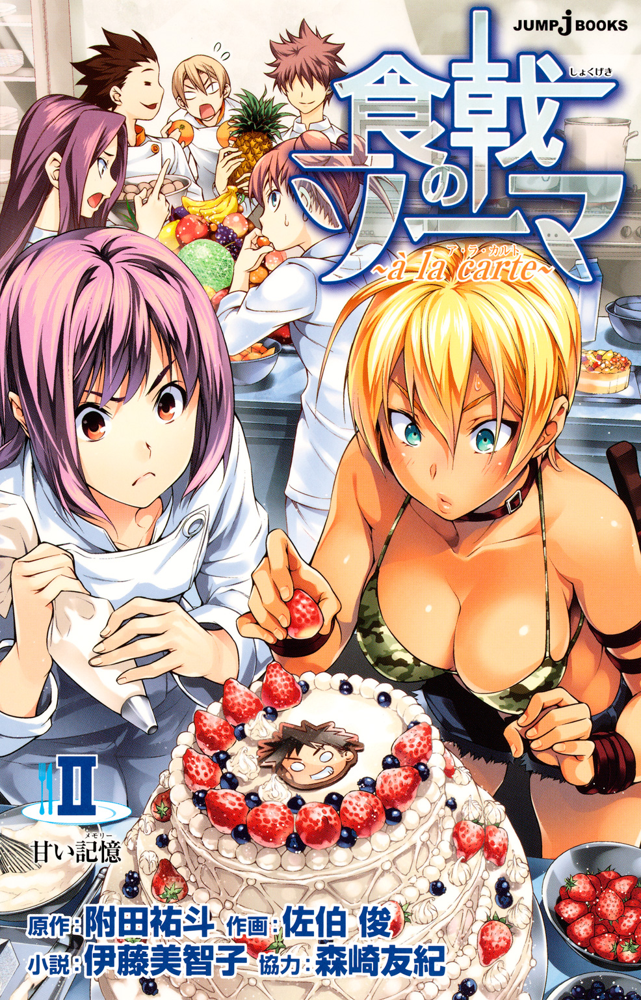
この本は縦書きでレイアウトされています。
また、ご覧になる機種により、表示の差が認められることがあります。
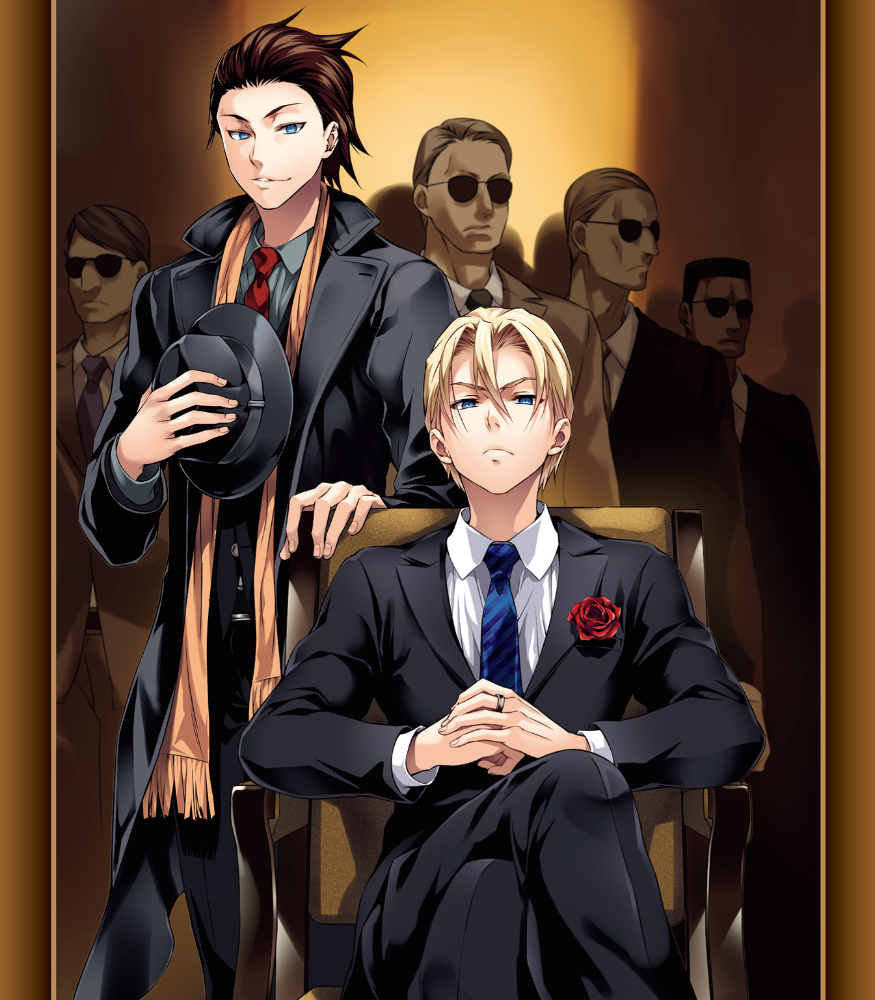
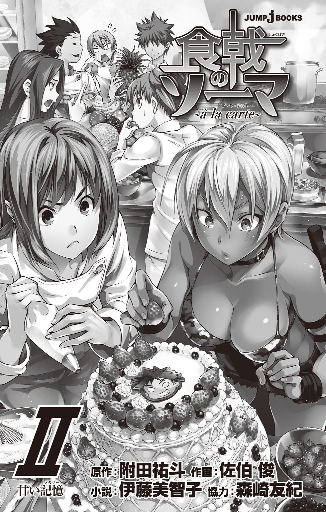
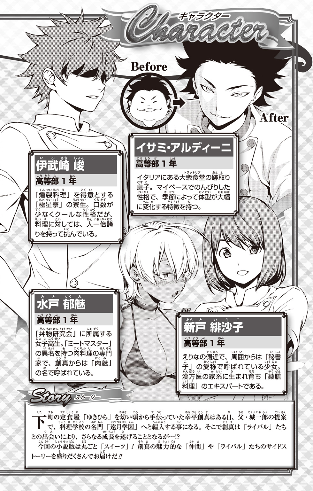
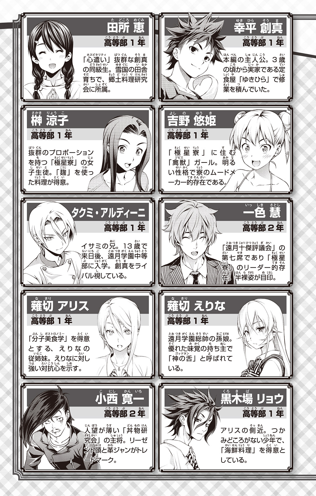
食戟のソーマ〜à la carte〜 Ⅱ
Contents
番外編『発酵屋本舗 榊一家』
★この作品はフィクションです。実在の人物・団体・事件などには、いっさい関係ありません。
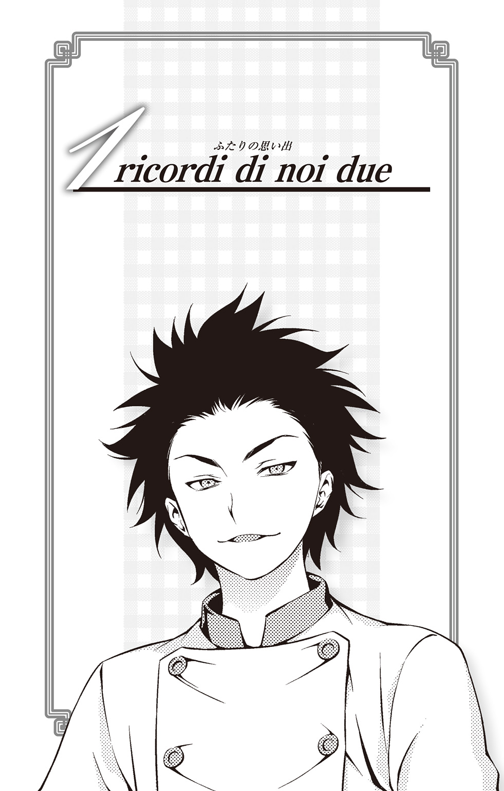
「イタリアのシニョールはいつも身なりに気を遣っていなくてはダメよ」
イタリア人の母であるマンマが口癖のように言うのを、イサミ・アルディーニはこれまで何度聞いたかわからない。母がイサミや、双子の兄であるタクミにそう言うのは、おそらく二人が日本人とのハーフであるため、ときに自己主張の強いフィレンツェの人々・フィオレンティーノに負けるな、という意味をこめてだろう。
確かに、フィオレンティーノに限らずイタリア人はみんな「narciso（ナルチーゾ）」である。いついかなるときも、自分をどうオシャレに見せるか考え、センスのいいシャツとズボンで身を固め、革の靴で颯爽と歩く。「かっこいいこと」はこの上ない美徳だ。きっとそれは連綿と続くイタリアの「美意識」なのだろうと、もう子どもではないが、かといって大人でもないイサミは思う。
「フィレンツェはルネサンス発祥の地であり、音楽、美術、そして科学においても、かつては世界の先端だったんだぞ」
そんな風に主張する学校の先生に「大昔でしょ？」と思わずツッコみたくなるのをぐっとイサミは我慢する。こんなとき「イタリア人」ではなく「日本人」として第三者的視点でものを見ている自分に気がつく。だが同時に、自分の中にその血が流れ、そしてこの土地で生まれ育ったことを誇りに思う。
イタリア人の母と日本人の父が、このフィレンツェの地でトラットリアを開いたのは、イサミとタクミが生まれるずっと前である。幼い頃から厨房で遊んでいた双子は、自然と料理の仕方を覚え、いつしか兄弟で店を任されるようになった。二人が作るメニューはフィオレンティーノの舌を唸らせ、あれよあれよという間に人気店になった。もうすぐ十三歳になる二人は、この店になくてはならない料理人であったが、広い世界を見せたいという父や叔父の意向により、来年から日本の料理学校へ通うことが決まっていた。
「イサミ、ストラコット上がったぞ」
「こっちも前菜できるよー、兄ちゃん」
「よし、じゃあ先にそっち出して」
「Va benissimo !（了解！）」
今日もトラットリア・アルディーニは活気にあふれている。地元の老若男女が、食事を囲みながら共に笑い、一日のことを語らう場にこの店はふさわしい。ホールには父母と、何人かの従業員がいるが、忙しいときにはできあがった料理の皿をそのままイサミが運ぶこともある。
「おっ、イサミ、また痩せてきたな？」
「そろそろ夏が近づいてくる証拠だな」
「一年中その姿ならいいのにな」
店の客達がイサミを見て口々に声をかけてくる。
「しかたないよー。だって、冬は、おいしいものがたくさんあるからねー」
イサミは明るく笑いながら考える。夏は痩せ、冬は肥えてしまうイサミの体質も、この店の常連客にはおなじみの光景だ。
「あれだろ、まかないでもうまいもん食べてるんだろう？」
「アルディーニ兄弟ならまかないもうまそうだな」
「そうだイサミ、タクミに今日もうまい料理をありがとうって伝えてくれ」
「君達兄弟がいなくなるなんて、本当に淋しいな」
「日本なんて遠い国やめておけよ」
「早く帰ってこいよ」
「バカンスのときはまたおいしい料理を作ってくれよ」
人々が口々に二人の料理を褒めてくれることに、イサミはこの上ない喜びを覚える。そしてそのあとは、決まってこう続く。
「うちの娘はタクミにご執心でね。今度、デートしてほしいと伝えてくれないか？」
「タクミは出発前に、ファン達をどうするのかね？」
「罪作りな男だよまったく」
彼らはそんな風に楽しそうに、ワインを呷りながらタクミの噂話をするのが好きだった。
気質としてはどちらかというと閉鎖的なフィオレンティーノも、タクミには（もちろんイサミにも）一目を置いていた。子どもながらも卓越した料理のセンス、腕だけでなく、「伊達男」としての資質も備えていると彼らは言う。タクミはいつも彼らから「adone（ハンサム）」と呼ばれ、「女性にモテる男」であることが至上命題であるイタリア人から見ても、十分それに値する男らしい。
確かにタクミは、本当によくモテる。
中性的な容姿の美しさに加え、主張しすぎない性格。厨房に入ったときの、子どもとは思えない、凜とした表情。女性には最低限の敬意を払いながらも、他のイタリア男性とは異なる硬派な対応をし、日本人としての古風さを漂わせる。見た目はイタリア人だが、中身は日本人。そのギャップに、多くの女の子達が虜になる。
イサミはそんな女の子達に、何度タクミ宛てのラブレターを渡してくれるよう頼まれたかわからない。そのたびにイサミは快く受け取りタクミに渡し、温かくなりゆきを見守るのが常だった（その後はどうなったかは知らないが、おそらくすべて断っていたように思う）。
タクミがモテることに対し、イサミは「当然」だと思っている。
ただ、イサミ自身はそういうこと――つまり恋愛に関することがあまり得意ではない。
兄のタクミが、母に似て金色の髪に彫りの深い顔立ちをしているのに対し、イサミは黒髪で顔立ちもどちらかと言えば日本人らしい。性格は甘えん坊で、要領がよく、昔からいろいろなことができた。料理はともかく、ゲームや勉強では、兄に負けたことがない。
見た目は日本人だが、中身はタクミよりイタリア人らしいかもしれないと、自分では思っている。これまで、容姿に対しても性格に対してもコンプレックスを持ったことはなかったが、他の同級生がイタリア人らしく颯爽と女の子を誘うのを見ても、イサミにはあまり興味がなかった。
ただ料理ができればいい。そしていつの日か兄を超えたい。
イサミにとってはそのことの方が大事だ。
「そんなのだからイサミはダメなのよ」
大きな黒い目を見開き、眉をつり上げて幼なじみのビアンカが言う。授業が終わり、イサミはビアンカと二人でシニョリーア広場を横切り、石畳の坂を進んでいく。
「いい？ 恋のない人生なんて味気ないものよ」
「......大人の発言だね？」
「あんた達兄弟が子どもなのよ！ タクミもイサミも、料理以外まったく興味がないんだから！」
少しふてくされたようなビアンカに指摘されると、イサミは思わず肩をすくめる。もう何年か前から彼女はずっとタクミに片思いをしているらしい。少し前に、託されたラブレターをイサミがタクミに渡したこともあるが、当然のことながら恋は実らなかった。
イタリア人らしい彫りの深い美しい顔立ち。意思の強そうな、利発そうな眉毛。澄んだ黒い瞳と長いまつげ。少し日焼けした健康的な肌に、たゆたう黒髪――幼なじみというひいき目を差し引いても、ビアンカは美人だとイサミは思う。確かに、普通の男の子なら、告白されたらつきあったりするのだろう。しかし、当のタクミはまったくと言っていいほど関心を示さない。ビアンカの気持ちを考えると、少しかわいそうだなとイサミは思う。
だが料理の腕を上げることに必死なタクミにとって、恋が邪魔になると思う気持ちも、同じ志のイサミにはよくわかる。
「あなた達、来年から日本に行くのよね？」
「うん」
「もう決まったこと？」
「そうだねー」
「そう......」
ため息まじりにビアンカはうつむく。今は七月。これから迎える長い夏休みが終われば、すぐ秋が来て冬が来る。日本に出立するまで半年しかない間、仮にタクミと両思いになったとしても、一緒に過ごせる時間はあまりにも少ない。
「......ボクが兄ちゃんに言ってあげようか？ ビアンカの気持ち」
あまりにも淋しそうな顔を見せるビアンカに、イサミは親切心から提案してみる。だが、それを聞いたビアンカは、真っ赤になって怒った。
「ちょ、ちょっとやめてよ！ いい？ 絶対タクミに余計なこと言わないでよ！ 絶対よ！」
「あ、う、うん......ごめん......」
ビアンカの勢いに気圧され、思わずたじろぐ。もしかすると、こういうところが、日本人的発想なのだろうかとイサミは考える。タクミとビアンカのことはあくまでも二人の問題であって、イサミが立ち入ることではない。ビアンカから協力を頼まれたときにそうしてあげればいいのだ。余計なことをしてしまった、と素直に反省する。
「......ところで、明日のシネマ、どうする？ 行く？」
「それはそれ」として割り切ったのだろう、ビアンカがすっかり元に戻った調子でイサミに尋ねる。ビアンカは怒っても、こうやってすぐカラッと忘れてしまうところが、友達としてとてもつきあいやすく、そしてチャーミングに見える。くるくると変わる表情がとても愛らしい。
「何の映画やるんだっけ？」
「多分、『ローマの休日』」
「また？ 去年もそうだったじゃん。フィレンツェが舞台の映画じゃないってみんなブーブー文句言ってたのに。しかもアメリカの映画だし」
「映写技師さんが生粋のローマっ子だからしょうがないのよ。私は好きだけどな。あの映画」
ビアンカが少しうっとりするような表情で言う。
「映写技師さんって？」
「フィルムかける係の人のことよ」
「ああ！」
「イサミが日本に行く前に、もう一回イタリア語を復習しないとね。またみっちり教えてあげるわ」
以前ビアンカに厳しくイタリア語を教えてもらったことを思い出し、イサミは少し怯む。
「............。えっと......で、明日の話だよね？」
自分の方に向いた話の矛先を逸らそうと、慌てて話題を変える。
毎年、七月にはシニョリーア広場でイベントがある。通常は無料のコンサートが多いが、年に一度だけ歴史的な城壁を利用して映画を上映するのだ。野外に並べられたイスに座ったり、ときに、敷物を敷いた地面に寝転んで映画を見るのは開放的でなかなか楽しい。本当はもっとアクションシーンの多い映画や、アニメの方が面白そうだけれど、とイサミは思うが、老若男女当たり障りなく、ということになると古い名作がちょうどいいのだろう。
「タクミは行くのかしら？」
「うーん、どうかな。明日は店あるし......」
「え、じゃあイサミも来ないの？」
「うん」
「そんなぁ。つまんないじゃない！ 可憐なシニョリーナをひとりで映画に行かせる気？」
「そんなこと言われたって、ボクだって行きたいけど......店の方も大事だよー」
「なんて冷たい男なの！」
「言いがかりだよ」
「ちょっとお前達、店の前でなに騒いでるんだ？」
いつの間にか腕を組んだタクミが二人のそばに立っている。イサミがふと見上げると、二人は歩きながら自宅、つまりトラットリア・アルディーニの前まで来てしまったらしい。
「あ、タクミ......」
タクミを見た途端、急にビアンカがしおらしくなる。イサミにはあんな調子で活発な姿を見せるが、タクミを前にすると急に女の子らしくなる。やはりラブレターを渡し、自分の気持ちを知られていることが、ビアンカを奥手にさせるのかもしれない。
「あのね、明日、三人で一緒にシニョリーア広場の映画に行かないかと思って......でも、お店があるってイサミに聞いたから」
「映画......」
タクミはチラッとイサミの方を見る。
「......ごめんね、ビアンカ。せっかくだし、一緒に行きたいけど、お店の仕込みもあるし......」
イサミは、タクミとビアンカの双方を気にしつつ、申し訳なさそうにビアンカに謝る。そんなイサミの気遣いをよそに、タクミから返ってきた言葉は意外なものだった。
「いや、明日は休みになった」
「えっ？」
「父さんと母さんが急にミラノに行くことになった。古い外国の友達がわざわざイタリアに来たらしい。その日しか会えないし、ちょうど広場のイベントもあるから休みにしたいって、さっき言ってた」
「ホント？」
よっぽど嬉しいのだろう、タクミの言葉に、ビアンカがキラキラと目を輝かせる。
「じゃ、明日夕方七時にシニョリーア広場ね」
ビアンカは弾んだ声で、手を振りながら帰っていく。イサミとタクミもビアンカに手を振った。
夜、十時に営業を終えると、トラットリア・アルディーニの厨房は途端に静かになる。ときおり、石畳の上を通る車の音や、遠くで騒ぐ若者達の声が聞こえてくる以外は、平穏な夜だ。イサミとタクミはいつものように店内の床をモップで磨き、外に出ているテーブルやイスを片付け、料理の仕込みをする。
「それにしても珍しいねー」
トマトソースを煮こんでいるタクミに、タマネギの皮をむいているイサミが話しかける。
「何が？」
「兄ちゃんが店を休むとか言い出すなんて。いつもなら、父さんと母さんがいなくたって、開けるじゃないか」
「ああ」
そんなことか、というようなトーンでタクミが答える。
「たまには地域のイベントに参加するのも大事だろうと思ってさ」
「ふーん。っていうか、それが珍しいんじゃない？」
「そうか？ 特に理由はないよ」
「............」
大きな寸胴鍋を木のヘラでかき混ぜながら、タクミは曖昧に答える。
もしかして、兄ちゃんもビアンカのことが――？
イサミはその表情をうかがおうとするが、鍋から漂うトマトの香りに紛れるように、タクミの考えを読み取ることはできない。
別にイサミはビアンカのことが好きなわけではない。もちろん、幼なじみとして、友達としては大好きだけれど。それなのに、どこか、なにか心がざわざわする。
多分それは、この三人の関係が壊れるせいかもしれないとぼんやり思う。ビアンカがタクミにラブレターを渡したときから、予測できていたことなのに。わかっていながら、どこか子どもらしい淋しさを、イサミは感じるのだ。
「まあ、兄ちゃんがいいならいいけどさ」
イサミもまた、曖昧な返事をする。
ビアンカのこと、どう思ってるの？ と、ストレートに聞ければ、もっと楽になるのに、と思う。隠れている気持ちを日の光にさらしてしまえば、ずっと楽なことが多いと、イサミは感覚的に知っている。なにもかも、イタリアの太陽みたいに明るくはいかないものなのだな、とイサミはぼんやりと思った。
「『ローマの休日』がよかったのに......ほんと、残念......」
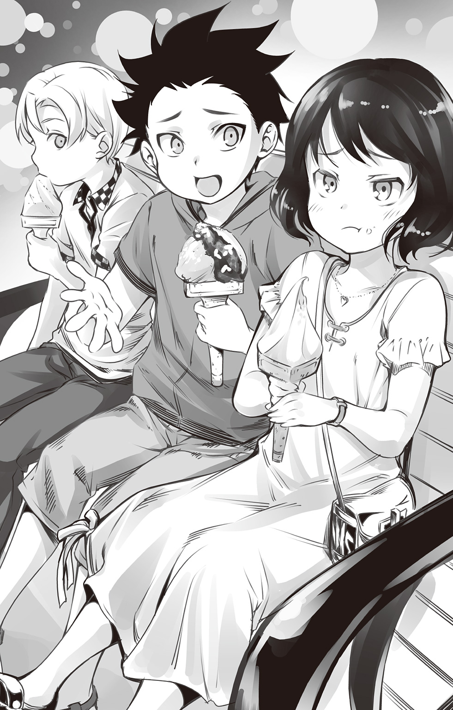
ビアンカはがっかりした様子でつぶやきながら、レモンのジェラートを食べている。
広場での映画鑑賞が終わり、すっかり暗くなったシニョリーア広場から、イサミとタクミ、そしてビアンカはアルノ川の河岸まで移動してきた。三人は途中、フィレンツェで一番おいしいと評判の、ドルチェの店『クォーレ』でそれぞれジェラートを買った。
広場で上映された映画は「ローマの休日」ではなく「スパイダーマン」だった。昨年まで担当していた「ローマっ子の映写技師さん」は、若い映写技師に代わったのだと、近所の人が教えてくれた。若い映写技師にとっては「スパイダーマン」が老若男女、当たり障りのない映画なのだろう。
そのことに、ビアンカはひどくがっかりしている。「そこまで落ちこまなくても」と思わなくもないが、楽しみにしていたものがなくなってしまったときのやりきれなさを、うまく消化する術がないのだろう。
正直、ビアンカには申し訳ないが、イサミもタクミもとても楽しめた。「スパイダーマン」はアメリカのコミックで少し読んだことがあり、なじみもあったし、ラブストーリーよりはヒーローアクションの方が断然おもしろいと思うのだ。
だが、隣でがっかりしているビアンカを見ると、さすがにかわいそうな気もしてくる。イサミはピスタチオとチョコ、イチゴを重ねたジェラートを食べつつ、ビアンカにかける言葉を探す。
「ほら、そんなに見たかったんならさ、ＤＶＤ借りて見るとか、他にも方法あるじゃん」
「広場がよかったのよ。開放感あるし、それに......二人だってせっかく休みだったのに......」
「二人」というより「兄ちゃん」とだろうな、とイサミは察する。
「じゃあ今度、うちに来て見るとか。もうすぐ店もバカンスで休みに入るし、兄ちゃんもうちで見る方が店のこと気にしなくていいし、楽だよね？」
「まあな......けど、ビアンカ、大丈夫なのか？」
その言葉に、ビアンカはますます暗い表情になり、静かに首を横に振った。
「......ダメなの。......もう、一緒に映画見たりとか、できないと思う」
静かにつぶやくビアンカの態度に、イサミが首をかしげてタクミを見ると、タクミは何かを知っているのか、少し真面目な表情で口を開いた。
「いつ発つことになったんだ？」
「明日......」
「ねえ、何の話？」
さすがに自分だけ知らないことに疑問と不信感を覚え、イサミは二人に尋ねる。ビアンカはちらりとタクミに視線を送ったあと、黒い瞳を潤ませるようにイサミを見つめる。
「私......明日、ローマに引っ越すことになったの」
「えっ？」
「マンマとパーパが離婚することになって......。私はパーパについていくことになったの。パーパの実家はローマだから、それで......」
「そんな......」
突然そんな話を聞かされ、イサミは思わず面食らう。タクミの方を見ると、やはり残念そうな顔をしている。
「ひどいよ。なんで黙ってたんだよ」
「ごめん......なんかイサミには、なかなか言い出せなくて」
「そんな！ 兄ちゃんには言えてボクには言えないなんて......ずっと幼なじみだと思ってたのに。ひどいよ」
イサミは思わず「いくら兄ちゃんのことが好きだからって」と、口走りそうになるのをぐっと堪える。そのこととビアンカが引っ越しの事実を黙っていたことは、混同してはいけないと一瞬の理性が頭をよぎった。
「ごめん......」
いつもは強気のビアンカが、イサミに言い返してこない。それが、余計に淋しい。
「明日なんて......なんで今日まで......」
「ごめん......」
「............」
沈黙が三人を包む。川の流れる音だけが、静かに、重く、イサミの耳に響く。暗い川が、いつの間にかイサミだけを流してしまったかのような、そんな錯覚にさえ陥る。イサミは静かに口を開いた。
「......もういいよ。じゃあ、さよなら！」
今日の「さよなら」は「Ciao」ではなく「Addio」と伝える。この言葉は、当分会えなくなったり、絶対に会えなくなる人に対して言う言葉だ。
一瞬ビアンカの表情が曇ったのがわかった。だがイサミは二人を残し、その場を去った。
ビアンカにお別れをきちんと言えなかったことを、家に歩いて帰るまでの間にイサミは後悔した。しかし、ビアンカが自分にだけローマに行くことを黙っていたことへの悔しい気持ちは、なかなか消えなかった。
いくらビアンカがタクミのことを好きだとはいえ、三人は幼なじみだったはずだ。その関係は、自分が知らないうちにとっくに壊れていたのかと、そしてそのことに気づいていなかったのは自分だけだったのかと、だんだん淋しい気持ちになってくる。
部屋のベッドで大の字になっていると、ノックの音と共にドアから薄明かりが漏れる。見ると、タクミが部屋には入らず、イサミをのぞいていた。
「兄ちゃんはこのこと、知ってたんだね。だから、お店を休むなんて言い出したんだ」
イサミがベッドから起き上がると、部屋に入ったタクミがその隣に腰をかける。
「ビアンカ、淋しそうだったぞ」
「............」
「別れのあいさつ、しなくていいのか？」
「......だって、ボクには知られたくなかったって言ってたし」
「お前......なに子どもみたいなこと言ってんだ」
「兄ちゃんに言われたくないよ。いっつもゲーム負けるとすぐ泣くじゃん」
「さ、最近は泣いてないぞ！」
タクミはイサミの言葉にむきになるが、すぐさま咳払いをしてイサミに向く。
「......そんなことより、ビアンカのことだけど。オレ達もう十年近くのつきあいなんだぞ。幼なじみなのに、このままでいいのか？」
「兄ちゃんこそ。ビアンカのこと、ちゃんと考えてるの？」
イサミは口にしてすぐに「しまった」と思った。ビアンカに、タクミに余計なことを言うなと口止めされていたことを思い出す。
「イサミ、そのことだけど......」
「いや、いい、何でもないんだ兄ちゃん。ごめん。そうだよな、幼なじみとしてちゃんとしなきゃいけないよなー」
思わず取り繕うようにイサミは声のトーンを明るく変える。タクミがビアンカをどう思っていようと、イサミは聞きたくなかった。聞いてしまったら、さらに幼なじみのバランスが壊れそうで、これ以上は何も聞かない方がいいだろうと、イサミは思う。
「......だけど、出発が明日なんじゃ何もできないね」
「いや、大丈夫だ」
「えっ？」
「夏休みが終わる前に、一日だけフィレンツェに戻ってくるらしい。最後に荷物を整理するんだそうだ」
「ほんと？ それじゃあ......」
「別れを言う時間はある」
それなら、とイサミはタクミの方を見る。
「だったら兄ちゃん、うちでお別れ会しよう」
「お別れ会？」
「うん。お店も休まなくて済むでしょー？」
「なるほど......そうだな。そうしよう」
イサミの言葉に、タクミも大きく頷いてくれた。
早速、ミラノから帰ってきた両親に、イサミとタクミは店を一日貸し切りにしたいと申し出た。その提案に、両親も従業員達も快く賛成してくれた。どうせなら近所の人達や常連客も呼んで、盛大にやろうということで話がまとまった。
イサミとタクミは相談した結果、ビアンカのために特別なメニューを考案することに決める。
「パンツァネッラは外せないな。それからパッパルデッレ・アッラ・レプレ......」
『パンツァネッラ』とは、前菜の一皿目として、フィレンツェなどトスカーナ地方で食べられる一般的な料理だ。『パンのサラダ』として知られるこの食べ物は、元は、古く堅くなったパンをおいしく食べるための工夫から生まれたものである。生のトマトやタマネギ、アンチョビなどを、バジリコ、オリーブオイルで味付けした、シンプルなサラダだ。
一方の『パッパルデッレ・アッラ・レプレ』は、野ウサギのラグーソースであえた平打ち麵のパスタである。乾燥パスタ料理にはあまり特色のないトスカーナにおいても好まれるメニューで、ビアンカがローマに行っても、フィレンツェのことを思い出せる料理のひとつだと、二人は確信している。
「でもどうする？ 秋から冬にかけての料理だけど......」
「ちょっと無理を言って、野ウサギを分けてもらおう。お父さんに頼めば、なんとかなると思う」
「そうだね。......あ、確かビアンカって、トリッパも好きだったよね？」
「ああ、そうだったな」
『トリッパ』とは、牛の胃袋をトマトやニンニク、チーズなどで味付けしたものである。
「昔、下処理する前のハチノス（牛の胃袋）を、厨房に入ってきたビアンカが『グロテスクで怖い！』って泣いてたことあったよなー。でもそのあと、ボク達が作ったトリッパを、うまそうに食べてたの見て、ビアンカらしいなって思ったけど」
「ビアンカの家族がうちに来たときは、よく作ったよな」
「あのお父さんとお母さんが離れちゃうなんて......ちょっと残念だよね」
「......他の家の事情は、オレ達にはわからないけどな」
家族が離ればなれになるビアンカの気持ちを思うと、イサミは少し心が重くなる。それはおそらく、タクミも同じなのだろう。
二人は毎晩、店が終わると、夜遅くまでお別れ会のメニューを考えた。普段、アルディーニでは一品料理が主流だが、今回はコース料理を考えることにする。二人にとって、コースを考えるのは初めてのことだった。
だいたいのメニューが決まったが、ひとつだけ二人の頭を悩ませるものがあった。それは、コースの最後に出す「ドルチェ（デザート）」だった。
夏休みの昼下がり、自宅のテラスでリセッタ（レシピ）を書くイサミとタクミは、リモナータを飲みながらアイデアを出し合っていた。
「どうせなら、ビアンカの好きなものを出してあげたいよね」
イサミがそうつぶやくと、タクミも静かに頷く。
「あいつの好きなものって......なんだっけ？」
「うーん......」
トリッパが好きだったことはエピソードもあり、印象的なので、二人の記憶にもよく残っている。だが、改めて他に何が好きだったかと問われると、なかなか思いつかない。
「いつも一緒にいたはずなんだけどねー」
「近すぎて、わからないのかもしれないな。本人に聞いてみるか？」
「そんなのダメだよ！ あのビアンカのことだから、『なんであんた達、私の好きなもの忘れてるのよ。きぃぃっ！』ってなるかもしれないよー」
「そうだな。逆に『......知らなかったんだ。あんなに一緒にいたのに......』とか落ちこまれてもやっかいだな」
「あー、確かに。それもあり得るねー」
二人はビアンカのリアクションを想像すると、はぁ、と思わず息をつく。有力な候補が浮かばないまま、あっという間に一週間が過ぎた。
「ビアンカの好きなもの、か......」
石畳の街を歩きながら、何か浮かばないかとイサミは考える。
それにしても、今日のフィレンツェは暑い。まばゆいばかりの夏の太陽が地面をこれでもかと照らしている。その照り返しが、イサミの顔をじりじりと焦がすように思えてくる。旅行で行った日本の蒸し暑さよりはいくぶんましだが、それでもフィレンツェの夏は湿気が多くむしむししている。痩せたイサミの体型でも、夏ばてになりそうだ。
汗を拭きながら階段をのぼった先に、フィレンツェで評判のドルチェ店『クォーレ』が見えてくる。イサミは慌てて店に駆けこむ。
「すみません、ジェラートひとつ、ください」
「お、イサミ。今日はあの女の子、一緒じゃないの？」
若い店主が冷やかすようにイサミをニヤニヤと見つめている。
「女の子？」
「ほら、この間、タクミと三人で来た子。あの子、ひとりでよく来ることはあったけど、まさかイサミ達の友達だとは知らなかったよ。どちらかの恋人かい？」
「ビアンカ、そんなによく来るの？」
イサミは店主の質問には答えず問い返す。
「えっ......ああ。このところは見ないけどな。一時期は毎日来てたぞ」
その店主の言葉に、イサミはさらに食いつく。これはもしかすると――。
「ねぇ、ビアンカはジェラート、何食べてた？」
前のめりになるイサミに、店主は思わず怪訝な表情になる。「恋人ではないのか」とがっかりした表情にも見える。
「......そうだなぁ。はっきり覚えてないけど、レモンとか、柑橘系が多かったような気がするな。他の味も試すときもあったけど、結局いつもレモンに戻ってた」
「レモン......レモン......か」
イサミはつぶやくように繰り返し、店主にあいさつをするとジェラートを買うのも忘れてその場を走り去った。
自宅に戻るなり、早速イサミはそのことをタクミに伝える。
「そうか、レモンか......」
「うん。今ちょうど暑い時期だし、さっぱり食べられるものとしては一番いいと思うんだー」
「よし、それでいこう！」
翌日、二人は母親の実家であるソレントへ旅立つことに決めた。ここにはイサミとタクミの祖父母夫婦が住んでいる。少しの間、店がバカンスで休みになることもあり、二人はそこに滞在させてもらいながら、ドルチェを考案することにしたのだ。祖父母は、ソレントの名産であるレモンやオリーブを栽培していた。
イタリア南部のナポリから鉄道で一時間、水路でも三十分前後の場所に位置するソレントは、夏は海水浴場、冬は避寒地として親しまれているリゾート地でもある。
「よく来たね、タクミ、イサミ」
フィレンツェからの長旅を終え、祖父のアントニオと祖母のドーラが二人を出迎えてくれる頃には、ソレントはもうすっかり夕方になっていた。
中心部の喧噪から離れ、レモンの木が立ち並ぶ山間に建つ白い小さな家は、素朴さをたたえながら夕日を浴びている。
二人は、大きく伸びをすると、美しいアマルフィ海岸から運ばれてくる風を、胸いっぱいに吸いこむ。
「この空気、久しぶりだな。店を始めてから、なかなか来られなかったしな」
「本当に無事に着いてよかったよ」
イサミがしみじみ口にすると、心配そうに祖母が二人を見る。
「おや、何かあったのかい？」
「兄ちゃん、途中で切符なくして大騒ぎだったんだよ。そうこうしてるうちに、車掌さんが来るし。慌てて探したら、ズボンのポケットに入ってたんだよねー」
「............」
イサミの指摘に、タクミは真っ赤になってうつむいている。その様子に、祖父も困ったようにタクミを見ている。
「そんなことがあったのか」
「......残念だけど、きっとタクミひとりではここまで来られなかったでしょうね」
「............」
「でしょー、おばあちゃんもそう思うでしょ？ 自分で地図を読むってきかなかったんだけど逆方向に歩き出したり、昼ご飯を買うときもボクが注文して、支払いもボクがしてるんだよ。......ま、兄ちゃんに財布を任せると、多く払いすぎたりするからねー」
「......そのぐらいでいいだろ、イサミ」
タクミは祖父母の前で話すイサミを恨めしそうに見ている。
「タクミは本当に料理以外のことは苦手なんだな。まあ、それだけ好きなことがあるのはいいこととも言えるがな」
「そうね。イサミがしっかりしてくれているから、タクミも料理に没頭できるんでしょうし。二人は足りないところを補い合う素敵な兄弟ね」
祖父も祖母も、笑いながら優しく二人を見つめている。その笑顔に触れると、イサミとタクミはいつも癒されるのだった。
二人は用意してもらった寝室で旅の荷物を片付けると、久しぶりに会った祖父母のために夕食を振る舞うことにした。
海の近いソレントでは、内陸のフィレンツェより新鮮な魚介類が手に入る。ソレントが位置するカンパニア州の料理は、シンプルで味わい深いものが多い。せっかくならその土地を活かしたものを、と、イサミとタクミはトマトとイカ、エビを使った『スパゲティ・アッラ・プッタネスカ』を作った。
「うん、やっぱり、タクミとイサミが作る料理は、いつ食べてもおいしいな」
「二人が来てくれて、私達は本当に幸せよ」
イサミとタクミが作ったパスタに舌鼓を打つ祖父母を前に、二人はお互いに顔を見合わせ少し微笑む。
自分達の料理を、おいしそうに食べてくれる人がいる――。
この笑顔が、日々の疲れも、そして今日のような旅の疲れも吹き飛ばしてくれるのだ。
「しかし、お前達がプッタネスカを作るとはね。さては、気になる女の子でもできたか？」
祖父はフォークにパスタをくるくると巻きつけると、そう言って笑いながら豪快に、口の中に放りこむ。
イタリア料理には変わった名前のものがいくつかある。チキンを豪快に焼き、辛いソースで食べるトスカーナの料理、『ポロ・アッラ・ディアボラ』の『ディアボラ』は『悪魔』に由来する。同じように『プッタネスカ』とは『娼婦』のことを指す。
祖父はその刺激的な言葉から半ば強引に、二人に『女の子ができた』という話に持っていきたいようだ。
料理としての『プッタネスカ』は、魅惑的な味という意味ではなく、忙しい娼婦が考えたスピード料理という説もある。ナポリのそばにあるイスキア島から伝わったと言われ、一皿で満腹感を得られるというところも、この料理が一般的になった理由である。
「おじいさんったら。この子達に女の子の話なんて、まだ早いわよ」
祖母は静かにワインを口にしながら、困ったように祖父をたしなめる。母や祖母にとって、息子や孫はいつまでも自分の手元にいてほしい、自分以外の女の子を追いかけることは無意識におもしろくない、ということなのかもしれない。
「早くなんかないさ。もう十三歳になるんだぞ。それに聞いた話だと、女の子のためにメニューを考えてるって言うじゃないか」
「！」
その言葉に、イサミとタクミは思わずドキッとしてフォークを止める。
祖父はどうやら事前情報を母から聞いていたらしい。嬉しそうにニコニコしながら言葉を続けている。
「安心したよ。二人は料理にしか関心がなくて、ちょっと世情に疎いところがあるからな。特にタクミは」
「............」
祖父がからかうようにタクミを見ている。話題になった当の本人は「放っておいてくれ」という顔をしている。その気持ちはイサミにもよくわかる。
「ナポリの男、ナポレターノらしく、勇ましく女の子に向かっていかないとな！」
困った顔の二人に構わず、祖父は自分の発言に酔うかのように頷いている。
母は『フィオレンティーノに負けるな』と言い、その母の父は『ナポレターノらしく』と言う――土地に根ざした言い方をするのを聞いて「やはり親子なのだな」とイサミは半ば感心する。
「それで......あなた達は、どんなメニューを考えているの？」
一方、祖母の方は二人の態度に気づいたのだろう、さりげなく話題をそらしてくれる（だがもしかしたら、これ以上、孫の色恋沙汰を聞きたくないという親心なのかもしれない）。
「そのことだけど......レモンを使ったドルチェにしたいんだ」
「おばあちゃんのところなら、たくさんレモンがあるから、ヒントになるかもしれないと思って」
タクミとイサミは、待ってましたとばかりに祖母に話を続ける。
「レモン......？」
祖母が何か言いたそうに、祖父の方を向く。話題が変わったことで残念そうな顔をしていた祖父が、怪訝な表情になった。
「残念だが、レモンの旬は今じゃないぞ」
「えっ？」
祖父の言葉に、イサミとタクミは驚く。
「レモンは夏に食べることが多いから夏の果物だというイメージがあるが、本当の旬はこの辺りでは二月だ。逆に真夏は採れないんだよ」
「そんな......」
「ジャムを作るために、少しだけなら残っているレモンもあるけれど......」
心配そうに二人を見る祖母の言葉に、イサミとタクミは顔を見合わせる。
「......少し、考えてみる」
二人は落胆を悟られないように、祖父母にそう告げるのが精一杯だった。
夕食が終わり部屋に戻ったあとも、二人の表情は硬かった。
「まさか、レモンの旬が二月だったなんて......」
「ごめん兄ちゃん。ボクも知らなかった」
「いつも食材の仕入れは父さんに任せっきりだもんな。こんなことじゃ......料理人失格だ」
タクミは厳しい表情で頭を抱える。
イサミはタクミの気持ちが痛いほどよくわかる。タクミの悔しさは同時にイサミの悔しさでもあった。
トラットリア・アルディーニの食材を調達するのは、いつも父と母の役目である。二人の食材に対する目利きは鋭く、こだわりも強い。仕入れのプロと言っても過言ではなかった。アルディーニ兄弟は、両親が用意する食材を百パーセント信用していた。厨房に入れば、その日、そのときの旬である新鮮な肉や野菜が並んでいる。料理を担うタクミとイサミは、食材の心配を一切する必要がなく、調理に没頭することができたのである。
だが今回はそれが仇となった。
思えばこれまでアルディーニでは、レモンを主体にした料理をあまり作ったことがなかった。調味料に使用するレモンも、父と母が持ってきてくれたときにだけ使っている。その旬がいつであるかは、あまり考えたことがなかったのだ。
「甘かったな、本当に......」
「うん......」
「......レモン以外でドルチェを考えるか」
タクミが息をついてイサミを見る。イサミは静かに首を振った。
「もう少しだけ考えてみようよ。できれば......ビアンカが好きなものの方がいいし」
「そうだな」
幼さの残る二人の少年は静かに頭を垂れる。日本に行ったら、材料を調達してくれる父も母もいない。そんな中で、一人前にやっていかなければならないのだ。料理人として、腕だけではなく知識も大切なのだと思い知った夜だった。
翌朝、落ちこんだ二人を明るく励まそうと、祖父母がアマルフィ海岸へ連れていってくれることになった。
「こんなときは海を見ればきっと、いい考えが浮かぶわよ」
「そうだな。海岸にはきっと、かわいい女の子もたくさんいるぞ！」
「女の子は関係ないと思うけど」と、イサミがこっそりタクミに耳打ちすると、タクミは黙って頷いている。イサミもタクミも、祖父母の気持ちは嬉しかったが、心中はそれどころではない。早くドルチェを決めなくてはという焦りが募ってくる。だが、祖父が運転する車が海岸線に近づくにつれ、二人は窓から身を乗り出し、青い空と眼下に広がる海に歓声を上げた。
ユネスコ世界遺産に登録されているアマルフィ海岸は、本当に美しい。切り立った崖に並んだ白く輝く家々、宝石のように碧く光る海。ブーゲンビリアが咲き誇り、たくさんの人々で賑わう海水浴場。古代ローマ時代から愛される風光明媚な場所である。
行く前はあれほど「そんな気分じゃない」と言っていたイサミとタクミも、いざ海岸を前にすると、泳がずにはいられなかった。タクミは波の上に寝そべるように漂い、イサミはいたずらを思いつき、タクミの足を突然、引っ張る。久しぶりに入る海は、真面目に凝り固まった二人の気持ちを開放してくれた。
人生とは、そういうときほど幸運が舞いこむものだ。
帰りがけに、祖母がお土産を買いたいと、アマルフィの中心であるドゥオーモ広場に立ち寄る。カラフルな店先には、特産のレモンやオレンジ、陶器、お菓子などが並んでいる。
「やっぱりこの辺りはレモンが特産なんだねー」
「旬じゃないんだろうけど、名物だからいくつか出してるんだろうな」
「んっ？」
イサミは瓶の中に入った飲み物に気がつくと、それを手に取って眺める。
「兄ちゃん、ちょっと」
「なんだ？」
手招きすると、イサミの元へとタクミがやってくる。そのただならぬ様子に気がついたようだった。
「これ......ドルチェに使えるんじゃない？」
「なるほど......この手があったか」
イサミの言葉にタクミは頷く。二人にはその瓶が、イタリアの太陽のように黄色く輝いて見えた。
その日、トラットリア・アルディーニは人であふれかえっていた。
ビアンカにお別れを言うために常連客が集まり、イサミとタクミのすばらしい料理に舌鼓を打っている。
通常用意するトスカーナ料理だけでなく、イタリアの真ん中に位置するローマ風、フランスの国境に近い山間のピエモンテ風、水の都・ヴェネチア風、南部の代表であるナポリ風など、この日はイタリア各地の料理をアルディーニ兄弟は惜しみなく提供し、客達を大いに湧かせている。
「やっぱりタクミとイサミはすごいな」
「フィレンツェにいながらふるさとの味が食べられるなんて、夢にも思わなかった」
人々は口々に、二人の料理を褒めたたえる。
皿を運ぶイサミはその言葉を喜んで受け取りながら、ときおり、主賓席に座るビアンカに視線を移す。
店に入ってきた当初、ビアンカは自分のために催された会に緊張していたようだが、食事をするにつれて表情がほぐれてきている。その姿にイサミはホッとするが、あまりにも忙しく、ビアンカになかなか声をかけることができない。
この間、冷たく帰ったことをビアンカに謝りたい。あんないい加減な言葉じゃなく、ちゃんと「さようなら」を言いたい――。
こんなに近くにいるのに、まるで壁を一枚隔てているような、そんなもどかしさがイサミの心に靄をかけている。手が空いたらビアンカと話をしようと思ったが、それはすなわち、別れの時間が近づくことを残酷に意味していた。
コース料理も終盤にさしかかり、いよいよ、ドルチェの時間となった。このドルチェは、イサミとタクミ自ら、来てくれたお客さんの元へと運んでいく。
「これは......パンナ・コッタ？」
常連客のひとりが声を上げる。
白く丸いゼラチン状のパンナ・コッタの上には、色鮮やかなミントの葉が飾られている。その隣には、レモン色のグラニテ（氷菓）が添えられ、夏らしい一皿に仕上げられている。
『パンナ・コッタ』とはイタリア語で「生クリーム（パンナ）」を「煮る（コッタ）」ことを意味する。その名の通り、生クリームと牛乳、砂糖を火にかけ煮つめ、最後にゼラチンで固めたドルチェである。
「だけど、これはそんな単純なものじゃなさそうだな」
「とにかく、食べてみよう」
常連客が一斉にパンナ・コッタを口にする。一瞬にして、すべての人の表情が優しくゆるんでいく。
「うーん、うまい！」
「生クリームと牛乳のコクがまろやかだ」
「甘みの中に広がるさわやかな苦み......レモンが入ってるのか？」
「いや、でもそれにしては......酸味がだいぶ抑えられてるな」
「それに、レモンをそのまま入れたんじゃ、牛乳が酸で固まってしまうだろう？」
「何か秘密があるの？」
「まあ、それはおいおい......今度は隣のグラニテと一緒に食べてみてください」
タクミに促され、常連客がグラニテを食べ始める。
「これは......リモンチェッロ？ リモンチェッロのグラニテか？」
言い当てた客の言葉に、タクミとイサミの顔に笑みがこぼれる。
「そうです。パンナ・コッタの中にも、リモンチェッロを混ぜてあります」
「ソレントの祖父母が作った、自家製のリモンチェッロです」
イサミは、手に持っていたレモン色の瓶を、客達の目の前に掲げる。
『リモンチェッロ』とは、レモンの皮だけを使用し、スピリタスのようなアルコール度数九十パーセント以上のお酒に漬けた、イタリアを代表する食後酒である。レモンの旬は冬だが、この強いお酒は、夏に好んで飲まれるのだ。
それにはこんないきさつがあった。
アマルフィで『リモンチェッロ』を見つけたイサミとタクミに、祖父がこう言ったのだ。
「これなら、わざわざアマルフィのものじゃなくてうちのを使えばいい。ソレント産のレモンで作った方がうまいぞ」
リモンチェッロの起源には諸説あり、本当のところ、どの土地がオリジナルかはっきりしないらしい。シチリア島ではシチリアレモンが一番だと言い、アマルフィではアマルフィが、ソレントではソレントが、と、それぞれ地元のレモンを主張する。
『リモンチェッロ』そのものも、家庭で簡単に作られるものであり、日本の梅酒のように各家庭それぞれの味がある。
それならば、とイサミとタクミは、アルディーニ家のものを使うことにしたのだ。
「このグラニテは、リモンチェッロと蜂蜜、砂糖を混ぜてアルコールを飛ばしたものです。最初はゼリーにしようかと思ったんですが、ビアンカはジェラートが大好きだったから」
イサミの言葉に、ビアンカの頰が少し紅く染まっている。
「オレもイサミも......ビアンカに、トラットリア・アルディーニの味を忘れないでいてほしかったんです」
タクミの言葉を、常連客は感心した様子で聞いていたが、またすぐにドルチェを食べ始める。一度食べたら止められないほど、その味は魅力的なようだった。その様子に、イサミもタクミも喜びを感じる。だが。
イサミはビアンカの方に視線を移す。ビアンカはうつむいたまま、そのドルチェを食べようとしない。黒く大きな瞳と長いまつげは、パンナ・コッタに向けられたままだ。イサミは思わず、ビアンカの近くへと歩み寄る。
「食べないと、グラニテが溶けちゃうよ」
「......うん」
「ビアンカに食べてほしくて、兄ちゃんもボクも一生懸命考えたんだよ」
「うん、わかってる。......でも、食べちゃったら、もうお別れなんだよ」
イサミを見るビアンカの黒い瞳が涙で潤んでいる。きちんと「さよなら」を言おうと思っていたイサミの胸が、なぜだかきゅっとつかまれたようになる。
「お別れ、じゃないよ」
気がつくと、イサミの口からそんな言葉がこぼれていた。
「お別れじゃないよ。ビアンカがローマに行ったって、ボク達が日本に行ったって、会おうと思えば、いつだって会える。ボク達は幼なじみなんだから」
イサミはまっすぐにビアンカを見る。ビアンカの瞳から、一筋の涙がすっと流れる。その姿に、イサミは思わず動揺する。
だが、その涙は見間違いだったのか、ビアンカはすぐにイサミに満面の笑みを浮かべる。
「......そうね」
その笑顔につられイサミも笑う。するとビアンカはイサミを見ずにつぶやく。
「......タクミが好きだったわけじゃないのよ」
明るい声でビアンカは言うと、パンナ・コッタとグラニテをひと匙、口に運んだ。
「おいしい......私、この味、一生忘れない」
翌日、イサミとタクミはビアンカをフィレンツェの駅まで見送ることにした。
「二人とも、日本でも頑張ってね」
「ビアンカも、元気で」
「もちろん」
「............」
ビアンカがタクミと笑顔であいさつを交わしている横で、イサミは腑に落ちない気分で二人を見つめている。ビアンカが言った「タクミが好きだったわけじゃない」というのは、どういう意味なのだろうか。気になりながらも、タクミのいる前で尋ねるのは間違っている気がして、イサミは悶々としてしまう。
「あーあ、のどが渇いちゃった。イサミ、買ってきてくれない？」
突然、ビアンカがイサミに命令する。「えっ！」と思わず声を上げるが、タクミと二人きりになりたいのだと、すぐにイサミは察する。
「えっと、何がいい？」
「リモナータ。よろしくね」
「はいはい」
そう言うと、イサミはリモナータを買いに、駅の売店へと走った。
ちらりと後ろを振り返ると、紅く頰を染めたビアンカが、タクミに何かを熱心に話している。その姿に、やっぱり、タクミのことが好きだったのかと、イサミは安心すると共に、軽い嫉妬も覚える。それが兄に対してなのか、ビアンカに対してなのか、それとも三人の関係を脅かす何かに対してなのかは、イサミにもわからない。
ただ、何年か経って久しぶりにビアンカに会ったとき、明るく笑って幼なじみとして話すことができればいいとイサミは願う。
ゆっくり時間をかけてリモナータを選び、頃合いを見計らってタクミとビアンカの元へと戻っていく。
「お待たせ」
「ありがとう」
イサミからリモナータを受け取ったビアンカは、イタリアの太陽のように笑った。
「今度ビアンカに会えるのは来年かな？」
「あんた達が日本に行く前に戻ってきてあげるわ」
ビアンカはそう言うと、長い髪を翻すように汽車に乗りこんだ。
座席に座ったビアンカは、明るい笑顔で幼なじみ達に手を振っている。
イサミとタクミも手を振り返し、二人はビアンカの汽車がゆるやかに出ていくまで、見送っていた。
「淋しくなるねー」
「そうだな」
「帰ろっか。お店の仕込みもあるし」
「ああ」
歩き出すタクミのあとを、イサミはついていく。
振り返っても、もう汽車の姿はかすんで見えなかった。
こうして、アルディーニ兄弟が過ごす、最後のイタリアの夏休みは終わったのである。
営業が終わったトラットリア・アルディーニの厨房に、いつものように静かな夜が訪れている。タクミは、トリッパに使うハチノスを仕込んでいるイサミの後ろ姿を見ながら、あのことを告げるべきか悩んでいた。
あのとき、なぜビアンカがイサミにリモナータを買いに行かせたのか。
おそらく出発前に、自分の気持ちを整理したかったのではないかとタクミは思った。だから、タクミはビアンカにこう尋ねたのだ。
「本当に、イサミに言わなくていいのか？」
「うん......だって私の気持ち、全然気づいてないし」
「やっぱり、あのラブレター、改めてイサミに渡したらどうなんだ？」
タクミの言葉に、ビアンカは激しく首を振った。
「ダメ！ 無理！ 完全に私がタクミのことが好きだと思ってるんだもん。そんなこと一言も言ってないのに......。なんであんなに鈍いのよ！」
紅い顔をしながら怒るビアンカに、タクミは少し同情する。
実はイサミには、隠れファンが多い。だが、本人はまったくそのことに気づかず、イサミ宛に書かれたラブレターでさえ、タクミに書かれたものだと勘違いし、すべてこちらへ回してしまう。
ましてや、いつも一緒に幼なじみとして接しているビアンカが、まさか自分に好意があるとは、夢にも思わないのだ。
「どうしていつも一緒にいるのに、告白できなかったんだ？」
「だって......イサミといると、どうしても素直になれなくて......」
「じゃあやっぱりオレが......」
「ううん、だからいいってば」
結局、ビアンカとのやりとりは堂々巡りになってしまうのである。
まあでも、とタクミは思う。
イサミもいつまでも子どもではない。弟は弟らしく、いろいろ考えるところがあるはずだ。兄だからとおせっかいを焼くのも違う気がする。
それに、俺達には料理がある。これだけはどうしても譲れない。料理人として、自分が納得できるようになるまで、他のことを考えている余裕はない。それはきっと、イサミもそうだろう。
タクミはこの小さな秘密を、もうしばらく、自分の胸に秘めておくことに決めたのだった――。
ここは、とある東京下町。今となってはすっかり遠くなってしまった昭和の頃、昔ながらの商店が建ち並ぶ界隈に、「発酵屋本舗 榊一家」という大豆を主体にした発酵商品専門店があった。
その榊一家・三代目店主である女子高生、榊涼子は今日も麴の世話に大忙し。
さて、夏も間近に迫った、そんな、ある日――。
「大変だ大変だ」
蔵の中でいつものように麴を混ぜている涼子の元へ、同じ高校の同級生であり、金物屋の三代目・吉野悠姫が息を切らして飛びこんでくる。
「どうしたの悠姫、何かあったの？」
「い、今、そこの町内会長が話してたのを盗み聞きしたんだけどさ。なんでも今年の夏祭りは、お神輿を担がないっていう話なんだよ！」
「なぁぁにぃぃっ！ 祭りといえば神輿なのに！ それを担がないってどういうこと！ 説明して悠姫！」
「い、いや、だから、私にもわからないんだってば！ でも、このままじゃお神輿担げないよ」
「ありえない！ 神輿のない祭りなんて、祭りじゃないっ！」
涼子は持っていた巨大な木べらを手に、怒りを燃やしている。
「この滾った江戸っ子の血をどうしてくれんだべらぼうめぇっ！」
「りょ、涼子、なんかキャラ変わってるよ......？」
「とにかく、町内会長に交渉してくる！ 教えてくれてありがとよ、悠姫！」
涼子は素早く白衣を脱ぎ捨て法被を羽織ると、外へと飛び出していく。
「......さすが鉄砲玉の涼子！ あ、待って、私も行く！」
悠姫も慌てて、涼子の後を追いかけていくのだった。
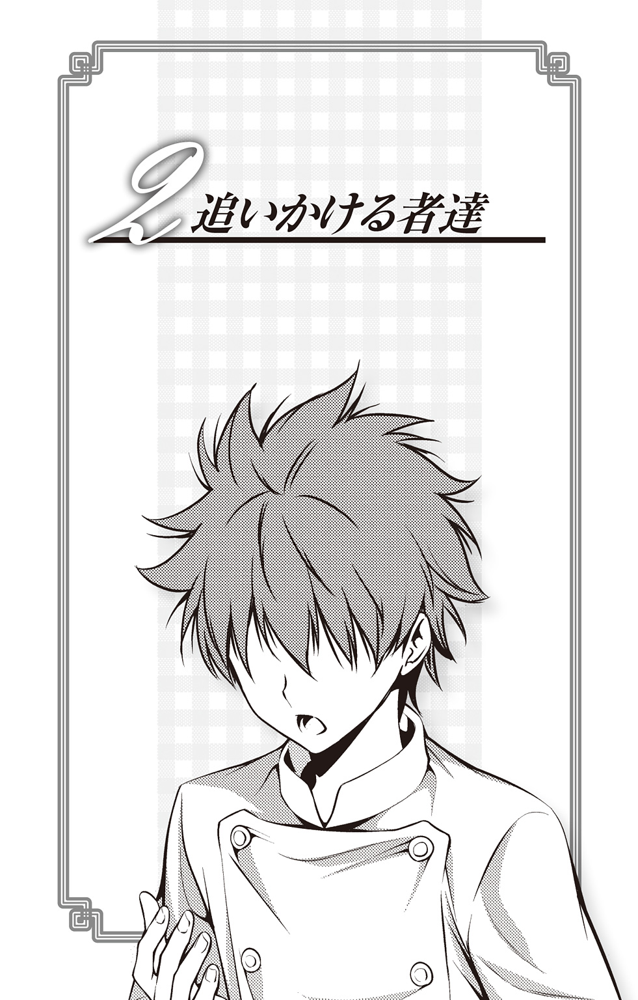
88。ハチジュウハチ。はちじゅうはち。
「末広がりの番号が二つも並んでるなんてステキじゃない」とか俺に言ったのは、どこの誰だっけ？
数字で見たら88なんて、末広がりどころか（無限大）が縦に二つ並んだだけじゃねぇか。
永遠にメビウスの輪の中から抜け出せない。しかも二つ。
百点じゃなきゃ意味ねーんだよ、何事も。
ま、でも俺には縁のない点数だ。
そもそもそんなこと、どーでもいいか。どーでも。
「どーでも......」
つぶやいた伊武崎峻が目を開くと、見慣れた自室の天井がそこにあった。少しのどが渇いている。どうやら寝言をつぶやいていたらしいと気づくと、途端に、気恥ずかしくなる。寮の壁は意外に薄い。隣の部屋の住人に聞かれてないといいが、と思いつつ身体を起こしながら息をつく。
この、胸にモヤッと魚の骨みたいにつかえてるのは何だ、と伊武崎は考える。
そうだ。88。
思い出した途端、どっと黒いインクがこぼれるかのように気が滅入る。もう一週間、ずっとこの黒い気持ちを抱えているが、なかなか消えてはくれない。
未来の遠月十傑に名乗りを上げるための美食の祭典で、伊武崎は敗北を喫した。
万感をこめて作り上げた「特製スモークカレー」は88点。しかもよりによって、同じ極星寮に住む丸井善二と同じ点数だった。
「これは決戦投票か？」と会場が盛り上がったそのとき、91点をたたき出したヤツがいた。予選から本戦への切符を、あっさりと横からかっさらわれた。
あの男――美作昴とは何者なのだろう？ 幸平創真と葉山アキラは確かに本戦に残るだろうと踏んでいた。黒木場リョウも、考えてみれば薙切アリスのおつきだ、手強いのは予想できる。だが美作に関してはノーマークだった。まるでステルスミサイルのように背後から突然現れ、撃墜された感じだ。
「ま......そういうこともある」
負けは負け。結果がすべてだ。
悔しい気持ちはもちろんある。だが、どこか心は冷めていて、冷静な自分がいる。自分の心と頭が離れているような、雲の上から心を見ているような、そんな感じ。
伊武崎は、もう一度ため息をつく。そして一応、人並みに落ちこめる自分を知り、少しだけホッとした。
「いーぶーさーきー！」
各部屋にひとつずつ備えつけられた、通信連絡用の管から吉野悠姫の声がする。
「おいしい鴨のコンフィ作ったからさ、降りといでよ」
「......俺、起きたばっかなんだけど」
「たくさんあるんだよ。残ったらもったいないしさ。早く早く」
「......ん」
伊武崎はさらにひとつため息をつくと、ベッドからゆっくりと降りた。
食堂に入ると、もう既に吉野悠姫と榊涼子がテーブルに並んださまざまな料理を食べ始めていた。テーブルは、先ほど話していた鴨のコンフィはもちろんのこと、いろいろなチーズや魚の味噌漬け、サラダなど、二人の得意料理を材料があるだけ作ったような華やかさに彩られていた。
「お、やっと来たな伊武崎。ほらほら座って」
「ここ、どうぞ」
榊が促す隣の席に、伊武崎は腰を下ろす。
「......なんだこれ？ 祭りか？」
「うん！ 残念会やろうと思って！」
『残念会』という言葉の割に、吉野の声のトーンはだいぶ明るい。
「残念会？」
「......私達、選抜落ちちゃったでしょ。お疲れ様の打ち上げはこの間やったけど、でも、残念会はやってないからやろうって、悠姫が提案したの」
「そーゆーこと。心に負った傷をさ、なめ合おうよ！」
吉野が満面の笑みで伊武崎を見る。明るい声と言っていることがまったく似つかわしくない。
「丸井は？」
「呼んだけど返事がないんだ。せっかく部屋を貸してもらおうと思ってたのに」
「意外とまだ落ちこんでるのかもしれないわね」
「ふーん」
「ささ、まあまあ一杯、一杯。ジュースだけど」
伊武崎のコップに、吉野がオレンジジュースをお酌する。
「......俺、別に残念とか思ってねーけど」
「またまたー！ 打ち上げのとき、悔しそうにしてたじゃん。なかなか部屋から出てこなかったしさ」
「そうよ。悔しい気持ちは私達も一緒だから......わかるよ」
「............」
榊にそう言われるが、正直、伊武崎にはピンとこない。
確かにあのときは悔しかった、と、思う。
だが、悔しかったというよりは「やっぱりな」という気持ちが強かった気もする。
しかしそんな伊武崎の感覚とは裏腹に、吉野は話を続ける。
「ホントに勝負の世界って厳しいよね。あんなに......あんなに頑張ったのに......猟友会でいい鴨、分けてもらったのに......ううっ......わぁぁぁんっ」
負けたときのことを思い出したのだろう、先ほどまで明るかった吉野が、泣きながら鴨のコンフィにかぶりつく。涙で顔がぐちゃぐちゃになっている。食べるか泣くかどっちかにしてほしいと伊武崎はツッコみたくなるが、ここはとりあえず遠慮し、別の言葉を吉野に投げかける。
「吉野はいいよな。......俺は、正直泣けない」
「それは、伊武崎が男の子だからでしょ？」
吉野は机の上のペーパーナプキンで涙を拭きながら伊武崎の方を見る。
「そうじゃねぇよ」
「？ どういうこと？」
「......だから、俺は、泣きたいほど悔しくないんだよ」
「えっ？」
その言葉に、吉野と榊が不思議そうに伊武崎を見つめてくる。
ああ、またやってしまった、と伊武崎は思う。昔から、自分の気持ちを人に説明するのが苦手だ。もともと話し上手ではない上に、思ったことをそのまま口にしたときほど、自分の気持ちが相手にうまく伝わらず、誤解されてしまうことが多いのだ。
どう説明すれば、相手にこの感覚をわかってもらえるのだろうか？
「選抜に負けて悔しい、と、思う。だけど、泣くほどは悔しくない。そういうことだ」
補足してみるものの、やはり吉野と榊はまだ不思議そうな顔をしている。うまく伝えられそうにないが、伊武崎がもう少し言葉を重ねてみようと思った、そのときだった。
「それは、『まだ俺は本気出してない』とか、そういうこと？」
この声。人を上から目線で見下したようなこの言い回し。
伊武崎が声の方を見ると、いつの間にか先輩である一色慧が、目が笑っていない笑顔で立っている。相変わらず神出鬼没だ。
「心外っすね、一色先輩」
突発的な怒りを抑えるため、反射的に返事が丁寧になる。伊武崎は普段、一色に敬語を使わない。
「俺は泣きたいほど悔しくないって言っただけで、本気じゃなかったとは言ってない。選抜だって、本気でメニュー考えて勝負に挑んでる。あんたにとやかく言われる筋合いはないんだけど」
「本当にそうかな？ 僕の指摘はあながち間違ってないと思うけどね？」
「............」
「僕には伊武崎君が本気を出してるように見えなかったな」
「！」
「君はさ、『負けたくない』って言ったりするくせに、実はどこかあきらめてるところあるよね。いつも斜に構えてるっていうか、がむしゃら感が足りないっていうか」
「............」
「それが料理に出たのかもしれない」
「......そんなことねぇ」
「まあ、それは別に選抜に限ったことじゃないけど」
「そんなことねぇって言ってんだろ！ 勝手に俺のこと、わかった風に決めつけるな！」
一色の言葉に、伊武崎は思わず語気を荒くする。珍しい態度に見えたのだろう、吉野と榊はこわばった表情で一色と伊武崎のやりとりを黙って見つめている。
「へぇ、君でもそんな風に、大声を出すこともあるんだね」
特に怯むこともなく、一色はいつも通りの冷静さで伊武崎を見つめる。そのバカにしたような冷たさが、常に伊武崎をイライラとさせる。
「それなら、見せてもらおうかな。君のがむしゃら感」
伊武崎と一色の間に、張りつめた糸のような緊張感が漂う。正直、まだ自分の腕で一色に勝てるとは思えないが、ここで引き下がるわけにもいかない。それに、一度この先輩とは刃を交じえてみたいと、かねがね思っていた。
売られたケンカは買ってやる。
いつもの不敵な笑みを浮かべる一色に、伊武崎は強く覚悟を決めた。
「わー、なんだよこの前髪。なげーな」
「前、見えるのこれ？」
「切ってもいい？」
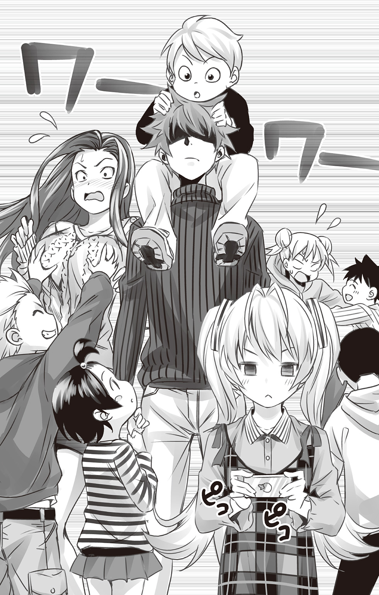
周りを取り囲む子ども達が、背中に乗ったり腕を引っ張ったりしながら、伊武崎の髪をおもちゃにして遊んでいる。
「......なんなんだ、ここは？ ......ってか、お前達降りろ」
「このお兄ちゃんこわーい」
「あっちいこ！」
伊武崎のクールな一言に、蜘蛛の子を散らすように子ども達が離れていく。その様子に伊武崎は思わず息をつく。
一色に啖呵を切った翌日。手配されたタクシーに乗りこみ、伊武崎、そしてなりゆきで吉野と榊もこの子ども達の城にやってきた。
子ども達の城――そこは、以前、幸平創真や田所恵から話に聞いていた『こども料理教室』だった。
幼稚園から小学二年生までの児童を対象として開かれているこの教室で、極星畑の野菜を料理に使ってもらっているらしい。それが縁で、一色が主催者と懇意にしているとのことだった。ちょうど選抜の予選が終わった翌日、幸平と田所がその子ども達と一緒に餃子を作った話を、伊武崎達は聞かされていた。
「まだ、主催の先生のケガが治らないらしくてね。今回も急遽、代役を立ててほしいと頼まれたんだよ」
寮では裸にクマさんエプロンや海水パンツ一丁で過ごしている一色が、ビシッとスーツを着こみ、まるで社会人のような口調でそう話している。こんな些細なことでも、おくれをとっているような気がして、伊武崎のコンプレックスを刺激する。
「任せてください先輩！ 私、子ども大好きなんだよね～！」
「たまにはこういうのも、楽しくていいですよね」
付き添いで来たはずの吉野と榊はすっかり場になじんでいる。こういう適応能力を、心底うらやましいと伊武崎は思う。
「俺は......てっきりあんたと食戟するのかと思ってたんだけどな」
半分恨みをこめたような目つきで、伊武崎は一色を見つめる。
「僕は君のがむしゃら感が見たいと言っただけで、勝負するなんて一言も言ってないよ」
「チッ......」
思わず伊武崎は舌打ちする。すると。
「高校生のくせにはしたないわね。舌打ちしちゃいけないってママに習わなかったの？」
いつの間にかそばにいたツインテールの女の子が、伊武崎を見上げている。
「はぁっ？」
「そんな態度で私を教えるなんて、十年早いのよ」
サッと肩にかかるツインテールを手で払うと、少女は調理台の方へと歩いていく。
「ハハハハ、相変わらず花音ちゃんは厳しいな。創真君と田所ちゃんも、あの子には手を焼いていたっけ」
「え、普段なら三秒で子どもを手なずける恵が！」
「なかなか手強いわね」
「それでも先生の話だと、前よりも年少の子達の面倒を見たり、輪の中に入ったりするようになったんだよ。二人の料理が、花音ちゃんを変えたのかもしれないね」
「............」
やはり本戦に残った二人はすごい、と一色は言いたいのだろうか？
そういう卑屈な見方は好きではないが、今の伊武崎には自然とそう思えてしまう。
「おにーちゃん、ソーマ先生と、めぐみ先生のおともだち？」
いつの間にか、伊武崎達の周りに子ども達が集まってきている。
「このまえのぎょーざ、おいしかったなー！」
「あれよりうまいもん、作ってよ！」
「えー、あれをこえるのは無理だろ。だってすっごくおいしかったし」
「やばかったよなー、あのギョウザ」
子ども達は口々に、幸平と田所が作った餃子を褒めたたえている。試合を始める前から、かなりのハンディキャップを背負っている。そんな気分になる。
「早く料理しよ！ 料理料理！」
「おにーさん、おねーさん、教えて！」
「よろしくお願いしまーす！」
男子も女子も、伊武崎達に笑いかけてくる。その無邪気な笑顔を見ていると、自ずと小学生の頃の自分が思い出される。人見知りで、同級生と話したりすることにあまり楽しさを感じなかった伊武崎は、こんな風に無防備に大人に寄っていくこともなかったな、と思う。
「よーし、じゃあお姉ちゃん達が、とびっきりおいしい料理を作ってあげる！ ......えっと、今日のテーマはなんだっけ？」
吉野が持ち前の明るさで子ども達に語りかけると、冷蔵庫に貼ってあった料理のテーマを読み上げる。
「......なになに『これで野菜嫌いもばっちり！ おいしいおいしい野菜スイーツ』！」
「えぇぇぇぇ」
子ども達が一斉にブーイングを始める。口々に「野菜きらーい」「ピーマン苦いもん」「キャベツがシャリシャリしてるのがイヤだ」と、野菜が嫌いな理由を次々に並べ立てていく。
「ハハハ、ごめんよ。そのテーマはお兄さんが決めたんだ。みんなに極星畑の野菜を、おいしく食べてほしいからね」
子どもの目線に合わせて少し腰をかがめると、一色は子ども達に微笑みかける。
「やっぱりサトシ兄ちゃんドＳだー」
「ひどーい。おやさいキライなのにー」
「まあまあ、そう言わずに。みんなのお母さんからのリクエストなんだよ」
「ママ、サトシ兄ちゃんのファンだからなー」
「イケメンは何やっても許されるもんなー」
文句を言われながらも、なんだかんだで一色は子ども達の心をつかんでいるようだ。以前からこの教室に通っているからかもしれないが、極星寮や遠月学園以外のコミュニティを持っていることに、伊武崎は感心すると共にほんの少し嫉妬を感じる。
思っていることをうまく人に伝えられない自分は、こんな風に人脈を築いていくことは難しいだろうな、と考えてしまう。一方で、一色が持つ明るさはないものねだりだとよくわかっているし、一色のようになりたいわけでもない。だが、だからこそ、このもやもやとした気持ちをもてあますのだ。
「じゃ、そういうことで、三人とも頑張ってね」
「はーい、お任せあれ！」
「先輩はどうするんですか？」
「僕は隣でご婦人向けの料理教室があるから......」
一色は言い終わらないうちに、伊武崎の方に視線を向ける。
「まずは、創真君と田所ちゃんに負けないよう、子ども達の心をつかむことだね。僕との勝負は......それからかな？」
いつもの目が笑っていない笑顔で一色は伊武崎を見つめる。
二人と同じ土俵に立って、初めて認めてもらえるということか――。
一色の中で自分がまったく眼中にないことを悔しく思いながら、一方でそれは当然のことだと伊武崎自身もわかっている。一色と食戟するにしても、自分には超えなくてはならないものが、たくさんある。
「そういうことなら......やってやるよ」
教室を出ていく一色の背中を見送りながら、誰に言うわけでもなく伊武崎はつぶやいた。
「さーて、それじゃあ始めるから、みんな手、洗ってきてねー」
「はーい」
吉野の呼びかけに、子ども達が一斉に準備を始める。吉野は調理台で手の洗い方を丁寧に教え始める。一方の榊は、エプロンのひもが結べない少女を手伝ってあげている。こうやって見ていると、二人ともそれなりに子どもの扱いに慣れているようだ。
伊武崎は自分の周りを見る。誰ひとりとして子どもが寄ってこない。
「こらー、伊武崎、話しかけるなオーラ出してちゃダメだよ」
ひとりでいる伊武崎に気づいた吉野が、からかうような声でたしなめる。
「......そんなオーラ、出してねぇけど」
「そういう感じが既にオーラ出まくりなの！」
「伊武崎君って......子ども苦手？」
伊武崎に寄った榊が、小さな声で尋ねてくる。
「見りゃわかるだろ」
「そっか......じゃあ、あまり無理しなくていいよ。私達で何とか興味を引いておくから」
榊は小声でそう言うと、伊武崎に柔らかく笑いかける。
「榊、気ぃ遣ってくれるのは嬉しいけど......それじゃ、なんの解決にもなんねぇよ」
「えっ？」
「あの先輩、俺達をこんなとこに連れてきて、正直、何考えてんのかわかんねぇけど......言われっぱなしなのもな。自分に何が必要なのか、考えてみるいい機会なのかもしれねぇな、とも思うし」
その言葉に、榊は驚いたように伊武崎を見つめている。どこか熱を帯びたような視線を、伊武崎は怪訝に思う。
「何？」
「えっ......あ、うん......。なんか、いいよね」
「は？」
「ううん、なんでもない」
榊は誤魔化すようにそう言うと、別の調理台の方へと歩いていく。今の話の、一体どこがよかったのだろうかと伊武崎は不思議に思う。
榊は同級生達よりも大人っぽい。寮にいても学校にいても、自分の意見を強く主張するというよりは、聞き上手な印象を受ける。単純でわかりやすく表情が変わる吉野と比べ、よく周りを見て、空気を読んで発言してるのだろうな、と思うことも少なくない。
今の「いいよね」という言葉も、伊武崎にはよくわからないが、榊が言うことなのだから、何か意味があるのだろう。
「さて」と息をつくと、伊武崎は、まず何から手をつけようかと辺りを見回す。すると、トマトペーストの瓶のふたを開けようと、格闘している女の子がいる。先ほど伊武崎の舌打ちを注意した、花音というツインテールの女の子だ。
伊武崎は黙って花音から瓶を取ると、ひょいっと開けてみせる。
「ほら、開いたぞ」
「べ、別に頼んでないけど」
「じゃ、また閉めるか」
伊武崎が意地悪くふたを閉めるふりをすると、「わ、わかったわよ」と花音は伊武崎から瓶を奪い取る。
「......ありがとう」
「ちゃんと言えるんじゃねぇか」
「私にお礼してもらえるなんて、十年に一度ぐらいのありがたいことなんだからね。感謝しなさいよ」
花音は「ありがとう」と言ったことで、何かプライドを守ろうとしているのか、ふくれっ面で理屈の通らないことを主張している。
これが世に言うツンデレというヤツだろうか。ま、どーでもいいが。
伊武崎は、調理用のざるとボウルを用意しようと棚に寄る。すると、棚にもたれて目立たないようにひとり、ゲームをする男子がいる。天忍堂ＢＳというゲーム機で『ＢＳ』の愛称で親しまれているものだ。
「......おい、お前、料理しないの？」
「............」
「聞こえてるのか？」
「............」
その男子は一瞬、チラッと伊武崎の方を見る。だが、そのまままたゲームに没頭し始めてしまった。
「あの子、さっき私も声かけたんだけど、全然しゃべってくれなくて」
こっそりと吉野が伊武崎に耳打ちする。明るい吉野が話しかけてダメなら、伊武崎が話しかけたところで、やる気にさせるのは無理だろう。
まあ、参加したくないなら仕方ない。伊武崎はそれ以上声をかけるのをやめ、野菜スイーツの下ごしらえを始める。
「レシピはうちらに任せてくれるらしいよ」
「それじゃ、私は豆とか豆腐をメインに考えてみる。最近の子って、卵とか牛乳にアレルギーを持ってる子も多いから、代用できるおやつを考えた方がいいと思うし」
「伊武崎は？」
「俺も適当に考えるわ」
野菜スイーツ――調理台の上にのった色とりどりの野菜を見ながら、伊武崎は考える。
ニンジン、ピーマン、タマネギ、カボチャ、ジャガイモ、ズッキーニ、ゴボウ、枝豆、トウモロコシ、アボカド、ナス――。
昔は、野菜がそれほど好きではなかったことを伊武崎は思い出す。それがいつの間にか食べられるようになっていたのは、料理に興味を持ち始め、食材について考えるようになったからだろう。
小学校当時の伊武崎は身長も低く、目立たない少年だった。みんなで話すより、ひとりで本を読んだり、ゲームをしたりする方が好きだった。その方が自分のペースも乱されず、気楽に過ごせるからだ。
伊武崎は昔から、何かひとつのことに没頭すると、自分の世界に入りこみ周りが見えなくなることがある。そんなときは声をかけられても気づかないことが多かった。ちょうど、先ほどの少年と同じように。
クラスで「友達」と呼べる友達もほとんどいなかった。
だが、そんな伊武崎に転機が訪れる。
小学六年生の春、調理実習で伊武崎の手さばきを見た担任教師が、地域の小学生料理コンテストに出場しないかと持ちかけてきたのだ。
「そんなに手先が器用なんだし、きっと伊武崎君なら優勝できると思うの」
もともと料理に興味があり、家でも食事づくりを手伝っていた伊武崎は、おだてられるままにコンテストに出場する。
お題は「オムライス」。燻製ベーコンを入れた特製ライスで勝負した。
結果は88点。惜しくも三点差で二位。優勝は逃した。実力にほとんど差はなかったが、ただ優勝者のオムライスには、伊武崎の嫌いな野菜が入っていた。しかもそれは、優勝者も嫌いなものだった。
「自分が嫌いな野菜をオムライスに入れて克服したいと思った」
審査前に料理ができあがったとき、優勝者はそうインタビューに答えた。小学生の模範解答のようなその心意気が決め手になった。
勝因を聞いたとき、伊武崎はその理不尽な理由に「なんだ？」と思った。そんなことなら、俺だって山ほどそいつを入れてやったのに、と。
出場を勧めた担任は「末広がりの番号が二つも並んでるなんてステキじゃない」と、慰めとも同情ともつかないような言葉で微笑んだ。
だが、伊武崎にその言葉は響かなかった。二位じゃ意味がない。自分の実力が圧倒的でなかったから勝てなかったのだと、あのときも思った。
しかしそのあとすぐ、これまで教室でひとりで過ごしていた伊武崎に、周りが声をかけてくるようになる。最初に反応したのは女子だった。「料理上手な男子」というキャラがついたことで、伊武崎にいろいろレシピを聞きに来るようになった。女子と話すようになると、「女子と話したい」という理由で、男子も集まってくるようになった。
自分の時間が乱されるのは困ることもあったが、人に頼られて嫌な気はしない。こうして伊武崎は「料理」で自分の居場所を作り出した。
遠月学園中等部に入るのも、伊武崎にとっては自然な流れだった。特に有名になりたいとか、大きな店を持ちたいとか、そういう野望があったわけではない――ただ、料理が「得意」だったからだ。
しかし、料理の道はそんなに甘くなかった。
得意だったはずのものが、相対的に得意ではなくなる恐怖。努力しても、あとからあとから化けもののように才能あふれた同級生が現れる。
「自分はできるはずだ」という自信とプライドは、木っ端みじんに砕かれてゆく――。
そんな化けもの達と渡り合っていくために自分の得意分野を作ろうと、伊武崎は燻製作りに没頭する。それも最初は、父が庭でベーコンを作るのを見て、なんとなくやってみようという程度の薄い好奇心だったのだ。
昔のことをいろいろ思い出しちまったな、と伊武崎は息をつき、作業に取りかかる。
みじん切りにした素材を生地に混ぜこみ、オーブンに火を入れる。それとは別に、同じ素材をピューレ状にし、豆乳を火にかける。
コンテストで二位だった頃から、自分は何も変わってない気がする。
悔しいと思いながら、どこか二位だったことに「仕方ない」とか「審査員が理不尽だからだ」と、理由をつけてあきらめてきた。今回の選抜で負けたことも、「周りがみんなすごいから」とか「ノーマークだったヤツがひとりいた」とか、そんな理由を自分で作り出している気がする。
伊武崎がいろいろと考えている間に、チーンと、オーブンのタイマーが高らかに鳴った。
「よーし、できたよーん！」
吉野の甲高い声が響く。その声に、子ども達が一斉に吉野の調理台へ集まっていく。伊武崎はふと、後ろを振り返る。先ほどの少年は、まだ棚にもたれてゲームをしたままだ。
伊武崎は花音の隣に立つと、少し小さめの声で聞いてみる。
「なあ、あそこにいるあいつ......誰なんだ？」
「あいつ？ ......ああ、トモヤって子のこと？」
「なんでひとりでいんの？」
「知らない」
「あいつ、この間転校してきたばっかで、友達まだいないんじゃね？」
その話を横で立ち聞きしていた男子が割りこんでくる。
「じゃあお前、声かけてやれば？」
「はぁ？ やだよ。あいつ、一緒にゲームしようぜって誘ったら、ひとりの方が気楽だからってさ。それに、あいつちょっと変わってるし」
「変わってる......？」
伊武崎が男子に質問を続けようとしたそのとき、「ほら、早くしないとなくなっちゃうよ」という吉野の声に遮られる。仕方なく伊武崎は、吉野のテーブルに寄った。
「じゃじゃーん、野菜畑のシュークリームだよ！」
目の前に並べられたのは、一口サイズのシュークリームだ。キャベツの黄緑色、ビーツのピンク色、カボチャのオレンジ色、小松菜の緑色、にんじんのダイダイ色――材料をゆでてミキサーにかけ、牛乳や卵で作ったカスタードクリームと混ぜ合わせている。目にも鮮やかで食欲をそそるスイーツだ。
「ささ、めっしあっがれ～！」
「いっただっきまーす！」
子ども達はおのおの、気に入ったシュークリームを口にし始める。
「おいしー！」
「カボチャあまーい」
「ビーツって野菜、はじめて食べた。どんな野菜なの？」
「これよこれ」
吉野は得意げに、紫色をしたビーツを少年達に見せている。ただ野菜を見せただけなのに「おお」と子ども達に感心されている。
先ほど、伊武崎の話に割りこんできた男子も、口の周りにクリームをたくさんつけながら、おいしそうに頰張っている。花音も「まあまあね」と言いながら、二個目のシュークリームに手を出している。
伊武崎はトモヤと呼ばれた男の子の方を見つめる。これだけみんなが盛り上がっているのに、ずっとゲームに没頭している。輪の中に入るつもりはないらしい。
吉野に促され、伊武崎と榊もひとつ、シュークリームを味見する。野菜の甘みとうまみを引き出し、素材の味を生かしたクリームはとてもおいしかった。
「やるわね悠姫」
「へへへ～、『野菜嫌いには野菜の原型をなくすこと』って、お母さんが言ってたんだ。私も小さいとき、それで何度か騙されて食べたことがあってさ」
得意げに吉野はポーズを決めている。だが。
「おいしそう......でも、私、牛乳アレルギーだから食べられないよ」
ショートカットの少女が、残念そうにシュークリームを見つめている。
「大丈夫よ。そんなこともあろうかと、ちゃんとアレルギーの子のためのおやつも、用意してあるんだから」
「えっ、ホント？」
榊の言葉で、少女の顔が一気に華やぐ。榊は優しく微笑むと、少女の前に一皿のスイーツを差し出す。
「豆腐と米粉のドーナッツ。召し上がれ」
「わぁ、やった！ いっただっきまーす！」
少女はドーナッツをひとつ取ると、嬉しそうに頰張り「おいしー」と満面の笑みを浮かべる。すると他の子ども達も、「私も」「ぼくも」とドーナッツを取り、食べ始める。
「おいしー！ 言われなかったら豆腐だってわかんないよ！」
「コツは、ドーナッツの穴を大きく開けること。揚げたときに生地が膨らむから、穴が小さいとふさがってしまうこともあるの」
「へぇ～」
子ども達は感心して聞いているが、料理の解説を聞くより食べる方に夢中になっている。
「......もはや料理教室じゃねぇな」
「ま、今日はいいじゃん。うちらのスイーツを食べてもらうことにしようよ」
「作っているときに野菜が入ってるところを見せちゃうと、食べる気なくすかもしれないものね」
榊の指摘は正しいのかもしれない。野菜スイーツに限っていえば、どうやって作ったかわからない方が、食べるときのわくわく感と驚きが増す気がする。子ども達も楽しいだろう。
「ねえ、伊武崎のスイーツは？」
「悪い、あと五分ぐらい待ってくれ。まだ焼き上がってねぇから」
「えー、早くお兄ちゃんのスイーツ食べたいな～！」
子ども達もだいぶ慣れてきたのか、伊武崎にも甘え始めている。
「ねぇ、おにーちゃんは野菜、何を使ったの？」
「さあな。それはできあがってからのお楽しみ」
「えーっ、それできらいな野菜だったらどうするんだよー」
「そうだよ！ オレ、ゴーヤだけはぜーったい食べないぞ」
子ども達が一斉にブーイングを浴びせる。子ども達が吉野と榊のスイーツを、文句言わずおとなしく食べたことに理不尽さを感じながらも、伊武崎は自分が作るスイーツには絶対の自信がある。
「......そこまで言われるとやりがいあるな。俺のスイーツはうまいから期待してろよ。食べないと後悔するぞ」
そうこうしているうちに、チーンとオーブンの音が高らかになった。
「俺のスイーツはこれだ」
オーブンから取り出された瞬間、調理室にバターの香りがいっぱいに広がる。薄いグリーンをしたその生地は柔らかそうなカーブを描いている。
「わぁ、すっげーおいしそう！」
「すごーい、緑色のシフォンケーキだ！」
さっきまでの発言をすべて忘れたかのように、疑心暗鬼だった子ども達が目を輝かせてケーキの周りに集まってくる。
「これ、なんのケーキなの？」
「やっぱりゴーヤ？」
「食ってみればわかる」
子ども達は、一瞬、伊武崎の言葉に戸惑ったように顔を見合わせる。
だが、その甘い魅惑的な香りを前に、我慢できなくなったのだろう、一斉にフォークをつかむと、声を揃える。
「いっただっきまーすっ！」
「んまーいっ」
「このスポンジ、ふわふわだ～」
「お兄ちゃん、このケーキに入ってる野菜、なぁに？」
「正解はこれだ」
伊武崎は持っていたピーマンを子ども達に差し出して見せる。
「え、ピーマン！」
「ぜんぜんわかんなかった！ 苦くないし！」
「オレ、ピーマン大嫌いなのに食べちゃったよ！ でも、うまい！」
嫌いだと言いながら、おいしそうにシフォンケーキを食べている男の子に、伊武崎はニヤッと笑いかける。
「安心しろ。俺も小さい頃は、ピーマン嫌いだった」
そう、あのコンテストで負けるまで――伊武崎はピーマンが嫌いだった。だが「絶対に食べられるようになってやる」と、あの日からピーマンを好きになることに決めたのだ。そうすれば、悔しい気持ちを乗り越えられるような気がしたから。
伊武崎はシフォンケーキと並行して作っておいたスイーツを冷蔵庫から取り出す。
「ピーマンゼリーと黒ごまの豆乳ムースだ。これなら、食べられるだろ？」
その言葉に、先ほどアレルギーを持っていると言ったショートカットの少女が、嬉しそうに大きく頷く。受け取ったムースを、スプーンで少しすくうと、静かに口に含む。
「ん～っ、おいしいっ！ このゼリー、全然苦くないよ。黒ごまのムースが香ばしくておいしい！」
「オレも食べたーい！」
「ねぇねぇ、どうやって作るの？」
「わかったわかった。シフォンケーキもムースも、レシピ教えてやるから、お母さんに作ってもらいな」
「はーい」
子ども達が元気よく返事したそのとき、ガチャと、大きな音が響く。
驚いて伊武崎が振り返ると、ゲームをしていたはずの少年が、いつの間にか持っていた工具でゲーム機を分解し始めたのだ。
「あー、また始まったよ」
男子のひとりが、呆れたような声で言う。
「始まったって？」
「あいつ、ああやっていろんなモノ分解するんだよ」
「昨日は調理室のタイマーだったよな」
「その前は時計分解してた」
「ちょっと変わってるよな」
「............」
不意に、伊武崎の心の中で、少年と自身の少年時代が重なる。
自分から人に話しかけるのは苦手だ。思っていることをうまく伝えられないし、すぐに誤解されてしまう。自分のペースを乱されるぐらいなら、ひとりでいる方がいい。
だが、本音は違う。
「誰にも邪魔されたくない」と孤高を気取っていても、本当にひとりぼっちではいられない。本当は、誰かに声をかけてほしい。
あの子があんな風にゲームやタイマーを分解するのは、本当は自分のことを見てほしいからだ。
かつての伊武崎がそうであったように――。
伊武崎は少年の方へと寄っていくと、目線を合わせるために少年の前にしゃがみこむ。
「分解、楽しいか？」
「............」
「......手先、器用じゃん？ 多分、料理もうまくやれるんじゃね？」
「............」
その言葉で、一瞬、トモヤは伊武崎を見る。
「......食うか？」
伊武崎はシフォンケーキの皿を少年に差し出す。少年は無言でケーキを手でつかむと、そのまま口に運んだ。
「どう？」
「......うまいと思う。......別にピーマン、嫌いじゃないし」
「じゃあ何が嫌いなんだよ」
「......トマト」
「トマト？ なんで？」
「かむと......ベチャッてなるとこ」
意外な理由でトマトが嫌いなんだな、と伊武崎は思う。味が嫌いというわけでなければ、案外作りやすいかもしれない。
「わかった。トマトのスイーツな」
伊武崎は立ち上がると、調理台の方へと戻る。
「へぇ、あいつ、トマト嫌いなんだ」
ピーマンのシフォンケーキを食べていたチェックのシャツの男子が、少し興味を持って少年を見ている。しかし少年の方は相変わらず、ゲーム機をひとりで分解している。
伊武崎が少年に声をかけたことで、教室の子ども達は少年を意識しているようだが、話しかけるにはまだ勇気がいるらしい。多分、ちょっとしたきっかけなのだろう。だが今は、その「ちょっと」が足りない。
伊武崎はトマトに十字型の切りこみを入れ、沸騰したお湯にくぐらせる。そのあと、すぐさま氷水につけ、皮を湯むきしていく。
「伊武崎君、手伝おっか」
さりげなく榊が伊武崎の横に立つ。作業の邪魔にならないように、気を遣って左側から回ってきたのだ。
「じゃ、皮を頼む」
「オッケー」
伊武崎と並び、榊が作業を手伝ってくれる。
吉野の方を見ると、子ども達にタマネギクッキーの作り方を教えている。吉野も少年を気にしているらしく、なんとか誘おうと隙をうかがっているが、難しいらしい。
「あの子、ちょっと伊武崎君に似てるよね」
「......えっ？」
榊の言葉に、思わず伊武崎はドキリとする。いつの間にか少年に自分を重ねていたことを見破られていたのか。やっぱり榊は人をよく見ている。
「言い方悪いけど、素直じゃないっていうか」
「......どういう意味だよ」
「自分の気持ちを表さないし、うまく表せない」
「............」
「本当はクールに振る舞ってるのだって、自分の中の情熱を見られるのが恥ずかしいからでしょ？」
「別に......振る舞ってるわけじゃねぇんだけど」
伊武崎が反論すると、榊は少しクスッと笑った。なぜここで笑われるのか、伊武崎にはよくわからない。
「なんかおかしいか？」
「ううん......思った通りの反応だなって」
「............」
「伊武崎君、自分では冷めてるって思ってるかもしれないけど......本当は熱いところを持ってるんじゃない？ ただ、自分でもそれをどうしていいかわからなくて、だからつい、冷めてる感じを装っちゃって......自分の心の中でも『どうせ冷めてることに慣れてる』って思ってるんじゃないかな？」
思いがけない榊の言葉に、伊武崎はどう答えていいかわからなかった。
『どうせ冷めてることに慣れてる』。
それは、自分の中の熱いモノと、うまく向き合ってこなかったということだろうか？
「......そんな風に意識したこと、ねぇけどな」
ぽつりと伊武崎がつぶやくと、榊が途端に申し訳なさそうな顔をする。
「ご、ごめん。別に知った風なことを言うつもりはなかったの。ただ、見てるとそんな気がして。少しでも、伊武崎君が元気になればって思って......」
「えっ？」
「......あっ、み、見てるって、別に毎日見てるわけじゃないのよ！ 寮に一緒にいたり、学校の授業受けてればわかるってことで、深い意味もないから！」
榊がなぜか真っ赤になって言い訳しているのを、伊武崎は不思議そうに見つめている。そんなことで期待して自意識過剰になるほどおめでたくないと、伊武崎は自分を評価している。
だが、榊の言葉は伊武崎の心にある乾いていた湖に、ほんの一滴、水を垂らしてくれたように思う。それは同じ道を志す者の言葉として、深くしみこんだ。
「あーっ！」
突如、大きな声が響く。一同が声に見ると、花音がゲーム機を前に困った顔をしている。慌てて吉野が花音に寄っていく。
「どうしたの？」
「ＢＳの写真機能が壊れたの。せっかくスイーツの写真、撮ろうと思ったのに。ありえない！」
花音はガシャッとゲーム機を忌々しげに床に投げつける。
「あーっ、ダメだよモノ投げちゃ！」
吉野が落ちたゲーム機に駆け寄り、拾おうとするその前に――あの少年が、そのゲーム機を拾い上げる。
「あっ......」
「............」
少年は拾い上げたゲーム機を、黙って分解し始める。
「ちょっと！ 何するのよ！」
花音が怒り、ゲーム機を取り上げようと少年に近づいていく。伊武崎は足早に花音の前に立つ。
「ちょっと待て」
「だってＢＳ、壊されちゃう！」
「違う。見てみろ、あれ」
「えっ？」
伊武崎が促すと、花音は不思議そうに少年を見る。
ゲーム機を分解していたと思ったら、少年はあっという間に外カバーのふたを元に戻している。
不思議そうな顔で見ていた花音に「直ったよ」と、少年はゲーム機を返した。
疑いのまなざしで伊武崎と少年を交互に見つめると、花音はゲーム機の電源を入れ、写真機能のボタンを押す。
「......直ってる」
狐につままれたような表情で、不思議そうに花音は少年を見る。
「すっげー！」
「ゲーム直せるとか神じゃん！」
「俺にも教えて」
「俺にも！」
子ども達が「ちょっと」のきっかけで、少年の周りに集まり始める。その様子に、伊武崎は少し微笑む。
本当は他の子ども達も、あの少年のことが気になっていたのではないだろうか？
話しかけたいと思っていたのではないだろうか？
そしてその問いかけは、自分自身にも向けられる。もしかしたら、小学校の頃のクラスメイト達も、もっと早く伊武崎と話したいと思ってくれていたのかもしれない、と。
ほんの少しだけ、心を開く勇気があれば。
ほんの少しだけ、自分を知ってもらうことをためらわなければ。
そのときまた、オーブンの高らかな音が鳴り響いた。
完成したスイーツを、伊武崎は子ども達の前で披露する。
「......できた。トマトのショートケーキだ」
真っ赤なミニトマトがのったショートケーキのホールに、子ども達が歓声を上げる。卵をしっかり泡立てたふわふわのジェノワーズ生地。外側を覆うクリームは、生クリームにサワークリームと粉砂糖を混ぜ、少し酸味をきかせる。そうすることにより、逆にトマトの甘みが引き立つよう、絶妙なバランスで作られた一品である。
「おいしそー」
「でもミニトマト丸のままのってるぞ」
「まあまあ、騙されたと思って食べてみな」
伊武崎は切ったケーキを、子ども達の前へと並べていく。
完全に打ち解けてはいないものの、なんとか輪の中に入ることができたあの少年にもケーキを差し出す。
「リクエストのトマトケーキ」
「......だから、かじったときの食感がキライだって言ったのに」
「てっぺんのミニトマトは俺が食う。他のところを食べろ。一口でもいい」
「............」
伊武崎の言葉に、少年は渋々頷くと、スプーンを取る。ケーキの端を小さく切ると、そのまま口へ運ぶ。
「......あっ！」
少年から思わず驚きの声が出る。
「どうだ？」
「......うまい。ケーキの中にもトマトが入ってるけど......グチャッてなってない。なんで？」
「簡単だ。タネを取ったからな」
「えっ......それだけ？ 冗談でしょ？」
「ホントだ」
伊武崎の言葉に少年は驚いたような顔をしている。物事は、案外シンプルにできているのだ。そんな風に少年に伝えようとした、そのとき。
「うまいよなー、これ。オレもトマト嫌いだからびっくりした！」
少年の後ろから、チェックのシャツの男子が話に入ってくる。
「お前、豆腐ドーナッツ食べてないだろ？ あれもすげぇうまいよ」
「ホント？」
少年はチェックのシャツの男子に誘われるままに、榊が作った豆腐ドーナッツの方へと駆けていく。二人のその姿に伊武崎は、なぜか自分まで嬉しくなっているのを感じる。
「よかったね、あの子」
いつの間にか吉野と榊が、伊武崎の隣に立っている。
「伊武崎のお陰だよね」
「うん。伊武崎君がちゃんと、あの子が何しようと思ってるかわかったから、みんなと打ち解けることができたんだよね」
「......別に、たいしたことじゃねぇよ」
「またそうやってすぐクールぶる。だから『がむしゃら感がない』とか言われるんだよ」
「うるせぇな吉野。変態先輩のマネするんじゃねぇ」
「僕はよく脱ぐけど、変態じゃないよ？」
ギクッとして声に振り返ると、また神出鬼没の一色が立っている。
「いろいろ、うまくいったみたいだね」
「先輩、今回は伊武崎が大活躍だったんだよ！ たまには褒めてあげてよ！」
「おい吉野！ 余計なこと言うな......！」
「へー、伊武崎君、偉かったねー」
棒読みで褒め言葉を口にする一色に、伊武崎は思わずムッとする。
「......いや、茶化してはいけないな。伊武崎君、ありがとう。いろいろ助かったよ」
目が笑っていないいつもの笑顔ではなく、一色はまっすぐ伊武崎の目を見つめている。
「なんか......真面目に言われると気味悪いんだけど」
「それは心外だな」
伊武崎の言葉に、いつの間にか一色はいつもの笑顔に戻っていた。
子ども達に見送られ、伊武崎達は順番にタクシーへと乗りこむ。最後に乗りこむ伊武崎が視線を感じて振り返ると、先ほどの少年と目が合った。
少年の口元が少し開く。小さく「ありがとう」と言っているように見える。
伊武崎は軽く頷くと、そのままタクシーへと乗りこんだ。
車はゆっくりと走り出す。
伊武崎が見る窓の外には、夕映えに鱗雲が広がっている。
今日一日で、伊武崎の何かが大きく変わったわけではない。もし変わったことがあるとしたら、子ども達に料理を作り、その子どもに、もう少し素直になることを教えてもらったぐらいだ。
何か答えが見つかったわけでも、自分の腕が上がったわけでもない。端から見たら、きっと昨日と何も変わっていないのだろう。
だが、伊武崎の心は不思議と満たされていた。
今までは、何か大きなものを追いかけすぎていたのかもしれない。
手の届かない高いものばかり見つめては、見上げすぎて疲れた頭を、がっくりと垂れるしかなかったのかもしれない。
料理がうまくなりたい。強敵を倒したい。圧倒的な力が欲しい。
それはどこか、現実感に乏しい陽炎のような願望だった。
一色の言う『がむしゃら感』は、もっと今『目の前にあることを見ろ』という意味なのかもしれないと、伊武崎は思う。
未来の積み重ねは、今日の積み重ねでしかない。
だがやってやる。いつか、幸平も、田所も、一色も――超えてみせる。
コンテストで88点を取ったあの日から、伊武崎の戦いは始まっていたのだから。
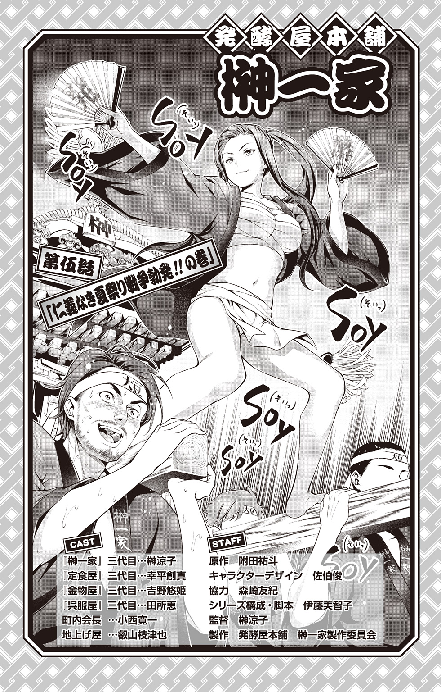
★前回までのあらすじ
「発酵屋本舗 榊一家」三代目、榊涼子は、同級生の金物屋・吉野悠姫から、今年の夏祭りの神輿がなくなってしまうことを聞かされる。江戸っ子の血が騒ぎだし、いてもたってもいられなくなってしまった涼子は、悠姫と共に、町内会長の元へと乗りこんだのであった。
「どういうことなの、町内会長さん！」
「そうだよ！ 私達、お神輿担ぐの楽しみにしてたのに！」
「まあまあ君達、落ち着いて」
ヘタレの代表のような町内会長・小西が、迫ってくる涼子と悠姫にたじろいでいる。
「ほら、神輿って結構お金かかるでしょ？ 今年は夏祭りの予算があまりないから、見送ろうってことになったんだよ」
「予算がないって！ 他のところ削っても、御輿は削っちゃ駄目じゃないですか」
「そうだよ！ お祭りの顔なのに......何にそんなにお金がかかっているの？」
不思議そうな表情で悠姫が小西に尋ねる。
「そ、それは......」
ばつの悪そうな顔で小西が口ごもる。
「それは、うちのみかじめ料を払ってもらうためさ」
ドスの利いた声で涼子達の前に現れたのは、地上げ屋・叡山枝津也だった。
「君達、この俺に逆らうと、どうなるかわかっているのか？」
「............」
叡山に睨まれ、涼子は睨み返す。悠姫は震え上がっている。
一触即発の叡山と涼子に、ただうろたえる小西。
果たして、下町のお祭りは守れるのか――。
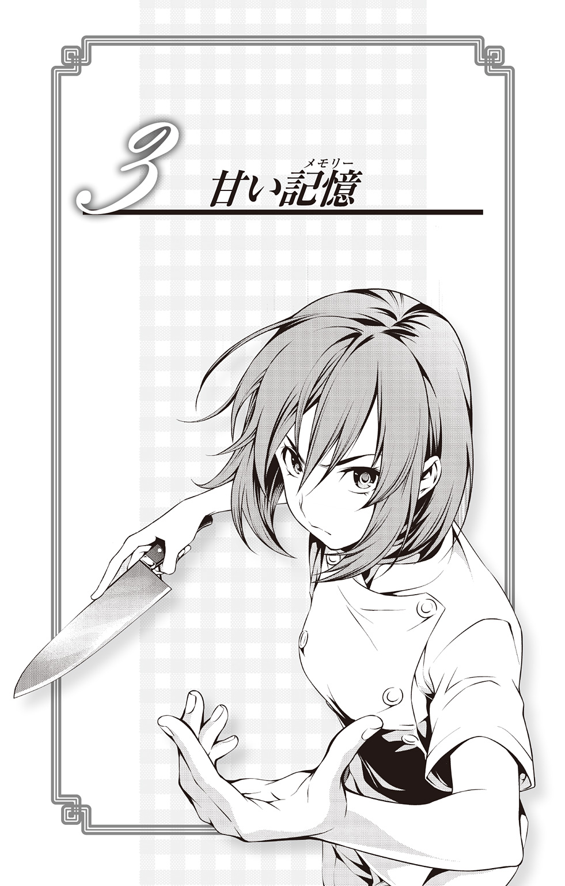
地を轟かせるような音を立て、滝の上から落ちてくる激しい水流が、新戸緋沙子の肩を何度も打ちつける。修行用に着ている白装束が張りつき、緋沙子の身体の線をくっきりと際だたせている。もう四月も半ばだとはいえ、滝の水はまだ冷たい。
しかしそれに構うこともなく、緋沙子はもう二時間以上も滝行を続けていた。
緋沙子は、遠縁が住職をする寺に三日前から修行に来ている。
都心から離れた山の中にあるその寺は、自然にとけこむようにひっそりと存在し、外界からの情報が遮断されているかのような錯覚に陥る。心を鎮めるには絶好の場所だ。
だが、緋沙子の気持ちは落ち着かない。この修行は邪念を捨て、心を空白にするためのものであるが、そんなときでさえも緋沙子は、えりなのことを思い出してしまう。
――えりな様はどうしていらっしゃるかしら？
もちろん、おひとりでもきちんとできる方だけど、無理をすることも多いし。またトランプ遊びやＵＮＯで、夜更かしなどしていなければいいんだけど。そういえば最近はジェンガにも凝っていらっしゃるんだった。ああ、やっぱり気がかりだわ。
緋沙子が、えりなの秘書をするようになって七年。こんな風に、えりなの元を離れたことはなかった。一体どうして、こんなことになってしまったのだろうか。あのミスさえ犯していなければ......。
考えれば考えるほど、思えば思うほど、えりなへの気持ちが募る。
初めてえりなに会った日のことは、今でも忘れられない。
激しく落ちる滝の音を聞きながら、薙切家に呼ばれたあの日を、緋沙子はぼんやりと思い出していた。
遠月茶寮料理學園高等部に通う新戸緋沙子が、その総帥の孫娘である薙切えりなの秘書をするようになったのは、小学三年生になる春のことだった。
曾祖父の代から薙切家に仕えている新戸家の人間は、その慣習などを学ぶために幼いころから薙切家に出入りすることが求められる。緋沙子にとって、それはたとえば、さなぎから蝶になるような、時期がくれば当たり前に行われることであり、特に反発や期待を感じるものでもなかった。しかし――。
強い風が吹く、よく晴れた春の日曜日だった。
漢方医をする父と共に、初めて薙切家を訪れた緋沙子は、まずその屋敷の広さに驚いていた。
エントランスの中央には赤い絨毯が敷きつめられた階段、まるで中世のフランスを思わせるような広くきらびやかな迎賓室、各国来賓を迎え入れて食事を楽しむ食堂、廊下や部屋を彩る絵画や調度品も、どれも美しいオーラを放っている。
和風と中国風が混ざったような新戸家に比べ、この屋敷には洗練された美しさがあるような気がして、緋沙子の心はわくわくと躍っている。
「こんなステキなところに通えるなんて......」
緋沙子は屋敷を彩るひとつひとつを感嘆して眺める。見るものすべてが、緋沙子には美しく映えている。
美しいものは、そこに存在するだけで価値がある。
清少納言も紫式部も、みんな美しいものに目がない。
それはとても正しい感覚だと、緋沙子は思う。醜いものはこの世にいらない。
美しいもの、楽しいもの、優美なものに囲まれて生きることこそが大切なのだと、小学生ながら既に確固たる美意識を持つ緋沙子は思っている。
そういう意味で薬膳料理はすばらしい。身体の内にある美を引き出し、探求する料理だ。
殺生を嫌い、仏の道に生きることを是とするために生まれた精進料理もすばらしいが、薬膳料理は「健康で美しく」あることに主眼を置いている。そんな薬膳の精神は、自分の趣味嗜好にとても合っている、と緋沙子は思う。今はまだ勉強を始めたばかりだが、小学校を卒業したら遠月学園中等部に合格し、薬膳料理のエキスパートになりたい。そしてそれは、同い年の、まだ見ぬ薙切家の令嬢に仕えることにもなるのだ。
父が薙切の使用人と話している間、緋沙子はよく手入れされた庭に降りた。
美しい八重桜が咲いている。緋沙子はその弾けたように咲く花を見上げる。まるで咲くときに「ぽん、ぽん」という軽やかな音が聞こえてくるような気がしてくる。普段、桜を見てもそんなことは思いつきもしないが、きっと、この庭を愛でる屋敷の人達の優美さが、緋沙子にそんな音を思い浮かばせるのだろうと思う。
それにしても美しい八重桜だ。見上げると同時に、思わず口が開いてしまう。途端、はしたないと思い直して、慌てて緋沙子は口をつぐむ。そのときだった。
「そんな風に口を開けていたら、八重桜の花びらを食べてしまうわよ」
リン、と鈴を転がすような、透きとおった声だと思った。
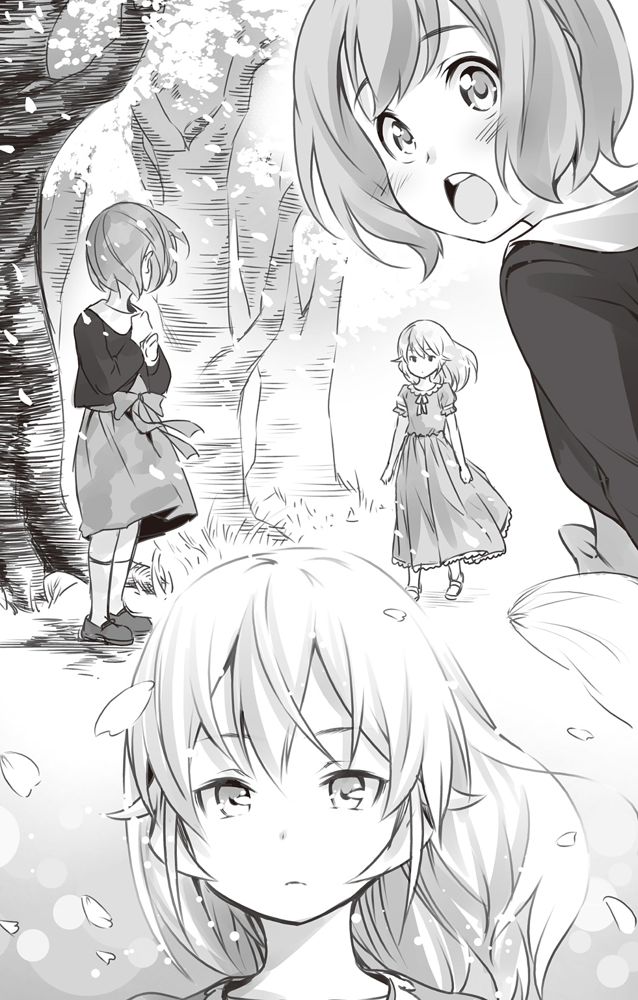
緋沙子はハッとして振り返る。
長く美しい金色の髪に、宝石のように輝く大きな瞳。つやのある紅い唇からこぼれる吐息が、すべて桃色に変わってしまうかのような錯覚さえ覚える――。
舞い散る八重桜の花びらにも劣らない、薄紅色のワンピースを着た美しい少女がこちらを見つめていた。
「............」
こんなに美しい人が存在するのだろうか、と緋沙子は息を吞む。
言葉は何の役にも立たない。
ただそこに、佇んでいるだけで、空気を変えてしまうなんて。
それは圧倒的な光。目を細めないと、何も見えなくなるぐらいのまぶしい光。
手を伸ばせば届く距離にあるのに、だが、絶対に届かない。そんな気がする。
何か言葉を発さなければと焦る気持ちが、かえって緋沙子の中の言葉を殺してしまう。
「すみません、えりなお嬢様。緋沙子、失礼なことはしてないだろうな？」
二人の元に、慌てて緋沙子の父が駆けてくる。
「あ、うん......」
遠慮がちに頷いた緋沙子を、えりなはまじまじと見つめている。
「あなたが、新戸の――」
「はい、娘の緋沙子と申します。えりな様、これからどうぞ、よろしくお願いします」
父は緋沙子の頭に手を置くと一緒にお辞儀をさせた。
――じゃあ、この方が、私がお仕えする、薙切えりな様。
顔を上げた緋沙子はもう一度、上目遣いでえりなを見つめる。
だが何度見つめても、いや、見つめ直すたびに、その匂い立つような美しさが際だつ。こんな美しい人のそばにいられるなんて、と、緋沙子の心はまた弾んでしまう。それはある種、淡い恋のときめきにも似た気持ちかもしれない。
「緋沙子、と呼んでいいかしら？」
「もちろん、です、えりな様......」
緊張のあまり、えりなからの問いかけに、緋沙子は声がうわずってしまう。えりなの発した「ひさこ」という音のひとつひとつが、完成された音楽のようにさえ緋沙子には思えてくる。
「私に仕えるというのなら、条件があります」
「条件？」
「今ここで何か一品、作ってみなさい」
「えっ？」
思いがけないえりなの提案に、緋沙子は面食らう。
「それで私を納得させることができれば......あなたを秘書として認めます」
そう言い放つえりなの顔は、先ほどのはかなさとは打って変わり、冷たい美しさを見せる。緋沙子は氷菓子のようなその美しさを、やはりうっとりと見つめてしまう。
「じゃ、あちらで待っているから。がんばって」
優雅に手を振ると、えりなは庭から立ち去っていく。
「おい、大丈夫か、緋沙子？」
えりなの姿を夢見心地で見送る緋沙子とは対照的に、父はおろおろと落ち着かない。
「大丈夫って、何のこと、お父様？」
「神の舌――えりな様の舌は、そう呼ばれている」
父の言葉によれば、薙切えりなは幼少期から、世界中の有名店に味見役を依頼されてきたという。その繊細な味覚を壊さないように、普段食べる野菜や果物もかなり制限されているらしい。
「お父様......そういうことは、もっと早く教えてくれるべきじゃないの？」
「まさか試験があるなんて思わなかったんだよ。頼んだぞ、緋沙子。新戸の面目のために！」
拝むように、父は緋沙子の前で両手を合わせている。
確かに、ここで緋沙子がえりなに認められなければ、今後、新戸家が薙切家に出入りすることさえも難しくなる。それは、小学生の緋沙子にもわかることだった。
――まだ薬膳料理は作れないけど......やってみるしかない。
緋沙子は大きく息を吸いこみ、吐き出す。こういう土壇場の局面には慣れているつもりだ。
将来、薙切家の秘書になることが決まっていたせいか、父や母、親戚から無茶を言われることは多々あった。漢方医の父のスケジュールを管理したり、学会に連れていかれ、父の代わりに発表させられることもあった。遠縁にあたる寺で、お坊さんと問答をさせられたこともある。そのせいか、突然のことがあってもなんとか切り抜けられるスキルは身についている。
材料がすべて揃っている屋敷の広い厨房で、緋沙子は野菜を切る。思った通りにうまく切ることができない。手先は器用な方だが、まだ経験が少なかった。
「神の舌」を納得させるのは難しいかもしれない。それでもやるしかない。
それは新戸の家のため、というより、あの美しい人と一秒でも長く一緒にいたいという想いだった。
「お待たせしました」
できあがった料理を緋沙子はおそるおそる、えりなの前に置く。緋沙子が、えりなのために作ったのは、鯛とハマグリを蒸したものに八重桜の塩漬けをあしらった、春らしいメニューだった。自分なりに「美しい」と思えるものを追求してのことだった。
「鯛とハマグリと、これはウドかしら......彩りはキレイね」
「ありがとうございます」
「いただきます」
えりなは静かに両手を合わせると箸を手にする。美しい人は、やはり所作も美しいのだなと、緋沙子は改めて見ほれてしまう。
一口、鯛の身を箸でほぐして口に運ぶと、えりなは箸を置く。
まずかったのかもしれない――緋沙子の頭によぎる。厨房で借りた、少し大きい白衣の袖を思わず手のひらで握りこむ。えりな様と過ごす夢のような時間は、もう終わってしまうのか――？
「どうしてこの料理を選んだの？」
「どうしてって......」
突然のえりなの質問に緋沙子は戸惑う。もちろん理由は、ある。だがそれを伝えることは、「神の舌」を持つえりなの「味」とは関係のないことかもしれないと思う。逆に、関係のないことだから伝えるべきなのだろうか？
――いや、伝えよう。もしかしたらもう、えりな様に仕えることはできなくなるかもしれない。それなら、思ったことは全部言おう。
「この料理をえらんだのは、もしかしたらえりな様が陽熱タイプかもしれないと思ったからです」
「ようねつ？」
聞き慣れない言葉だったのだろう、えりなが首をかしげている。
「薬膳料理を出すときに見る体質の分け方です。おそらくえりな様は、味見などでいろいろな食べ物を食べる機会が多いし、身体に余分な熱がたまりやすいのではないかと思います。身体が熱くなったり、夜、眠れなくなったりすることはありませんか？」
緋沙子の指摘にえりなは静かに頷く。
「私はまだ、ちゃんと薬膳を作ることができないので、厨房にある材料で陽熱を抑えるものを作ろうと思いました。ハマグリは身体に潤いをあたえて、熱を冷まします。むくみやのぼせにも効果があります。鯛は、体力を回復したり、お肌をキレイにします。それから......」
「それから？」
「八重桜を使ったのは......もちろん、睡眠不足の解消や気持ちを安定させる効能があるからですが、えりな様との出会いを意識したものです。この美しさを、料理にこめる方法はないだろうかと思いまして」
「そう......」
えりなは少し息をつくと、緋沙子をまっすぐに見つめる。
「正直言って、この程度の腕ではまだ、私を満足させることはできません」
「............」
やっぱり、と緋沙子はうつむく。これでもう、えりなと一緒にいることはできない。桜の花が散るかのような、はかない夢だ。
「ですが」
暗い気持ちの緋沙子を少し見ながら、えりなは話を続ける。
「春の食材を使い、美しさを料理の中に閉じこめる――。あなたの美しさを探究する気持ちには共感できます。私の秘書としては当然ですが、これから料理の世界に生きるときも、とても必要な感覚でしょう」
「！」
思いがけないえりなの言葉に、緋沙子の胸に喜びがこみ上げてくる。するとえりなは、その気持ちを知ってか知らずか、また少し冷たい、氷菓子のような笑みを緋沙子に向ける。
「あなたは――私を今よりもっと美しくさせてくれて？」
静かに、右手が差し出される。
「......もちろんです」
緋沙子は、雪のように白いその手に、静かに触れた――。
その日の夜、緋沙子は日記を書いた。
――今日、わたしはすごい人に会った。薙切えりな様。桜の花みたいにキレイで、かわいくて、きらきらしてる。えりな様といっしょに、これからたくさんお話したり、遊んだり、お料理できたらいいな。わたし、がんばる。
ノートにマスキングテープを貼り、落ちていた八重桜を押し花にする。この日は、一生忘れられないだろう、と緋沙子は予感する。
九歳になる年の、うららかな春の出来事だった。
それから緋沙子は、えりなのために薬膳についてさらに猛勉強を重ね、遠月学園中等部に合格。秘書として高校生になった現在でもえりなに付き添っている。
だが緋沙子は今、えりなのそばではなく滝の中にいる。「はぁ」と、ふと漏らすもの憂げな息は、修行の厳しさから生まれるものではない。
「あ、いたいた～、やっほー秘書子！」
緋沙子が声に見ると、川岸から手を振る人物がいた。主人である薙切えりなの従姉妹、薙切アリスだ。
「......よくここがわかりましたね、アリスお嬢」
滝から上がり素早く身体を拭きつつ、緋沙子は突然現れたアリスと、その付き人である黒木場リョウに困惑を隠せない。この寺の場所は、えりなにも教えていないはずなのに。
「そんなこと、あなたのお父さんに聞けばすぐ教えてくれるわよ。『えりなに怒られて落ちこんでる秘書子が行きそうなところは、どーこだ？』ってね」
まるで子どものクイズのような言い方をするアリスにむっとしつつ、薙切家の使用人という立場上仕方がないとはいえ、すぐに娘のプライバシーを教えてしまう父にも、緋沙子は軽くイラッとする。
「ふふ、修行だなんて。秘書子ってば無駄なことしちゃって」
「......あの、何度も申し上げますけど、私は秘書子ではありません。緋沙子です」
緋沙子は常々、薙切の家には敬意を払っているつもりだが、正直、このアリスは苦手だな、と思う。えりなとは『犬猿の仲』ということもある（とはいえ、実際はそこまで二人がいがみ合ってはいないことも知っている）が、アリスの行動は予測不能で、突然、何かを思いついては、いろんな場所をひっかき回していくのだ。
「ねぇ、どうしてえりなに怒られたの？ どうして？ どうして？」
「............」
アリス特有の無邪気な好奇心で、緋沙子にぐいぐい迫ってくる。緋沙子は思わず、隣でぼんやりしているリョウを睨む。
――ご主人様の暴走を、おつきであるあんたが止めるべきでしょ！
だが、面と向かって言ってしまうとアリスの行動を否定してしまうことになるので、口に出すことはできない。
――もーうっ、察してくれればいいのに！
アリスもリョウも、海外暮らしが長かったせいか、「察する」という文化に重きを置いていないらしい。わかっていることではあるが、緋沙子にとっては、その立ち入られる感じが、自分の美意識に反するのだ。
だが、アリスには緋沙子の美意識などどうでもいいらしい。
「ねえ、秘書子ってば～」
さらに追及しようとするアリスに、緋沙子は少しうんざりしてくる。
「えりな様と私のことですから」
「もうっ、なによ！ 心配して来てあげたのに！ 秘書子の意地悪」
自分の思い通りに緋沙子が理由を話さないことに、アリスは少し頰を膨らませる。そうなのだ。確かにアリスはこういう行動をとるが、「心配している」という言葉にウソがあるわけではない。アリスはつぶやくように言葉を続ける。
「せっかくえりなのことで教えてあげようと思ったのに」
「えっ？」
こわばった緋沙子の顔を見てからかっているのか、アリスがいたずらっぽく笑う。
「うふふ、秘書子は本当にえりなが好きなのね♪」
「......あの、えりな様がどうされたんですか？」
「だ、か、ら～、秘書子がえりなを怒らせた理由を教えてくれたら、こちらも教えてあげてもよくってよ」
「どうされたんですか！」
気がつくと緋沙子は、アリスの肩を両手でつかんでいたが、すぐにリョウによって引き離される。リョウと緋沙子の間に、バチッと激しい火花が散る。
「下がれよ」
「なによ、犬の分際で。......アリス様、いくらアリス様でも、えりな様に何かあったら容赦しませんよ」
「別に私は何もしてないわよ。えりなが勝手に風邪ひいただけで」
「風邪？ えりな様が？」
「そう。一昨日辺りから熱出しちゃって下がらないんですって」
「！」
緋沙子はアリス達をそのままに、慌てて駆け出す。背後から追いかけるようにアリスの声がしているが、もう緋沙子の耳には届いていなかった。
――えりな様が風邪だなんて。お仕事の無理がたたってしまったのかしら？ 部屋の温度が適切じゃなかったのかしら？ 何か、身体によくないものを召し上がったのかもしれない。
ああ、あれだけ使用人がついていながら、どうしてえりな様の風邪を防げないのか。どいつもこいつも。
思わず緋沙子は心の中で毒づく。
まとめた荷物を肩に寺を出ると、慌てて手配したタクシーに乗りこむ。
目指すはえりなが待つ、薙切の屋敷。
本来なら、謹慎が解かれる前に帰ることは、主人の命に反することであるが、今はそんなことを気にしていられない。
――もしこのまま、えりな様にもしものことがあったら。
そう考えるだけで、緋沙子の胸はつぶれそうになる。
――私は決めたのだ。あの日から、どんなことがあってもえりな様を守ると。それは新戸家の人間だからではない。私自身がそうしよう、と......。
初めて会った日から緋沙子は、ますますえりなと濃い時間を過ごすようになった。
仕えれば仕えるほど、緋沙子はえりなをすごい人だと尊敬するようになる。
「えりなに味見をしてほしい」と依頼する人々は、洋の東西を問わずひっきりなしにやってくる。すべての人がその「神の舌」に敬意を表し、絶対的な信頼を抱いている。緋沙子も普通の小学生よりは漢方学や精進料理、薬膳料理に触れて暮らしてはきたが、そのような次元とは違う、料理人との真剣勝負の場に、えりなは早くから身を置いている。
えりなの目的は、料理の世界で常に頂点に君臨すること――それ以外のことは、切り捨てているようだと、緋沙子には感じられた。
そんな「神の舌」を持つえりなが料理を味見できるのは、たくさんの依頼の中からほんの一握りのものだけだ。一度味見すると、少し間をおかなければその繊細な舌に影響があるということもあったが、えりなに美意識の低い人間の料理を食べさせるわけにはいかないという、薙切家の方針もある。
それらのことを考慮し、緋沙子はえりなのスケジュールを管理する。ときには、海外の料理人やレストラン、仲介業者ともメールや電話でやりとりをしなければならず、緋沙子は必死で言葉を覚えた。
実際、緋沙子はえりなの秘書として有能だった。幼いながら大人と渡り合うことができたのは、父の教育と、まだ、あまり社会への恐怖心が芽生えていなかったところにある。金銭的な部分は薙切家がフォローしていた。
緋沙子が中学生になる頃には、「薙切えりなのスケジュールは新戸緋沙子に聞け」という業界の暗黙ルールができてしまったほどだ。
多忙を極める中学生二人の、唯一の楽しみは「美しいもの」だった。二人は、暇な時間を見つけては、お互いが「美しい」と思うものを持ち寄るようになっていた。
ガーベラ、ローズ、オンシジウム、紫陽花、ひまわり、ライラック、並べられた色とりどりの花束。マカロン、ショコラ、ボンボン、かのこ、練りきり、飴細工、目にも美しいお菓子の数々が、えりなの部屋いっぱいに持ちこまれる。二人はその中でひとときだけ、大人のいない空間を楽しむことができるのだ。
「......とはいえ、飽きるわね」
いつものように、えりなの部屋でお茶会をしていた緋沙子に、えりなはぽつりとつぶやいた。
「そ、そんな......飽きてしまわれたのですか！ 私、どうすれば......」
その言葉に、緋沙子は取り乱し、しょんぼりとする。
「違うわ。緋沙子に飽きたってことではないの。こう毎日お花やお菓子ばかりでも飽きてしまうわね、という意味よ」
「そうですね、確かに......」
どんなに美しいものも、やはり毎日では慣れてしまい、やがて飽きてしまう。
えりなは窓際に立つと、眼下に広がる庭を見つめている。
庭の奥には高い塀がある。それはえりなや、薙切家を守るものであると同時に、外へのつながりを絶つものにも見える。
「外に......出てみたいものね......」
誰に言うともなく、えりなはつぶやく。
えりなは、学校へ登校する以外、外に行く機会が少なかった。味見を求める料理人達が屋敷に訪れるのもさることながら、「誘拐されるかもしれない」「庶民の文化に俗されてほしくない」と、えりなが外に出ることに周りの大人達が賛成しなかった。
えりなを見ていると、緋沙子はときどき、切ない気持ちになる。
豪華な屋敷、美しい庭、約束された将来。
外からは、欲しいものは何でも手に入るかのように見えるが、実際は薙切の家が「良」と判断しなければ、えりなひとりでは何も得ることができない。そのことは、えりな本人が一番よくわかっている。それが一層、緋沙子には切ない。
かごの中の美しい鳥。
いつか誰かが、この鳥を外に逃がしてあげる日が来るのだろうか？
――それは私ではないかもしれない。でも。
できれば、それまで――いえ、それからも、ずっと一緒にえりな様をお守りしたい。
その強い気持ちは、ますますえりなへの憧憬となり、緋沙子の心に降り積もる。
こんなことを口にしたら、きっとえりなはびっくりしてしまうだろう。だから今はまだ、胸の中に鍵をかけて、大切にしまっておくのだ。
誰に言うともなく緋沙子が決意したとき、部屋の外から突然、声がした。
「やっほー、えりな！」
弾んだ調子の声に驚き、えりなと緋沙子が部屋の入り口を見る。するといつの間にか、銀色の髪の少女と、黒髪の少年が立っている。
銀色の髪の少女と緋沙子は、お正月や休暇などで何度か会ったことがある。えりなが五歳の頃、北欧に行ってしまった従姉妹で、名前は薙切アリスという。緋沙子が薙切家に仕えるようになる以前は、よくえりなとアリスで遊んでいたと、父から教えられたことがあった。だが、黒髪の少年とは初対面だった。
どこを見ているのかわからないような、ぼんやりとした冴えない表情。一体、何者なのだろうかと、緋沙子は不審そうに少年を観察する。
「......アリス、突然何しに来たの？」
少し迷惑そうな表情でえりなはアリスに尋ねる。そう言いながらも、内心ではそこまで迷惑ではないことを、緋沙子は知っている。だからアリスも気軽に訪ねてくるのだろう。
「久しぶりに日本に帰ってきたから、会いに来てあげたのよ。はい、これお土産」
アリスがえりなに差し出したのは、どこの国のものなのか、外国映画に出てくるような、精巧なドラゴンのマトリョーシカだ。顔はかなり厳つい。しかも頑丈そうだ。花やお菓子で囲まれたえりなの部屋にあると、そこだけとても浮いて見える。
もらったえりなは「あ、ありがとう......」と微妙な反応でお礼をする。
「あの、そちらの方は......」
緋沙子は少年の方に視線を移して尋ねる。
「リョウっていうの。私が拾ってきたのよ。これから私にもおつきがつくことになったから、あなたも仲良くしてね」
「......どうも」
リョウと呼ばれた男の子は、すぐ気だるそうに床に座りこんだ。
「お前！ えりな様の部屋の床に、気安く座るな」
緋沙子は思わずリョウに注意するが、リョウは「なんで？」という顔でこちらを見上げるだけだ。
「いいじゃない。えりなのものはアリスのもの、アリスのものはアリスのもの、なんだし」
「勝手に決めないで、アリス。っていうか、用事は済んだでしょ？ 早く出ていきなさい」
「せっかく来てあげたのに。えりなのケチ」
「ケチって......あなたねぇ」
えりながさらに小言を言おうとすると、アリスはもう机の上にあったお菓子をつまんで、「おいし～」とご満悦だ。同じ薙切家の人間でも、こうも対照的なものなのかと緋沙子は思う。幼い頃からすべてが完成しているかのようなえりなに対し、アリスはあまりにも無防備で自由だ。
そんなアリスのことを、えりなはどう思っているのだろうか？
やはりときどき、うらやましく思ったりするのだろうか？
――そんなこと気にしなくていいのです。今のままのえりな様が、一番ステキです。
緋沙子は胸の中でつぶやくと、うんうん、と頷く。
「お前、なにうなずいてんの？ 変なヤツ」
「！」と緋沙子が声の方を見ると、リョウが不思議そうな顔をしてこちらを見ている。いつの間にか見られていたらしい。
「なななんでもない！ お前には関係ない！」
緋沙子は真っ赤になると、キッと強い表情でリョウを睨むように見る。リョウは特に気にする様子でもなく、犬のようにひとつ、大きくあくびをした。
「あ、そうだ、ねぇねぇ、旅してる間におもしろい料理覚えたの。何か作ってあげよっか」
「えっ！」
その言葉に、思わずえりなと緋沙子が同時に声を上げる。
「アリスが？」
「当たり前じゃない。私だって薙切の人間なのよ？ 最近、分子ガストロノミーに凝ってるの。この厨房なら何でも揃ってるし。特別に試作してあげるわ」
「ダメです。えりな様に、そんな怪しげなもの食べさせられません」
緋沙子がえりなを庇うようにアリスの前に立つ。
「むぅ、失礼ね。怪しくないわよ」
「そうよ、緋沙子。分子ガストロノミーは最近注目されてきた新しい調理法で、スペインやパリの一流料理店でも注目されているのよ」
「......そうでしたか」
えりなの指摘に、思わず緋沙子はトーンが下がる。しかし、ここで引き下がるわけにはいかない。
「でも、だからと言って、アリスお嬢の料理をえりな様に食べていただくわけにはいきません。夜には『飛椋閣』の新作中華を味見することになっていますし......」
仕事を盾に断れば、双方角が立たないだろうと判断し、なんとかアリスの料理を回避しようとする。
確かにアリスの料理も一流だ。だが、それは完成されたものに対してだけである。試作などはもってのほかだ。あの自由奔放な性格だ、どう考えてもレシピを作る過程でとんでもない物を入れてくるに違いない――と、緋沙子は思わざるを得ない。
「アリスの料理はたいしたことないでしょうけど......でも、分子ガストロノミーは私もまだ食したことがないのよね」
好奇心旺盛なえりなが、チラっと緋沙子の方を見る。上目遣いで、少しおねだりしているようだ。
――アリスお嬢の手前、ああおっしゃっているけれど、食べたいんだろうな、えりな様。
普段のクールさとのギャップが相まって、こんなときのえりなはとてもかわいらしく見える。
――でも、心を鬼にしなければ！ 何のために私がついているのかわからないわ。
「ダメかしら、緋沙子？」
「............」
また甘えたような声でえりなが緋沙子を見つめる。
一日、一時間だけ見ることを許されるテレビドラマを「あと五分」とおねだりするときと同じ表情だ。普段は緋沙子がえりなを頼っているだけに、こんな風に頼られると、なんとも抗いがたいものがある。
「ダメ？」
「............」
困った。非常に困った。
「......わかりました」
こうやっていつも、緋沙子はえりなに根負けしてしまうのだ。
今でこそアリスは分子料理を極めたと言ってもいいが、中学生当時は、まだ料理の腕にムラがある段階であった。アリスは、子どもの身体には大きく見えるスタンドミキサーをオンし、ゴーグルと手袋を装着する。
「さー、やるわよー！」
アリスは両手をにぎにぎと動かしている。
「......何ができるのしら？」
「......さあ」
すると突然、今度は液体窒素をゆっくりスタンドミキサーに注ぐ。
「！」
「ＬＮアイスクリームの標準的な公式はね、クリーム、香料、液体窒素に泡立てなの～。三十秒でできるアイスクリームなのよ」
まるで科学の実験のようなその姿に、緋沙子とさすがのえりなも驚いている。
「ぐるぐるーまーわるーるるー♪」
変な節をつけて歌いながらミキサーを見ているアリスは、なんだかマッドサイエンティストに見えなくもない。そばで見ていて、いつ「爆発」するのだろうかと、緋沙子はハラハラしていた。それはどうやら、えりなも同じだったらしい。
できあがったのは「ココアのアイスクリーム」だ。
「ささ、召し上がれ！」
得意げにアリスが差し出すアイスクリームを、緋沙子とえりなは同時に口に運ぶ。
「！」
ココアのアイスクリームだと言っていたが、きちんと粉末が溶けていないのか、妙にのどに引っかかり、むせてしまいそうになる。クリームは分離しすぎて油っぽくなり、香料の香りがやたら鼻につく。アイスクリームでこんなに微妙な味になるのかと、緋沙子は驚きを通り越して呆れてしまう。
――私でこうなのだから、えりな様はもっとまずく感じたに違いない。
緋沙子はおそるおそる、えりなの方を見る。するとえりなはあまりのまずさに魂が抜けたようになってしまっている。緋沙子は、えりなの予定をすべてキャンセルすることに決めた。
「どう？ おいしいでしょ、アイスクリーム♪ もっと食べてもいいのよ。ほらほら」
アリスはえりなと緋沙子の器に、さらにアイスクリームを盛っていく。
「もういいわよアリス。もう十分！」
正気に戻ったえりなが、自分の容器をさっとアリスのアイスからかわそうとする。
「なによう！ 私が作ったアイス、食べられないっていうの！」
「こんなまずいアイス、食べられるわけないでしょ」
「ちょっとしか食べてないのに、どうしてわかるのよ。えりなみたいに、古いものしか食べていない人達が、前衛的な料理を受け入れられないのは仕方がないけど......そんなことじゃ、これからの料理界、取り残されるわよ」
アリスはえりなと緋沙子に声高に力説する。
「だったらアリスお嬢も食べてみてください。さあ」
イラッとした緋沙子は、自分の器をアリスの前に差し出す。「おいしいに決まってるじゃない」という表情で、アリスは一口、スプーンを運ぶ。
途端にアリスの表情が曇り、「うえぇ」と声を上げた。
「まずい！ リョウくん、帰るわよ！」
「はーい」
あまりのまずさに観念したのか、アリスは無口なおつきを引き連れて帰っていった。まるで嵐が去っていったかのように厨房はそのままになっていた。それを緋沙子が全部、あと片付けしたのだった。
「はぁ、まだ舌がひりひりする気がする......」
部屋に戻ったえりなは、ソファに座り何度も水を飲んでいる。
「やっぱりもっと強くお止めすればよかったですね......」
緋沙子は、自分がしっかり断らなかったせいで、えりなの舌に負担をかけてしまったことを後悔する。こんなとき、なにかえりなの役に立てればいいのだが――。
「......あの、私の料理を召し上がりませんか？」
「え？」
この提案は、緋沙子には勇気がいることだった。実は、小学三年生のあの日以来、緋沙子はまだえりなに料理を作っていなかった。
確かに、秘書としては認められたような気がするが、料理の腕はまだまだ未熟で、とてもえりなの舌に合うものだとは思えなかったのだ。味見で多忙なえりなの舌を煩わせたくない、そう思っていた。
だが、もし自分の作る料理で、少しでもえりなが元気になるなら、役に立つことがあるのなら。責任の伴わない料理なら、えりなも少しは気楽に食することができるのではないか――。
思い切って提案した緋沙子に、えりなの返事はそっけないものだった。
「何を今さら？ あなたの腕はわかっています」
「確かに、私の腕では、えりな様のお口直しにもならないかもしれません。それでも、秘書としておそばにいる以上は、えりな様に最大限のことをして差し上げたいのです」
「......最大限......」
緋沙子の言葉に、えりながその大きな瞳を一瞬伏せる。
長いまつげが揺れるたびに、えりなは美しさをまた際だたせるようだ。
「えりな様......僭越ながら、今日は緋沙子が、えりな様のためにスイーツをお作りいたします！」
寺を出て、タクシーに乗っている間中、緋沙子は「風邪をひいた」という、えりなのことで頭がいっぱいだった。薙切の屋敷に到着し、緋沙子がエントランスに入ると、待ちかねていたように薙切の使用人達が出迎えた。
「お待ちしておりました！」
「えりな様は？ 風邪というのは本当ですか？」
肩で息をしながらも、なんとか冷静さを保とうとする。
「それが、一昨日から熱が下がらないのです。おそらく風邪だとは思うのですが......」
「あなた達がついていながら、どうしてこんなことになる！」
「えりな様は、どなたの看病も受け付けないのです。お食事も召し上がろうとなさいませんし......」
「............！」
緋沙子の顔が曇る。えりなにもしものことがあったらと、緋沙子はエントランスの階段を駆け上がり、えりなの部屋へと向かう。
――もしかしたら、私も拒絶されるかもしれない。
緋沙子は頭によぎる恐怖を、必死に振り払おうとする。
たとえそうだとしても、絶対にあとには退けない。......あとには、退かない。
えりなの部屋の前で乱れた髪を直し、深く呼吸を整える。緋沙子はゆっくりとドアをノックする。
「えりな様、緋沙子です。お加減はいかがですか？」
だが、室内からは返事がない。そっとノブを握るとドアが開いてしまった。緋沙子は覚悟を決め、中に入る。そこはいつも見慣れている場所なのに、少し暇をもらったせいなのか、よその部屋に入るかのように緊張する。
天蓋付きのクイーンサイズのベッドで、えりなは眠っているようだった。
「......えりな様......？」
えりなの返事はない。そっと近づいていく。
緋沙子の目に、赤い顔をして眠っているえりなが映る。ときおり、苦しそうに咳をしている。緋沙子は慌ててえりなの額に手を添える。四十度には達していないが熱は高い。
するとその気配に気づいたのか、ゆっくりとえりなが目を覚ます。
「......おそいわよ、緋沙子......」
「も、申し訳ありません。えりな様がまだあのことを怒ってるかと思いまして......」
「............」
えりなの潤んだ瞳が緋沙子をとらえる。緋沙子の胸がきゅっと、締め付けられるように痛くなる。
「......申し訳ありません。私が......確認しなかったばかりに......」
緋沙子の瞳に、じわりと涙が浮かんでくる。
「......泣きたいのはこちらです、緋沙子......。あなたがきちんとしてくれていれば......私もあなたに......暇を出さずに......ごほっ」
言い終わらないうちに、えりなは激しく咳きこみ始める。
緋沙子は慌てて、チェストに置かれた水差しからコップに水を移し、えりなに手渡す。えりなは水を飲むと、少し落ち着いたように話を続ける。
「......暇を出さずに済んだのですよ。わかっていますね？」
「はい......。本当に申し訳ありません！」
「......でも、正直を言うと痛感しました。他の人は本当に役に立ちません」
「えっ......？」
――それは、私が少しでもえりな様の役に立ってるということなのかしら？
うぬぼれにも似た気持ちが、一瞬、緋沙子の頭をよぎり、舞い上がりそうになる。だが、緋沙子の心の中はあっさり主人に見破られる。
「......勘違いしてはダメよ......。長年一緒に過ごしているあなたの方が......ほんの少し私を......わかっているというだけの......ことなのですから......」
また、えりなの苦しそうな息が言葉に混じる。
「......えりな様、もうおやすみになられた方が......必要なものがあれば、私がご用意いたしますので」
「......気持ちが悪いの」
「？」
「身体が汗をかいて......とても気持ちが悪いの......」
えりなが少し怒ったような顔で緋沙子を見つめる。そっとえりなの首元に触れると、確かに汗びっしょりだった。
「少々お待ちください」とだけ告げ、緋沙子はえりなの部屋を出てさまざまなものを用意し始めた。まずはえりなの身体を拭くためにお湯を沸かす。咳を止めるのと、身体にこもった熱を少し下げるために、蜂蜜に細かく切った大根を入れ漬けておく。鼻づまりを解消するためにハッカ油をお湯に垂らし、部屋に置いておく。ハッカ油を薄めたものも、えりなの鼻筋に少し塗布した。
緋沙子は、布巾をお湯に浸すと固く絞る。少し冷まして温度を確認すると、寝間着をはだけたえりなの背中を丁寧に拭いていく。
「どうですか？ 少しは楽になりましたか？」
「ええ......」
「よかった」
「......考えてみれば私、久しぶりなのよね、風邪をひくの。いつもは、あなたが体調管理をしていてくれたから」
「............」
「あ、あり......」
何かを言いかけて、えりなはゴホンと咳をする。それは風邪のせいというより、何かを言い直そうとする咳ばらいだ。
「......私は怒ってるのよ？」
「わかっています」
「......本当に怒ってるのよ」
「はい......」
「風邪が治ったら......テレビの時間を三時間に増やします」
「それはダメです。一時間の決まりですから」
「だって新しい料理番組が始まるのよ。それからマンガも月十冊に増やします」
「ダメです。えりな様には刺激が強すぎます」
「だって恋の行方がいいところなのに！ それから、学校帰りにコンビニというところに寄ってみたいわ」
「だからダメですって。そんなことを続けていたら、えりな様は不良になってしまいます！」
「むっ、不良になんかなりません！ ......それに、緋沙子はもう秘書じゃないから、私のスケジュールに口出しはできません」
「............」
その言葉を聞いた途端、緋沙子の手が止まり、しゅん、と落ちこんでしまう。えりなは少し考えるように黙ったあと、再び口を開く。
「......ですが、特別にチャンスをあげましょう」
「えっ！ ホントですか？」
「私としても、長年過ごした秘書がいなくなるのは不便です。私の納得できる料理を食べさせてくれたら......また秘書としてそばに置いてあげましょう」
「！ ありがとうございます！」
「私を......がっかりさせないでね」
「もちろんです。よろしくお願いします！」
緋沙子はえりなに深々と頭を下げた。
薙切家の厨房は広い。そして、塵ひとつ落ちていないほど清潔だ。もちろんそれは、えりなの指示だと言っていい。
緋沙子の気持ちは否応なしに引き締まる。再びこの厨房を使えることに緋沙子は感謝する。追放の原因となったこの場所に緋沙子が入ることを、えりなが許してくれるとは思ってもみなかったのだ。
――絶対に失敗はできない。ここで汚名を返上しなければ、食戟で幸平創真との戦いに敗れた水戸郁魅のように、二度とえりな様にお仕えすることはできなくなる。
これからまだ宿泊研修があり、夏休みが終われば秋の選抜が始まる。その間も、それからも、えりな様とずっと一緒にいるためにこんなところで躓いてはいられない――。
緋沙子は引き出しを開けると、包丁を一本取り出す。
えりなが怒った原因は、この包丁だった。
通常、厨房の道具管理は薙切家の料理人達が行っている。その日の調理や、すべての片付け作業が終わったところで、緋沙子がチェックするのが慣例となっていた。無論、彼らのスキルは高く、緋沙子が口を出すことも本来ならあまりない。
だが、三日前は違った。
いつもならきちんと研がれ、引き出しの中にしまわれているはずの包丁が、調理台に出ていたのだ。これがえりなの目に留まり、逆鱗に触れた。
「片付けたのは誰？」
その日、えりなは調理人達を集め問い詰めると、ひとりの若い調理人が名乗り出た。まだ薙切家に来てから、一週間も経っていなかった。しかしその調理人は「確かに自分は包丁を研ぎ、引き出しにしまった」と主張する。すぐさま、その態度を料理長がたしなめ、新人調理人をクビにすると言い始める。それにより一件落着かと思いきや、そのとき。
「......確かに、包丁はありませんでした」
緋沙子はえりなに進言する。
「えっ？」
「最後に厨房をチェックしたのは私です。ですがそのときは......包丁は、調理台に出ていませんでした」
別に、新人調理人を助ける義理はないが、最終責任者は緋沙子本人である。結局は、きちんと自分が確認しなかったのがいけないのだ。
「一流の料理人は、道具を一番大切にする」
そう緋沙子に教えてくれたのは父だ。
料理に限らず、一流の仕事人は道具をとても大切にする。世界的に有名な野球プレイヤーも、試合が終わってまずすることはグローブの手入れだという。「道具を大事にする」という行動はすなわち、実際に働いていないときでも、どこまで仕事に向き合うことができるか、という行為の現れなのだと。同じことは、料理にも言える。
小学校の頃の緋沙子ではピンとこなかったが、高校生になった今では、きちんとその意味を理解しているつもりだ。
自分の至らなさを認めることは、ひとりの料理人として、責任者として当然のことだと緋沙子は思う。えりなにも、そのことを教えられてきたと思っている。
「......そう。そういうこと......わかったわ」
えりなは、心から期待を裏切られたという表情を緋沙子に見せる。
「それなら緋沙子......今日限り、秘書の任を解きます」
そのときのえりなの表情は、今でも緋沙子のまぶたの裏に焼きついている。淋しさと冷たさが一緒になったような表情だった。えりなの元を離れることになった緋沙子は、遠縁の寺へ修行に出たのである。
――もうあんな顔をえりな様にさせるわけにはいかない。
緋沙子は丁寧に下ごしらえを始める。
そして思い出す。
えりなに「スイーツを作りたい」と言った、あのときのことを。えりなに、料理人として認められたいと思った、あの日のことを。
あの頃の手つきはぎこちなく、今とは比べものにならないぐらい下手だったと緋沙子は回顧する。あの日から、緋沙子は料理の腕を磨くために、血のにじむような努力をしてきた。もともと手先が器用だったため、野菜や果物を切ることもすぐマスターした。料理知識も、勉強家の緋沙子にとって、語学の合間に詰めこむことは大したことではなかった。小学生にしてはよくできる方だと、大人達は褒めてくれた。
それでも、やはり努力を重ねた今の方が、腕に自信が持てるのは確かだ。
深く渋い緑色をした緑豆をよく洗い、圧力鍋で煮始める。
ひとつひとつの作業も、小学生の頃とは比べものにならないぐらい、手際よくできるようになった。
すべては「えりなのために」と思い習得したことだが、それが、ひいては自分のためになっていたのだと、さらにえりなに感謝したい気持ちになる。
またえりなのために、料理をすることができる。緋沙子にとって、こんなに嬉しいことはない。
太陽のような美しさを放つ金柑を、蜜で煮始める。柑橘系のさわやかな香りが厨房一杯に広がっていく。
下ごしらえをすると、材料のひとつひとつが役割を得たように料理を生み出す。それは、ひとつ欠けても生まれないハーモニーだ。それこそが薬膳料理の真骨頂であり、素材の力が存分に引き出されるこの瞬間が、緋沙子はとても好きだった。
「あ、いたいた！」
緋沙子が声に見ると、いつの間にかアリスとリョウが厨房に入ってくる。
「ひどいわよ秘書子。私達を置いて帰っちゃうなんて。タクシーも来ないし！」
「えりな様がピンチとあらば、秘書として急いで帰るのは当然です」
頰を膨らませているアリスに、毅然とした態度で緋沙子は答える。
「......って、秘書の任、解かれてるんだろ？」
「うっ！」
リョウの指摘に緋沙子は思わず言葉を詰まらせる。普段は何も話さないくせに、どうしてこういうときだけきちんとツッコむのか、緋沙子にはいささか理解しがたい。
「で、秘書子、何作ってるの？」
「えりな様に、口当たりのいいものを召し上がってもらおうかと」
「えっ、もう仲直りしちゃったの？ つまんなーい」
「......まだ、してないです」
悪意があるのかないのかわからないアリスの言葉に、緋沙子はまたどーんと沈んでしまう。
「うふふ、しょうがないわねぇ。このアリス様が特別に手伝ってあげるわよ。秘書子とえりなのために！」
アリスは楽しそうに緋沙子のそばに寄ると、緋沙子の肩越しからその作業をのぞきこもうとする。
「ねぇねぇ、何すればいい？」
「大丈夫です、私ひとりでできますから」
「そんなこと言わないでよぅ。あ、このミント、刻んであげる。えっと包丁包丁......っと」
アリスは、迷惑そうな緋沙子のことはまったく気にせず、先ほどの包丁を握って、勝手に作業を始めてしまう。アリスに悪気はないのだろうが、完全に人ごとだと思って楽しんでいる能天気さに、緋沙子はイライラを通り越して、少し呆れている。
「で、結局えりなとケンカしたのって、何が原因なの？」
「またそのお話ですか？」
「いいじゃない。減るもんじゃないし。話しなさい。ね？ ね？」
「......その包丁ですよ」
「えっ？」
緋沙子がアリスの使っている包丁を指さすと、アリスは驚いた顔をする。もうここまできたら、話してしまった方がかえって面倒なことにならないだろう。
「調理人は片付けたと言っていましたし、私も片付いているのを確認したのですが......どういうわけか、調理台に出しっぱなしになってたんです」
「......それ、いつ？」
「三日前です」
「三日前......」
アリスが何か言おうとしたとき、蒸気の音を立てて圧力鍋が吹き始めた。それを合図に、緋沙子は他の材料を用意し始める。
「ねぇ、だから手伝うってば」
「お断りします」
「なんだか秘書子っていつも思うけれど、私に冷たいわよね。えりなにはあんなに優しいのに！ 不公平だわっ！」
「冷たくないですよ。それに、私はえりな様の秘書ですし」
「......だから、秘書の任、解かれてんだろ？」
「............」
不覚にもまたリョウにツッコまれてしまったことを、緋沙子は苦々しく思う。
「わあ、おいしそう！ 金柑の蜜煮ね！」
「ちょっ、アリスお嬢、勝手に鍋を開けないでください！」
「味見しちゃおうっと」
「だから勝手に食べないでぇぇっ！ もうっ、出て行ってください！」
緋沙子はアリスの背中を両手で押すと、厨房から追い出そうとする。
「なによう。人がせっかく手伝ってあげようとしてるのに！」
「迷惑です」
「そんなにきっぱり言わなくったっていいじゃない。ケチ」
「ケチじゃありません！ アリスお嬢はいつもそうやって、いろいろ引っかき回すんですから！」
「引っかき回してなんかないわよ、ね、リョウくん？」
「回してるっすね」
「えぇぇっ！」
「だから早く出て行ってください！」
「......騒がしいわね。何をしているのです」
少し弱々しいが威厳のある声に見ると、いつの間にかガウン姿のえりなが厨房の入り口に立っている。
「やっほー、えりな。お見舞いに来てあげたわよ」
「ちっす」
アリスとリョウが軽い調子であいさつをする。
「えりな様！ 起きていて大丈夫なんですか？」
緋沙子は慌ててえりなの額に手を当てる。先ほどより、少し熱は下がっているようだ。
「緋沙子のおかげで、多少はよくなりました。......少し、退屈なので様子を見に来てみたら、こんなに楽し......いえ、騒がしくしてるなんて、注意をしなければと思ったまでです」
えりなは、少し怒ったように咳ばらいをする。これもおそらく、風邪のせいではないだろう。
「それで緋沙子、何を作っているの？」
「もうすぐできますから、サロンへどうぞ、えりな様」
緋沙子は圧力鍋のふたを開けて、えりなに微笑んだ。
サロンのソファにえりなが腰かけている。脇にあるカフェテーブルには、アリスとリョウがスプーンを既に手にし、緋沙子が運んでくる料理を心待ちにしていた。
「ほらほら秘書子、早く早く」
「ご病気のえりな様が先です。少しお待ちください」
緋沙子はえりなの前に立つと、跪いて白いお椀を手渡す。
「どうぞ。金柑入りの緑豆ぜんざいです」
「緑豆ぜんざい？」
緋沙子から丁寧に受け取ると、えりなはお椀の中をのぞきこむ。
つややかな蜜をまとった金柑の鮮やかな黄色、クコの実の深い紅、緑豆の碧とミントの緑がさわやかに彩りを添えている。煎茶のようなこっくりとした緑豆の甘い香りが、さらに食欲をそそる。
「緑豆は解熱作用があります。お風邪を召しているえりな様に召し上がっていただくには、ぴったりだと思いまして......」
「それだけじゃないでしょ？」
緋沙子の説明に、えりなが言葉を重ねる。
「この〝薬膳スイーツ〟は......中学生の頃、あなたが私に料理人として認められたいと言って作ったものよね？」
「!! 覚えていてくれたんですか、えりな様 」
」
「私はそんなに薄情じゃなくってよ、緋沙子。......それにしても、いい度胸ね。納得できる料理をと条件を出したときに、昔作った料理を出そうとするなんて」
「だから、です」
「えっ？」
「あのときのように......また、新しい気持ちでえりな様にお仕えしたい。初心にかえってもう一度やり直したいと思ったからです」
「............」
えりながまっすぐに緋沙子を見つめる。その宝石のような瞳が何を伝えようとしているのか、緋沙子には読み取ることができない。
その見つめ合いをぶった切るかのごとく、遠慮なくアリスは二人に割って入ってくる。
「ねぇ、私も食べたいわ」
「アリス、あなたちょっとは遠慮しなさいよ！」
「だって」
「アリスお嬢の分は、あとで用意しますから」
「むー、わかったわよ」
足をぶらぶらさせながら、アリスは不機嫌そうにしている。
えりなは気を取り直したように息をはくと、スプーンを握る。
「では、いただきます」
銀の匙でゆっくりと、緑豆を口に運ぶ。
「！」
「......いかがですか？」
緋沙子の問いかけに、えりなはゆっくりと瞳を閉じる。いつものように舌のすべてで味を感じ、想像を広げていく。
えりなは思い出す。
小学三年生の頃のえりな自身のことを。
それまでのえりなは、遊び相手がいなかった。
「やっぱりえりな様はかわいらしい」
「まるで美の女神のようだ」
「それにあの神の舌」
「薙切家の将来は安泰ですな」
いろいろな大人達が、自分のことをいつも褒めてくれた。でも、大人から褒められれば褒められるほど、同世代の子ども達はえりなから離れていく。そのことを淋しいと思ったことはなかった。薙切の家に生まれたのだから、当然なのだと。
でも。
緋沙子が家に来るようになって、同じ年の女の子と話すことが、こんなにも楽しいものなのだと知った。大人の世界だけでなく、子どもの世界が存在するのだということを。それはえりなにとって、色とりどりの花が咲き乱れる秘密の花園だったのだ。
私は――私は、こんなに大切なものを手放そうとしていたのか。
えりなは、ゆっくりと瞳を開く。するとそこには、審判を待つような表情をした緋沙子がじっと、えりなの瞳を見つめている。
「いかが......ですか？」
「あなたがこれを作ったとき......正直、まだまだ未熟だと思っていたわ」
「......はい」
「でも、ひとつひとつが丁寧で......私のためを思って作ってくれてるのだと伝わってきたの」
「............」
「だからそれからは、ずっとあなたに体調管理をしてもらったわね。食事もずいぶんたくさん作ってもらって」
「まだまだ至らないところが多くて、すみません」
少しうつむき加減になる緋沙子の額に、そっとえりなが手を触れる。
「いつの間にか、本当に料理がうまくなっていたのね。......私のために、ずっと尽くしてくれていたのだと」
「私にとっては、えりな様がすべてですから」
緋沙子は、思い切って顔を上げる。すると、えりなが優しい笑顔でこちらを見ている。
「......少し、当然だと思いすぎたのかもしれません。あなたの優しさを」
「えりな様......」
「もう一度、秘書になることを許します」
「！ ホントですか!!」
「ただし......もっと精進しなければなりませんよ。選抜に残るためには、もっと鍛錬しなければなりません」
「もちろんわかっています」
「ん〜！ これおいしい♪」
いつの間にか緑豆ぜんざいを食べているアリスが、のんきな声をえりなと緋沙子に向ける。リョウもちゃっかり食べている。
「ちょっとあなた達、本当に遠慮がないわね」
「遠慮なくついでに言っちゃうとね。......三日前に包丁使って出しっぱなしにしてたの、実は私なのよね」
「えっ！」
「おじいさまに会って帰るときに、フランスの最高級チーズをもらったの。すぐその場で食べてみたくなっちゃって、包丁借りて切ったのよ。洗っておいといたから、いいかなぁと思って。ごめんね、秘書子」
「......アリスお嬢......」
緋沙子の中に怒りがふつふつと湧いてくるが、なんとかこらえようとする。今ここで怒って、えりなの気分を害するのは本意ではない。
「......あ、あんただったの......」
「へへへ」とばつが悪そうに笑うアリスを、えりなはため息をつきながら呆れて見つめている。
「だから私からもお願い。秘書子をクビにしないであげて」
「もうその話は解決したの！」
「えっ、そうなの？」
「......多分、俺らが厨房でぜんざいよそってる間じゃないっすか？」
「あ、あのときね」
「ホンっとアリスって、肝心なときに人の話聞いてないんだから」
「しょうがないじゃない。ぜんざいが気になってしょうがなかったんだもの」
「そのぜんざいも、元々は私のものですよ。返しなさい」
「やーよ。これ、おいしいんだもんっ」
「あ、こら、待ちなさい！」
「うふふ。悔しかったらここまでおいでなさい」
「もうっ、アリスったら」
逃げるアリスを、えりなが追いかけていく。
「あ、えりな様、走ってはまだお身体に障ります！」
だが、緋沙子が止めるのも聞かず、えりなは子どものような笑顔で、軽くアリスとじゃれるように追いかけっこをしている。
やっぱりえりなとアリスの関係は特別なのだと緋沙子は感じる。えりなと従姉妹であるという特別な関係のアリスに、やはり緋沙子はうらやましさを感じてしまうのだ。
だが、今はそんな贅沢を言ってはいけない。こうやって秘書として、えりなのことを再び見守ることができる幸せを、緋沙子は嚙みしめる。
アリスとの追いかけっこに、ひと息ついたえりなが、緋沙子を見つめて微笑みかける。
「ごめんなさいね、緋沙子。アリスのせいで」
「いえ......誤解が解けてよかったです。これで、えりな様のそばにいられるなら、それで私は十分です」
緋沙子は満面の笑みを向ける。えりなも同じように微笑みを返してくれる。
このままずっと、えりな様との時間が重なっていけばいい。
今日より明日、明日よりあさって。五年後、十年後――。
緋沙子は漠然と信じていた。
もう、えりなと離れることはないと。
そんな日々に、まさか終わりが来るとは、緋沙子も思っていなかったのだ。
あの日、遠月十傑に名乗りを上げる美食の祭典で、緋沙子が葉山アキラに選抜で負けることになるまでは――。
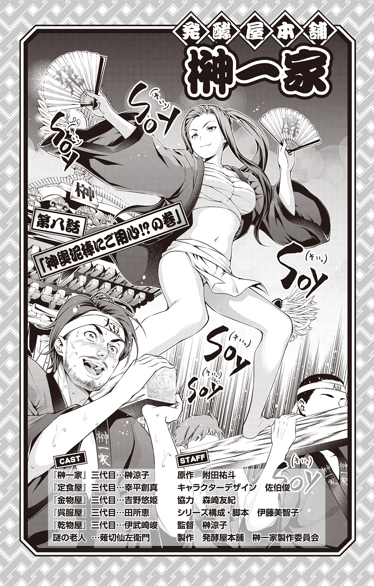
★前回までのあらすじ
「発酵屋本舗 榊一家」三代目、榊涼子は地上げ屋・叡山枝津也とやり合うが、「予算を用意できなければ、町内会はつぶれてしまう。神輿は担げない」と脅されてしまう。
悲しみに暮れる涼子。ショックで部屋に引きこもってしまう。
そんな涼子のために、同級生の悠姫の発案で、幸平創真、伊武崎峻、田所恵の四人は、一肌脱ぐ。
さて、その作戦とは――。
「いらっしゃい、いらっしゃい！ おいしいおいしい唐揚げだよ～。定食屋ゆきひらの絶品唐揚げだよ～」
威勢のいい声で創真が唐揚げを売っている。
「呉服屋・田所では、夏祭りの浴衣をお貸しできますよー」
「金物屋・吉野ではボウルからトライアングルまで何でも売ってまーす！」
「......乾物屋・伊武崎では、かつお節たたき売りやってます」
肉屋の水戸郁魅に連れられ、商店街に出てきた涼子は、同級生達が露店で物を売っている姿に驚く。
「みんな......」
「これでわかっただろ。みんな、お前が神輿に乗る姿を見たいんだよ」
郁魅が涼子の両肩に手を置き、じっとその目を見つめる。
「いつまでも部屋に閉じこもってないでさ。こいつらの想い......受け止めてやれよ！」
「郁ちゃん......」
熱い郁魅の言葉に励まされ、涼子は強く頷く。
「ごめん、みんな！ 私が間違ってた！ やっぱり神輿に乗るよ！」
創真、峻、恵、悠姫の顔が、晴れ上がった夏の空のようにぱぁっと明るくなる。
「よし、もっとじゃんじゃん売って、予算を集めよう」
「これで涼子を神輿に乗せられるよ！」
一同が一致団結した、そのとき。
「ふふ、そんなはした金では、神輿は買えぬ......」
「えっ？」
そこには、白髪に白髭の謎の老人が威風堂々と立っていた。
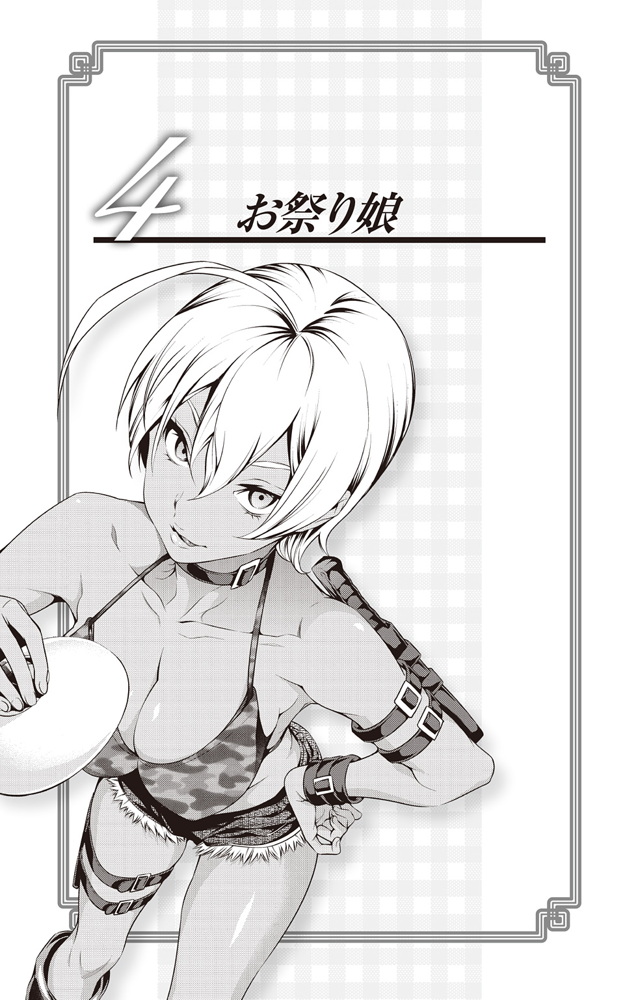
それは、本当に小さな変化だったのかもしれない。
本来なら花を咲かせない木に、ほんの小さなつぼみができるような、本当に小さいけれど、もしかしたら大きな変化。
嬉しいような、ちょっとだけ怖いような。小さな芽のような、でも、もしかしたら小さな棘のような。
以前とは確かに変わっている。でも、変わっていることを認めたくない。
いや、変わってない。変わってないのだ。
鏡の中で少しだけ前髪を気にするあたしは、以前とまったく変わっていない、と水戸郁魅は自分自身に言い聞かせている。少しだけ胸元の開いた浴衣も、別に誰かを意識しているわけではない。髪型や服装を気にするのはたしなみ、そう、たしなみだ。けして、幸平創真に見てもらうことを意識してではない。
それでも、日が暮れる前の夏祭りで賑わう神社の参道を歩きながら、郁魅はきょろきょろそわそわしてしまう。人混みに紛れ、どこかに幸平がいるかもしれないと、そんな淡い期待を抱いてしまう。
（なっ、なにあたし、きょろきょろしてんだ！ 別に幸平のことなんて探してねぇしっ！）
すぐに自分の気持ちを打ち消すが、すぐまた幸平のことを探してしまう――その繰り返しに悶絶しつつも、郁魅はお囃子で賑わう人々の中、カラカラと下駄の音を響かせながら歩を進めるのだった。
それは、三日前にさかのぼる。
夏休みに入り、郁魅は丼物研究会、略して「丼研」に入り浸っている。「秋の選抜」と呼ばれる美食の祭典に出場するため、新しいメニューを考案していた。
本来なら、冷房が効き調理器具も充実した自宅の方が作業しやすいのだが、郁魅は毎日、冷房のない狭い部屋で、部長である小西の暑苦しいリーゼントとライダースジャケットを眺めながらアイデアを練っている。それもこれも。
（べ、別に、幸平が来るかもしれない、とか思ってるわけじゃねぇぞ！）
選抜のお題である「カレー」の鍋を火にかけながら、郁魅はまたも自分の気持ちを打ち消す。
春に幸平と丼研の存続をかけた戦いで負けてからというもの、郁魅の心の中では常に、幸平に対して矛盾するようなやりとりが行われている。
幸平（の作ったシャリアピンステーキ丼）に言われたように、「好きにしていいんだよ。自分らしくふるまってみな」という言葉が聞こえてくるようになったにもかかわらず、郁魅は素直になれない。
（いや、あたしはいつも素直、素直だ）
カレーの味見をしつつ、用意したさまざまな肉との組み合わせを考える。
幸平から教わったこと――「丼はあくまで一椀で完結する」。
肉の善し悪しも大切だが、そこにこだわりすぎると、ひとつの料理としての完成度が低くなってしまう。
今まで、郁魅自身が意識していなかった弱点を、幸平に教えてもらった。
見えていなかった世界を幸平が開いてくれた。
あの対決以来、郁魅の料理に対する向き合い方も変わったような気がする。この「気づき」に関しては、素直に幸平に感謝していた。
「しっかし今日も暑いなー。また幸平、かき氷持ってこねーかなー」
先ほどからパイプイスに座ってマンガを読む小西が、だるい声でつぶやく。
夏休みに入ってすぐの頃、部室に遊びに来た幸平が、かき氷マシンを持ってきてくれたことがあった。あのとき食べた「いちごミルク」は、甘酸っぱいイチゴの果肉と練乳、そしてしゃりしゃりとした氷が絶妙に相まっておいしかったと、郁魅の舌にその味が自然とよみがえってくる。
「なあ肉魅、お前ちょっと電話しろよ」
「はぁっ？ なんであたしが......っていうか、肉魅って呼ぶなって前から言ってんだろ！ だいたいおめー、部員増やしたいならもっと働けよ。部屋でだらだらされると邪魔なんだよ！」
「まあまあそう言わず。誰かいた方が楽しいだろ？ 味見だって、自分でやるより俺が食ってやった方が参考になるだろうしさ」
「うるさいっ！ あたしが一緒にいたいのはお前みたいな暑苦しいヘタレじゃなくて、幸平みたいな......」
「ちわーっす、俺がどうかしたって？」
「！」
郁魅はドキッとして声の方を振り返る。いつの間にか幸平が丼研のドアの前に立っている。
（な、なんであたし今、ドキッ、とかしてんだよ！）
ドキドキする鼓動を抑えこむように、郁魅はまた自分の気持ちを打ち消す。だが、打ち消そうとするほど、頰は赤く染まり、心臓は早鐘を打つように思えてくる。
「おー、幸平、ちょうどいいところに来た。......ん、今日はかき氷機、持ってきてないのか？」
「ああ、あれ実は、今度地元の祭りで使うんで、そっちに回してるんっすよ」
「なんだ、残念だな」
「それで、今日はその祭りのことで、にくみに用があって来たんだけどさ」
「えっ、あたし？」
自分の名前が出たことで、郁魅はまたドキッとする。
「うん。今週の土曜日、うちの地元の神社で祭りがあるんだ。商店街からも夜店とか、いろいろ出店することになっててさ。商店街の若旦那連中が、にくみをぜひ誘ってくれってうるさくって......」
「............」
「ほら、唐揚げの件ではいろいろお世話になったし。にくみはもう、うちの商店街の一員みたいなもんだからな」
幸平はそう言うと、ニッと郁魅に向かって笑いかける。
「商店街の一員」――郁魅の胸がきゅんとする。
今まで誰かに、そんな風に言ってもらったことなどなかったな、と郁魅の頰はますます紅く染まる。
こういうときの幸平は、なんだかずるい。
あくまでも「商店街の一員」と言われただけなのだが、なんとなく幸平に近づけたような気がして、郁魅は何かを期待してしまう。と、同時に、期待している自分にまた悶々としてしまうのだ。
「ま、まあ、その日はたまたま空いてるし......。そこまで言うんなら、行ってやってもいいけど......」
普段よりも小さな声で、郁魅は幸平につぶやく。この複雑な気持ちを悟られないよう、でも本当は悟ってほしいような上目遣いで、郁魅は幸平を見る。
幸平はそんなことはお構いなしといった表情で、「そっか。んじゃよろしくな」と、いつも通りの笑顔を振りまいている。
（......ったく、本当にこいつ、何考えてんのかわかんねぇんだよな）
その「わからなさ」が、自分の中でとてつもなく大きな好奇心をかき立てることを、郁魅はまだ自覚すらしていないのだった。
それから、土曜日が来るのが待ち遠しかった。浴衣を買い、髪飾りを買い、鏡の前で何度もその姿をチェックし、いろいろな着方を試してみた。ぞろっと裾の長い浴衣は、思っていた以上に暑い。
「うぅぅ、あちぃ」
浴衣の裾を少し開けてうちわで扇ぐものの、なかなか涼しくならない。
最近は汗をかいても洗濯機で洗えるポリエステル素材の浴衣が流行っていて、柄もかわいらしいものがそろっている。
（こんな乙女チックなヤツ......もっとかわいくて女の子らしい子が似合うんだろうな。あたしみたいにガサツなのは似合ってないのかも）
一抹の不安がよぎり、鏡の前で意気消沈する。しかし、見慣れてくると、これはこれでイケてるような気がしてくる。
（......こういう女の子らしい格好なら、幸平も褒めてくれるかな......？）
そんな風に考えると、女の子らしい柄をいとおしく思い、着慣れない浴衣の暑さも我慢できるような気がするのだ。
角出し風に結んだ半幅帯の背に、金魚の絵が描かれたうちわを差すと、慣れない下駄につんのめりそうになりながら、いそいそとすみれ通り商店街へと向かった。
まだ明るい、神社へ向かう参道には、たくさんの露店が並んでいる。
昔ながらのわたあめや金魚すくい、たこ焼き、焼きそばなどと並んで、ケバブやスムージー、ポップコーンなど、いろいろな食べ物が人々の目を楽しませている。ちなみにケバブ店の肉は、郁魅が厚意で商店街に安く提供したものだ。その甲斐あってか、ぐるぐると回る肉の塊の前には行列ができている。
「あ、郁魅お嬢様！」
臨時でケバブ店を手伝っている水戸グループの従業員が、郁魅の姿を認めると腰を低くしながらこちらに寄ってくる。
「盛況みたいだね」
「商店街のみなさんも、水戸グループの肉を喜んでくれているようです。品質には間違いがありませんから」
「当然だろ。ところで......あいつは来た？」
「あいつ、でございますか？」
郁魅の言葉に、従業員が首をかしげている。
「あいつだよ、その......幸平創真」
「ああ、郁魅様のご学友の......。でしたら、開店したときに少し顔を出されて、それからまたどこかに行かれたようです。ずいぶんとお忙しそうにしてらっしゃいましたが......」
「......そう」
考えてみれば幸平が忙しいのは当然だ。夜店こそ出さないらしいが、運営の手伝いをすると言っていた。他の商店のフォローに回っているのだろう。
ここで待っていたら、もしかしたら幸平に会えるかもしれない、と思いつつ、逆にそう思われるのもしゃくな気がして、郁魅は歩き出すことにする。
「あ、肉魅ちゃん！」
声に見ると、「唐揚げ対決」のときに見事なヘタレっぷりを発揮していた弁当屋「とみたや」の店主が手を振っている。郁魅がギロっと睨むと、「ひぃ！」と軽くおびえた様子で、自分の持ち場に戻っ自分の持ち場に戻っていった。
（にくみって呼んでいいのは幸平だけなんだよ！）
ふん、と、思わず勇ましく息が漏れるが、しかし考えてみればあの商店会長が郁魅を祭りに呼んでくれたのかもしれない。そう考えると、少し邪険にしてしまったかと反省しないでもなかった。
「あ、あの......もしかして、水戸さん？」
「あんっ？」
おどおどとした声に郁魅が振り返ると、そこには、お下げ髪をした浴衣姿の少女が立っている。郁魅はその少女に見覚えがあった。
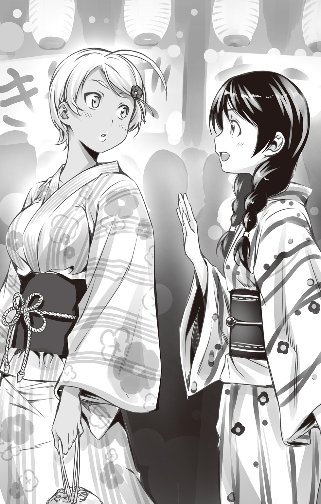
「おまえ......？」
遠月学園でいつも幸平の隣にいる田所恵だ。
それだけではない。この女は幸平とひとつ屋根の下で暮らしている（もちろん寮なので他の生徒もたくさんいるが、それは郁魅にとってはどうでもいい）。なぜか郁魅はイラッとしてしまう。
「なんだてめぇ？」
呼び方も「おまえ」から「てめぇ」とつい変わってしまう。
「ひっ......こここ、声をかけたりしてごめんなさい。もしかしてと思って、つい......。迷惑だったよね？ じゃ、じゃあ......」
逃げるようにその場を去ろうとする田所に、さすがに郁魅も悪かったかと反省する。先ほどの態度は完全に八つ当たりだ。
「おい、ちょっと待て」
だが、呼び止めたことで田所はますます萎縮し、おびえたような瞳でこちらを見ている。
「あ、いや......脅かすつもりはなかったんだ。悪かったな」
「......う、うん」
「おまえも幸平に呼ばれたのか？」
「うん、地元のお祭りがあるって教えてもらって。悠姫ちゃんと涼子ちゃんと一緒に来たんだけど、二人とははぐれちゃったんだ......」
「そうか」
「水戸さんは？ お祭りのお手伝いとか？」
「いや、あたしも遊びに来いって言われただけだ。......おまえ、幸平に会ったか？」
（よし、この流れで質問すれば怪しまれない！ 我ながら完璧な質問スキルだぜ！）
心の中で郁魅がガッツポーズしていることも知らず、田所はいつも通りのゆるやかなテンションで答える。
「私もまだ会ってないの。創真君、忙しくてお店回ったりできないかもって言ってたよ」
「......そうか」
田所の言葉に、また少し、郁魅はがっかりする。
幸平に「祭りに来て」と誘われたことで、心のどこかで「一緒に夜店を見て回れるかもしれない」と、淡い期待を抱いていた。
幸平は田所には「忙しい」と伝えているが、郁魅はそのことを幸平から聞かされてはいなかったことも心にひっかかる。
考えてみれば、幸平の周りにはたくさんの仲間がいる。
学園や寮の仲間はもちろん、商店街の人々も幸平を慕っている。そんな中で、郁魅だけが特別扱いされることはないのだ。そう思うと、なんだか少しだけ、本当に少しだけ淋しさを感じてしまう。
（ってか、別に幸平に特別扱いされたいわけじゃねぇし。淋しいとかありえねぇし）
自分の気持ちを打ち消すように、郁魅はイライラとうちわで扇ぐ。
「......水戸さん、暑いの？ あっちにかき氷あったけど......買ってこよっか？」
「あ、いや、暑いわけじゃねぇし、いいや。気ぃ、遣ってくれてありがとな」
「え、あ、うん......」
郁魅の言葉に、田所が驚いたような顔をしている。
「なんだよ？」
「あ、うん......水戸さんにありがとうって言われると、なんか嬉しいなって」
「なんだそれ？ どういう意味だよ？ あたしだって礼ぐらい言うぞ」
「そういうつもりじゃないんだけど......ほら、なんか水戸さんって、創真君と接してるとき以外は、近寄りがたかったから。嬉しい」
田所は優しい笑顔で郁魅に笑いかける。
その人を癒すような微笑み――おそらく、この笑顔が田所の周りに人を集めるのだろう。普段はついつっぱってしまう郁魅も、その笑顔に心がゆるんでしまいそうになる。郁魅はひとつ、咳払いをすると、ごまかすように田所に尋ねた。
「......おまえ、これからどうするんだ？ 友達、探すのか？」
「うん、そのつもり。何度も携帯に電話かけてるんだけど、二人ともつながらなくて。直接探した方が早そうだから」
「......だったら、一緒に回ってやってもいいぞ。せっかくの祭りだし、ひとりで探すのも味気ないだろうし......いや、まあ、余計なおせっかいだったら別にあれだけど......」
「ううん、全然おせっかいなんかなじゃいよ。水戸さんに会えて、私も嬉しい。お祭り、一緒に回ろう」
また柔らかい笑顔を、田所は郁魅に向ける。素直に笑える女の子は、同性から見てもかわいらしく、好感が持てる。
（ったく、こいつの笑顔も反則だよな）
息をついた郁魅は、田所と連れだって歩き始めた。
夏の長い昼が終わり、辺りは少しずつ、暗くなっている。道の両脇に灯る赤い提灯が、祭りの風情を一層、際だたせているようだ。
参道を抜け、郁魅は田所と共に神社の中に入っていく。
「水戸さんは、もう選抜の料理、決めたの？」
「まだ。おまえは？」
「私もまだ決められなくて......カレーって、何通りもの考え方ができるから、かえって難しいよね」
「そうだな」
郁魅はちらりと、田所を見る。
（田所はどんなカレーを作るつもりなんだ？）
聞いてみたい気もするが、さすがにそれはルール違反か、とも思う。
みんな、秋の選抜に向けてしのぎを削っている。郁魅自身もそうだ。言ってしまえば、選ばれているメンバーはすべて敵だ。他のことならまだしも、勝負事について尋ねるのはやはり間違っている。
同じことを田所も思ったのだろう、あえて「どんなカレーを作るのか」とは聞いてこない。そうなると、必然的に沈黙が生まれてしまう。
（こういうときって、普通、みんな何話すんだ？）
別に郁魅は口べたなわけではない。どちらかというと、自分でもしゃべる方だとは思う。しかし、郁魅がしゃべってきた環境はいつも、父や、二人の兄に敬語を使って話すか、水戸グループの従業員に命令するか、もしくは男子を相手にぞんざいな口をきくぐらいだった。
えりなの派閥に属していた頃は、えりなや、ときどき、その秘書の緋沙子と話すことはあったが、それもどちらかといえば上下関係がはっきりしていた。だからこんな風に、対等に、普通の女の子と話す機会は得られなかったのである。
思えば幸平と知り合ってから、今まで会ったことのないようなタイプの人と接する機会が増えた気がする。
田所はもちろんのこと、小西や、幸平の中学時代の同級生である倉瀬、極星寮の面々や、アルディーニ兄弟とも顔見知りになった。
（......ま、別にこういうのも悪くないよな）
これが今の郁魅の、正直な感想である。
郁魅が会話を続けるための言葉を探していると、田所が突然「かわいい～」と歓声を上げる。釣られて郁魅がそちらを見ると、花や動物など、さまざまな形をした色とりどりのあめ細工が並んでいる。二人は思わず足を止める。
「へぇ、屋台で西洋風のあめ細工なんて珍しいな」
郁魅はのぞきこむように、葉の形や蝶の形をしたあめ細工をじっと見つめる。
「え、これ、西洋風なの？」
「ああ。昔からある日本のあめ細工は、丸い形をした塊の水あめを、塊を活かして動物の形にしていくだろ？ はさみで切ったり、細かい部分を手で修整したりして。反対に西洋のあめ細工は、グラニュー糖やパラチニットと呼ばれる麦芽糖を溶かして、それを小さくちぎったりしながらパーツごとに組み合わせていく作り方をする。ここに並んでるあめは、そっちの方法で作られてるのさ。普通、屋台なら塊の水あめを使う方が楽だけど、見栄えはどうしても単純になりがちだし......」
と、郁魅は話しながら、自分が田所に雄弁に語ってしまっていることに気がつく。
（......って、なんであたし語ってんだ！）
「へぇ～、水戸さんってあめ細工、詳しいんだね」
「......詳しいっていうか......まあ、小学校のとき、ちょっとかじってた程度だけどな」
「えっ！ かじってたって......すごい！」
田所が尊敬のまなざしで郁魅のことを見つめている。その視線に促され、郁魅も半分やけになり自分のことを話し始める。
「うちは父親が厳しくてさ。肉と関係のないことは、あんまりやらせてもらえなかった。特に、女の子らしいことは......」
「えっ......？」
「けど、あめ細工だけは頼みこんだんだ。知っての通り、水戸食肉流通グループは肉を扱ってる会社だ。肉の調理には温度管理がものを言う。特に牛肉は外側だけ火を通して表面についた菌を死滅させ、中はレアにして食べる方法がもっともおいしいと言われている。......ま、もちろんいい肉に限るけどな。それと同じであめ細工も、一番大切なのは温度管理だ。そこをうまく突いて、父に頼んであめ細工を習わせてもらったんだ」
「......そうだったんだ」
「懐かしいな......」
郁魅は蝶の形をしたあめ細工をひとつ手にする。つややかに色づいたあめを見つめていると、自然と昔のことが思い出されてくる。
あれは確か十歳の頃だ。グループの取引先のひとつである有名なホテルのシェフが、自宅の厨房でときどき、あめ細工を教えてくれることになったのだ。
五十代半ばのそのシェフは、月村という名前だったと郁魅は記憶している。
物腰の柔らかい男性で、子どもの郁魅が見ても、あめ細工の腕が素晴らしいのは一目瞭然だった。それから一年ほど勉強し、十二歳になったとき、郁魅はあめ細工のコンクール・小学生の部で優勝したが、それも月村の指導があったおかげである。
さすがに遠月学園中等部に入学が決まってからは、他の料理を勉強しなければならないこともありやめてしまったが、この頃の繊細な技術が、今の郁魅の基礎になっているといっても過言ではなかった。
「あれ、郁ちゃん？ 郁ちゃんじゃない？」
「！」
郁魅が思わず声の方を見ると、屋台の奥から、帽子を被った男性が現れる。それはなんと、あの月村だった。
「！ つ、月村先生！」
「いやぁ、久しぶりだね！ 元気にしてた？」
「はい！」
「......誰？」
驚いている郁魅に、ついていけない様子で田所が尋ねる。
「この人は月村さんっていって、あたしのあめ細工の先生だった人なんだ」
「え、そうなんだ！」
「いやぁ、まさかこんなところで郁ちゃんに会えるなんてな～」
「郁ちゃん......？」
その呼び名に反応した田所が、また郁魅の方を珍しそうに見る。
「......先生、その郁ちゃんっての、やめてくれよ！ なんか恥ずかしーし！」
「肉魅」と呼ばれるのもイヤだが、今やもう誰も呼ばなくなったあだ名で呼ばれるのも、とても恥ずかしい。これなら「肉魅」と言われる方がマシかもしれない。
月村は懐かしさと喜びの混じった視線で、郁魅の方を見つめている。
「郁ちゃん、あめ細工は続けてるの？」
「学校もあるし、最近は全然......っていうか、先生、なんでこんなところに？ ホテルは？」
「定年退職したあと、最近はこうやって、屋台であめを作ったりしてるんだよ。でもこのところ、身体の方もガタがきていてね。そろそろ引退かなと思ったりしてさ」
「何言ってんだよ。まだまだ元気じゃん」
郁魅はそう言いながらも、月村に訪れている変化に気づかずにはいられない。
久しぶりに会う月村は、昔に比べて白髪が増え、少し痩せたように見える。ぴんっと伸びていた背筋も、ほんの少しだけ曲がったような気がする。
「今日もそろそろ店じまいかと思っていたが......まだ閉めなくてよかったよ。郁ちゃんにも会えたしね」
「先生......」
月村の笑顔と言葉が、郁魅には少し感傷的に感じられる。
（そんな淋しいこと言うなよ）
言葉がのどまで出かかるが、郁魅はそれを胸に押しこめる。月村も別に、郁魅に同情してほしいわけではない。きっと、料理人としての引き際をわかっているということなのだろう。
「おじさーん、あめひとつちょうだい！」
「わたしもー」
「僕もー」
いつの間にか子ども達が、店のそばに集まってくる。月村が笑顔であめを手渡す。
「ほら、あまり強く握ると割れるから気をつけるんだぞ」
「はーい」
「この蝶、本物みたーい」
「こっちの葉っぱもきれいだよね」
子ども達は口々にそう言うと、幸せそうな笑顔で去っていく。
「あんな風に子ども達にあめが作れたら......楽しいよね」
子ども達の後ろ姿を見ながら、田所が静かにつぶやく。
（確かに田所は、こういうのが向いてるのかもしれないな）
勝負の世界でガツガツ戦ってのし上がっていくより、誰かのサポートをしたり、誰かのために料理を作る方が向いている気がする。
しかし翻って自分はどうだろう、と郁魅は思う。
自分が作ってきたあめ細工は、誰かのためのものではない。料理の技術を向上させるためのものであり、あめ細工がうまくなることは、コンクールで優勝するためのものでしかなかった。もちろん今まで、そのスタンスに疑問を感じたことも、悪いと思ったこともない。だが、幸平や田所に接していると、ときどき、これまでの自分が何か足りなかったような気持ちにさせられるのだ。
「ねぇ、よかったら、お嬢さんも作ってみる？」
「わ、ホントですか？」
「君みたいにかわいい子なら、喜んで教えてあげるよ」
「かわいいなんて......お世辞でも嬉しいです」
郁魅がもやもやと考えこんでいる間に、いつの間にか月村と田所が親しそうに話をしている。
「おい先生！ なに田所ナンパしてんだよ！」
「郁ちゃんも、久しぶりに一緒にあめ、作ろうよ。お嬢さんにも教えてあげてさ」
「嫌なこった。あたしはもう、あめはやらないって決めてんだよ」
「え、どうして？ そんなに詳しいのに」
郁魅の言葉に、田所が不思議そうに首をかしげる。
「どうしてって......いろいろあんだよ、いろいろ。とにかく、あたしはやんないからな！」
田所と月村にぷいっとそっぽを向いたそのとき。
『アメヨー、アメアメ。アメヨー、アメアメ』
神社の鳥居の方から、甲高い機械的な声と共に、トラックが境内の方へと大きな音を立てながら入ってくる。トラックの両側は『あめ細工・もずや』と派手にデコレーションされ、趣味の悪い電飾がピカピカと光っている。
「な、なんだろう、あれ......」
「ん、もずやって、確か......？」
郁魅が記憶の糸を手繰っている間に、そのトラックは月村のあめ屋台の前に堂々と停車した。トラックのコンテナが開くと、あっという間に即席あめ屋ができあがる。
「あ、『アメヨー』のおばちゃんだ！」
「行こうぜ行こうぜ！」
近くにいた子ども達が、競うようにトラックの前に集まっていく。
「さあさあ、『もず屋』のあめ販売、始まり始まり～！ あめちゃん買うてくれた子には、今はやりの『妖精キャッチ』のシール付き！ ほらほら、急ぎなはれ～！」
トラックの前で扇子を振りながら呼びこんでいるのは、以前、唐揚げ対決で戦った『もず屋』の社長、中百舌鳥きぬだ。
中百舌鳥は郁魅達に気がつくと、意地の悪い表情をしながら近づいてくる。
「あんた確か、水戸グループのお嬢さんでしたな。こないだはえらい恥かかしてもろて」
「ふん。おまえの見こみが甘かっただけだろ。ってか、唐揚げ屋からあめ屋に転職したのか？」
「まさか......事業の拡大です。唐揚げの他に、製菓事業にも参入してますのや。その第一弾がこのあめ細工ですわ」
「......へぇ」
「何店舗か出店させてもろうてましてな。おかげさまで子ども達に大人気のなんのって。人気のアニメコラボも、たくさんやらせてもろてますし、それに一番はこれ......」
中百舌鳥がバチッと扇子を閉じると、そのままトラックの方へ扇子の端を向ける。トラックの中にはスピーカーから流れる『アメヨー、アメアメ』と言う節に乗せて、あめの塊を、うさぎ型に作り続けるロボットマシンが備えつけられている。
「これがうちの秘蔵アイテム、『あめ細工マシンきぬ子』ですわ。三十秒間に約百個のあめを生み出すのや。まさに職人ですわ」
中百舌鳥は頼まれてもいないのにペラペラと話を続ける。
「ま、あんたのところみたいに、時代遅れにのろのろあめを作ってたのんじゃ、さばききれまへんな。伝統もけっこうですけど、この世の中、売れたもんが勝者ですわ」
「............」
中百舌鳥は品の悪い表情で郁魅にメンチを切る。が、まったく動じないどころか、郁魅も激しく中百舌鳥を睨み返す。その眼力に、中百舌鳥は一瞬「うっ」と怯むが、すぐに冷静さを装う。
「......ま、唐揚げ対決の損失、せいぜい取り戻させてもらいまっせ」
ほほほ、と細い目をさらに細めて笑うと、あめのトラックへと戻っていった。
「......はぁ、怖かった......。今の人、水戸さんの知り合い？」
「ま、ちょっといろいろあってな」
「こんな目の前であめを売られちゃったら、こっちにはなかなか買いに来てもらえなくなってしまうな。やっぱり今日は店じまいかな」
「なにヘタれたこと言ってんだ、先生！ 店じまいなんて許さないからな！」
「あ、う、うん......」
「ちっ、やっぱ暑いな」
そう言うと、郁魅は突然、浴衣のおはしょり部分をまくって引っ張り上げると、素早くもう一度、帯で締め直す。短くなった浴衣の裾からは、郁魅のほどよく締まった小麦色の美しい足があらわになる。
「ちょ、ちょっと郁ちゃん......！」
月村が目のやり場に困っているが、郁魅は構う様子もなく、持っていたひもで袖をたすきがけにする。
「......買ってやる」
「えっ？」
郁魅の言葉に、田所と月村が驚いた顔で尋ねる。
「売られたケンカは買ってやる。前言撤回。ひさびさにやってやるよ、あめ細工」
郁魅は、きゅっ、とひもをきつく結んだ。
屋台の裏側には、簡易スペースがあり、そこには小さなカセットコンロとあめ細工用の調理台が用意されていた。
早速、キッチン手袋をした田所と郁魅に、月村が説明を始める。
「砂糖は二種類あるんだ。グラニュー糖とパラチニット。普段、コンテストなんかに出すのはパラチニットを使うんだけど、あんまり甘くないんだよね。やっぱり食べられておいしい方がいいし、ここではパラチニットと水あめ、グラニュー糖も使ってる」
話しながら、月村は小さな鍋に砂糖を入れていく。
「私、昔グラニュー糖でべっこう飴なら作ったことありましたけど......いろんな種類のお砂糖があるんですね」
「グラニュー糖が焦げ始めるのが一七〇度。パラチニットは二〇〇度ぐらいまで焦げないのが特徴だ」
「おっ、郁ちゃん、ちゃんと覚えてるね～」
「当然だぜ」
月村に褒められ、少し得意げに郁魅が胸を張る。火にかけていた鍋の砂糖がふつふつと溶け始める。
「ここに、あめ専用の色素を入れて、色をつける。アイスキャンディに色をつけるヤツと同じだよ」
説明し、ときおり温度計を鍋にかざしながら、月村は色のついたパウダーを鍋に入れ、かき混ぜていく。赤、青、黄、緑など、さまざまな色に染まったあめを、シリコンでできたパッドの上に流し、あめの端から空気を含ませるようにひとかたまりにしていく。
「あめって、こんなに柔らかいんだ」
「『ひきあめ』って言うんだけど、これをラーメンとか、麵を作るときみたいにのばして引っ張って、空気を入れていく。入れる空気を少なくすればガラス細工みたいに透き通った感じになるし、たくさん含ませれば真珠みたいに輝くようになるんだよ」
「へぇ～。あめっておもしろいんですね。こんな風に間近で見るの、初めてだから楽しい」
「そんな甘いもんじゃねぇぞ」
郁魅は少し脅かすような声で田所に話す。
「え、どうして？」
「あめはとにかく、温度が大事なんだよ。徐々に固まっていくから、早く作業しなきゃいけない。冷めたら堅くなって加工できないから、常にランプで光を当てて、六〇度ぐらいを保ちながら細工していくことになるしな」
「じゃあ、すごく熱いんだ」
「慣れないうちは熱いなんてもんじゃねぇよ。水ぶくれはできるし、手は荒れるし......」
「郁ちゃんはそれ、すごく嫌がってたよな。『手ががさがさじゃ女の子じゃないみたい』って。あの頃の郁ちゃんはかわいかったな～」
「おい！ 今がかわいくねぇみたいじゃんかよ！」
「あはは、今の郁ちゃんもかわいいよ、もちろん」
「なっ......！ か、かわいいとか言うな、恥ずかしい！」
照れた様子で、郁魅はバシバシ月村の背中を叩く。けなされればけなされたで怒り、褒められれば褒められたで照れてしまう――郁魅はそんなお年頃だ。
その様子に、田所も少しくすくすと笑っている。
「おい、何がおかしい」
「ひっ......ご、ごめんなさい！ 水戸さんの意外な一面を見た気がして......」
「どういう意味だよ？ あっ？」
「そ、その、女の子らしくて繊細なんだなって......ごめんなさい！」
田所はぺこぺこと頭を下げて郁魅に謝っている。
「......ま、そういうことならいいけどよ......」
郁魅はあめの塊を、大きく横にのばして引き始める。
やっぱり「女の子らしい」とか「繊細」と言われると、なんだかくすぐったくなる。
『水戸家の後継者にしとやかさなどいらん。いいか郁魅、強くあること、それだけを考えろ』。
幼い頃、父に言われた言葉が郁魅の胸にちくりと響く。
母からプレゼントされたクマのぬいぐるみは、父に取り上げられてしまった。それからは、ずっと、水戸家の後継者として強くなれるよう、そのことだけを考えてきた。
だから、あめ細工は郁魅にとって特別だったのだ。
自分の中にある、繊細さや、少女の部分を出すことができる場所――。
それが、あめ細工という作業の中にあった気がする。
でも、だからやめたのだ。このままあめ細工を続ければ、どうしても、自分の中の繊細さと向き合わなければならなくなる。そうなったら、強さだけを追い求めていられなくなるかもしれない。自分の中の女の子に、気づかなくてはいけなくなるかもしれない、と。
郁魅は父の意に逆らうのが怖かった。
だが、幸平と出会い、田所達と出会うことによって、郁魅は少し変わった気がする。それは、大きな変化じゃないかもしれない。だけど。
「よし、このぐらいでいいだろう」
郁魅はあめを十分に引くと、そのつやっぽい塊を、シリコンの台の上に置く。月村が指で触ってその堅さを確認する。
「うん、ちょうどいいな」
「水戸さん、どんなあめを作るの？」
「うーん、そうだな......」
するとそこに、『もず屋』のあめの袋を持った子ども達が通りかかる。
「やった！ 幽霊ニャンコのシールだ！」
「やっぱりニャンコはかわいいよねー」
「ニャンコのシール、もらえてよかった！」
口々に言いながら子ども達が去っていく。その様子を見送りながら、少し残念そうな表情で田所がつぶやく。
「......子ども達は喜んでるし、いいと思うんだけど......。なんか、あめそのものじゃなくて、付属の物で釣って売るっていうのも......ちょっとだけ淋しいね。そうしないと売るのも大変なのかもしれないけれど......」
「中身がよければ売れる、っていうのは、もう幻想なのかもしれないね」
「............」
郁魅は答えず、指先であめの塊を小さくつまむと、その先をはさみで手早く切る。
「とりあえず......今できること、やろうぜ」
「水戸さん......」
「......あたしも物で釣るようなやり方は好きじゃないけど......でも、それだってひとつの方法だ。だから、こっちもできることをやろう」
郁魅は決意の表情で田所の方を見つめる。
「田所、お客さんを何人か引っ張ってこい。あとは......あたしがなんとかする」
もず屋の前には、親子づれや子どものグループで行列ができている。その様子を、中百舌鳥は満足そうに眺めていた。
「やはり子どもは単純......うだうだ戦略なんて考えず、物で釣ったらええのんや」
扇子の奥でつぶやくと、自然に黒い笑いが漏れ出てくる。
「唐揚げの雪辱も果たせそうやな。......ま、あのガキを直接つぶせんのは残念やけど」
目の前にある、郁魅達の屋台の方へと視線を移す。
なんと、幌を外し、屋台をたたもうとしている。どうやら素直に負けを認めたらしい。
「はーん、うちにかなわないと知って、あきらめたか。うまくあのお嬢はんに揺さぶりかければ、水戸グループから、安く肉を融通してもらえるかもしれん。今日は思ってたより収穫ありやな」
ほほほ、と笑おうとしたそのとき、郁魅と一緒にいたお下げの少女が、行列の最後に並んでいた小学生女子に声をかけている。
「ふん......何人かこっちから引っ張ろうって腹か......。そんなことして、うちに勝てるとでも思っとるんか。ま、せいぜいあがけばよろしい。こっちは、あめの速度を速くして一気に引き離してくれるわ」
余裕の笑みを浮かべると、中百舌鳥は機械の速度を上げるため、トラックの方へと入っていった。
それから、十分ほど経っただろうか。
中百舌鳥が屋台の前に戻ってくると、なぜか行列が消えている。
「な、なんや？ どういうことや？」
そして――視線を店の前に移したそのとき。
もず屋に並んでいた子ども達のほとんどが、先ほどたたんだと思っていた、郁魅の屋台前に並んでいるのである。
「な、なにがあったんや！」
中百舌鳥は慌てて郁魅の屋台へと歩み寄る。
たたまれたと思っていた屋台は、いつの間にかオープンキッチンのような調理スペースになっている。小さなカセットコンロとあめ細工用の調理台が並び、月村があめの生地をのばし土台を作り、郁魅がその生地を細工し、田所は呼びこみをしている。
子ども達は、郁魅の手から生み出されるあめ細工を、ため息をついて見つめている。
「きれい......」
「ほんものみたい......」
その透き通った美しいあめ細工は――赤い、みずみずしいつやをまとった薔薇の形をしている。子ども達、特に女の子は、郁魅の指から生み出される繊細な花びらを、感嘆の目で見つめているのだ。
「すごーい！」
「あっという間にばらになってく」
「つやつやしてるよ」
「食べるのもったいないね！」
郁魅はあめを指でつまみ、少し引っ張って形を整える。そして、一枚一枚、花びらを重ねるように、薔薇を作り上げていく。それから、今度は江戸前のあめを作る要領で、固まった水あめにハサミを使い、器用に形を整えていく。
「お姉ちゃん、何作ってるの？」
「それは......じゃーん、できたぜ！」
手早く色素で色をつけ、子ども達の前に掲げてみせる。『妖精キャッチ』のキャラクター、幽霊ニャンコの形をしたあめができあがっていた。
「わぁっ、すげー！ 幽霊ニャンコのあめじゃん！」
「かわいい～、ほしー！」
「ねぇねぇ、それ、俺にも作れる？」
興味津々で見つめる男の子にも、郁魅は優しく答える。
「ちょっと触ってみるか？ 熱いから気をつけろよ」
「うん！」
男の子に手袋をはめさせ、少しだけあめの生地を触らせる。「熱っ」とすぐに男の子は手を離す。
「ほら、だから熱いっていっただろ？ ま、簡単そうに見えて、熟練の技がいる。指先の感覚であめの感じを覚えて、そこから作っていくんだ。薔薇は西洋風のあめ細工を習う時に一番最初に作る形なんだぜ。日本風ならうさぎの形だけどな」
「へえ～」
実演しながら話す郁魅の言葉を、子ども達は真剣に聞き入ってくれる。
（......こういうのも、悪くねぇんだな）
これまで、郁魅の料理人生において、誰かに何かを教えるということはなかった。もちろん、まだ教える立場にはないと思っていたことも大きい。だが、自分の知っていることをこうやって誰かに伝えるのは、意外とおもしろいことなのだな、と郁魅は感じる。
田所がそっと郁魅のそばに寄ると、静かに耳打ちする。
「......なんか、今日の水戸さん、創真君みたいだね」
「はぁっ？ ......あ、あいつとなんか一緒にすんな！」
「ご、ごめんなさい......！」
田所は慌てて薔薇の売り子に戻っていく。
（あいつに似てる、か......）
だが田所にそう言われて悪い気はしない。むしろ、当然かもしれないとも思う。
今回のあめの実演は、幸平が宿泊研修でやった、ライブクッキングからヒントを得たものだ。この方法なら、もず屋から客を奪い返せるかもしれないと思ったのである。
郁魅は、五分に一個のペースで、次々にいろいろな形のあめを作っていく。幸平はたった三十分で二〇〇食を作り上げていた。今回は売り上げのノルマはないが、自分にだってそのぐらいできるはずだ。
郁魅の器用な手さばきに、子ども達だけでなく周囲の大人達も見入っている。
「先生、生地！」
「もうすぐであがるから待ってて」
「薔薇がちょっと足りなくなりそうです」
月村が練り、郁魅が作り、田所が売る。三人で協力しながら、次々とあめ細工を売りさばいていく。
「速さなら、うちの方が上でっせぇぇぇっ！」
よく通る声に見ると、もず屋の中百舌鳥が拡声器を使い、通り過ぎる客達に呼びこみをし始めている。
「うちの機械なら三秒にあめ百個作れまっせ。今ならシール二枚つけて八〇〇円！ そんなのっろいあめ細工より、もず屋のあめの方がお得でっせ～！」
その言葉に、行列の子ども達は顔を見合わせている。
「シール二枚かぁ、悩むな～」
「わっ、こっちのあめ、割れちゃった！」
「アメヨのあめ、うさぎの耳もとれちゃったよ」
その言葉に、中百舌鳥は「うっ！」と顔をしかめる。おそらく、機械に頼って高速で作りすぎたため、あめが固まる再結晶の過程でひびが入ってしまったのだろう。
「やっぱりあっち行こうぜ」
「頼めばニャンコのあめも作ってくれるって言うしな！」
もず屋に並んでいた行列の子ども達は、郁魅のあめ細工に乗り換え始める。
「くぅぅ、そんならシール三枚でどうや！」
「なぁ、もず屋のおばちゃん、いい加減あきらめろよ」
聞き覚えのある声に郁魅が見る。すると。
いつの間にかそこには、幸平が立っている。
「ゆゆゆゆ、幸平！」
「なんだよにくみ、人のこと幽霊みたいに言うなよ」
「あんたは......この間のガキ！」
般若のような形相で中百舌鳥が幸平のことを見つめている。だが、相変わらず幸平はまったく気にしていないようだ。
「もううちの商店街に関わんの、やめてくんねーかな。俺らもそろそろ迷惑なんだけど」
「ふん、うちがどこで商売しようかて、あんたには関係ないやろ」
「まあ、それはそうなんだけどさ。おばさん、機械にまで無理させてるだろ？」
「はぁっ、なんの話や」
「おたくのトラック、煙出てるよ」
「えっ！」
中百舌鳥が慌ててトラックの方を見ると、幸平の言うように煙が上がっている。あめを高速で切りすぎたのが原因のようだ。機械が悲鳴を上げるように『アメヨーアメアメ。アメヨーアメアメ』とむなしく繰り返している。
「ふざけんなや！ この機械いくらすると思ってんのや！ くっそぉ！ おぼえてろよー！」
中百舌鳥は叫びながら、トラックに乗りこむと、トラックは土煙を上げてそのまま走り去っていった。
それから、お祭りが終わる時間まで、郁魅達三人に幸平が加わり、四人であめを売り続けた。結局、子ども達だけでなく大人にも好評で、全部で二百個近くが売れた。
「いやぁ、本当に助かったよ。幸平君、田所さん、それに、郁ちゃん」
後片付けを終え、嬉しそうに月村先生が郁魅達にお礼を言う。
「本当にありがとう」
「おっちゃん、またお祭りのときに、あめ、売りに来てくれよな」
「もちろん。幸平君、商店街のみなさんによろしくね」
「おうっ」
「あ、郁ちゃん、ちょっとちょっと」
月村が郁魅に小さく手招きをしている。「？」と郁魅が寄っていくと、月村は耳元で小さくささやいた。
「......頑張ってね、郁ちゃん」
「なにがだよ？」
「幸平君。いい感じだよね」
「！」
月村の言葉に、郁魅は耳まで真っ赤になる。
「な、な、なな、何言ってんだ先生！」
「わかってるわかってる」
郁魅の態度に月村は「うんうん」と頷くと、荷物を手にその場を去ろうとする。
「それじゃ、みんな、またね」
「さようなら」
「ありがとうございました」
（な、なんなんだよ先生......！）
赤面した表情のまま、郁魅は月村の後ろ姿を見送った。
郁魅と田所、そして幸平は、まだ祭りの余韻が残る境内で、自販機で買ったジュースを飲むことにした。
「それにしてもあいつ、人騒がせなヤツだったな」
「ま、これに懲りて、もううちの商店街にも来ないだろ」
「創真君、お仕事はもういいの？」
「さっき神輿片付けてきたとこ。吉野と榊にも会ったぞ」
「え、ホント？」
「......それがさ、神輿が練り歩くときに、榊が神輿に乗って踊ってたんだよな。あいつって、あんなにちゃきちゃきの江戸っ子だったっけ？」
「へぇ、そうなんだ。涼子ちゃんって、意外なところがあるんだね......あ、そうだ、電話しなきゃ！」
田所は慌てて携帯を取り出し、二人から少し離れて電話をかけ始める。その様子を「相変わらずだな、田所は」と少し笑いながら、幸平は優しく見ている。
「............」
郁魅は仲良さそうに話す田所と幸平を意識せずにはいられない。いつも一緒にいるせいだろうか、二人が話しているのを見ても何の違和感も感じない。それどころか、信頼し合った二人にのみ流れる空気のようなものを感じる。
（ん、あたし今、なんでイラッとしてんだ。幸平に会えて嬉しいはずなのに......いや、別に嬉しくないし！ 期待もしてないし！）
自分の中で、まとまりのつかない感情がまたぐるぐる回っている。そんな郁魅の気持ちに気づかない幸平は、いつものように明るい声で話しかけてくる。
「しかしにくみ、すげぇな！ こんなにたくさんのあめ、作っちまうなんてさ」
「ま、まあ、昔取った杵柄ってやつ？」
「俺、さすがにあめ細工はやったことねぇから、ホント、素直に尊敬するわー」
「......あ、ああ」
（こんな風に面と向かって褒められると......）
心臓が速くなっているのが、自分でもよくわかる。顔もなんだか熱い。もっと話したいことや、聞きたいことがいろいろあったような気がするのに、うまく言葉が出てこない。
「ありがとな、にくみ。うちの商店街、また助けられちまったな」
「......よ、よせやい。そんなんじゃねーよ。たまたま月村さんがその場にいただけだし、それに......もず屋の店主が気に入らねぇってだけで......」
「や、それでもホント助かった。ありがとな」
「............」
「今度、おまえの作ったあめ、俺も食ってみてぇな」
幸平は郁魅の方を見ると、笑顔で笑いかけてくる。
やっぱりなんだか、こういうときの幸平はずるい、と郁魅は思うのだった。
夏祭りから数日。郁魅はやはり丼研の部室に来ていた。
今日はあのうるさい小西もいない。お盆が近いため帰省するのだと、聞いてもいないのにペラペラと教えてくれた。
今日の郁魅は幸平のことを明確に待っていた。
選抜に使うカレーの肉のことで相談に乗ってほしいと幸平に頼まれている。もちろん、敵に塩を送るつもりは毛頭ないが、肉についての知識を少し教えるぐらいなら、差し障りはないだろうと郁魅は思っている。
郁魅がちらっと見る視線の先には、郁魅が作ったあめ細工――調理台に置かれた薔薇の花がある。湿気を避けるためにビニールに空気を入れて密封し、あめのつやをそのまま保てるようにしてあるのだ。
（ま、まあ、この間あんなに褒められちまったしな......。べ、別に幸平のために作ったわけじゃねぇけど......でも、あいつが欲しいって言ったらあげてもいいよな。もちろん）
郁魅はカレーのスパイスをすり鉢で配合しながら、自分に言い聞かせるように心の中でつぶやく。
「おっ、このあめ細工、肉魅が作ったの？ すげぇ、本物みてぇじゃん！」
「！」
その声に郁魅が振り向いたときはもう遅かった。
いるはずのない小西が、バリバリとビニールを開けたかと思うと、薔薇の花のあめを、そのまま頰張った。
「あぁぁぁっ！」
「ん、なんだ、これ、ちょっと堅いな」
「てんめぇぇっ！ なんでいるんだ！ ってか、何勝手に食ってんだぁぁっ！」
その後、小西は郁魅から袋だたきに遭い、一週間の間、部室に通えなかったことは、言うまでもない。
★前回までのあらすじ
「発酵屋本舗 榊一家」三代目、榊涼子は謎の老人・薙切仙左衛門のおかげで神輿資金を調達することができる。同時に強引なやり口の叡山と町内会長の悪事を暴き、無事、夏祭りで神輿を担ぐことができるようになったのである。
今日はその夏祭りの日。榊涼子の威勢のいい声が、町の中に響いている――。
「ＳＯＹ、ＳＯＹ、ＳＯＹ、ＳＯＹ！」（※ＳＯＹとは英語で大豆という意味です）
神輿を担ぐ、威勢のいい男達の声が響く。
豊満な胸にまっさらなさらし。純白のふんどしで美しい足をあらわにし。法被をいなせに身にまとい。両手には扇子を持ちつつ、神輿の上で颯爽と先導し、男衆に担がれているのは、発酵屋本舗・三代目、榊涼子である。
「そーい、そい、そいそいそいそいっ！」
派手に扇子を動かしながら、涼子は血気盛んに踊り続けている。
「涼子ぉぉっ、かっこいぃぃぃっ！」
「姐さんステキぃぃっ！」
神輿が練り歩く大通りの沿道では、涼子の同級生の悠姫や恵、創真、そして峻がその雄姿を見届けている。
「はぁ......かっこいいね、涼子ちゃん。お神輿、担げることになってよかったね」
「うん！ ケンカと花火は江戸の華って感じで、やっぱり涼子には神輿が似合うよね！」
「......榊って、あんな血の気の多いキャラだったんだな」
「......俺も知らなかった」
学校内で涼子が見せる姿とあまりに違うために、創真と峻は思わずつぶやく。
「そいっ、そいっ！ ほらほら、発酵屋本舗三代目、榊涼子のお通りだよ～っ！ そいっ、そいっ、そいっ！」
夏の祭りの下町に
老若男女 みんなが集い
榊涼子は今日もゆく。
男達と涼子の威勢のいい声が、いつまでも町中に響き渡っていたのであった――。
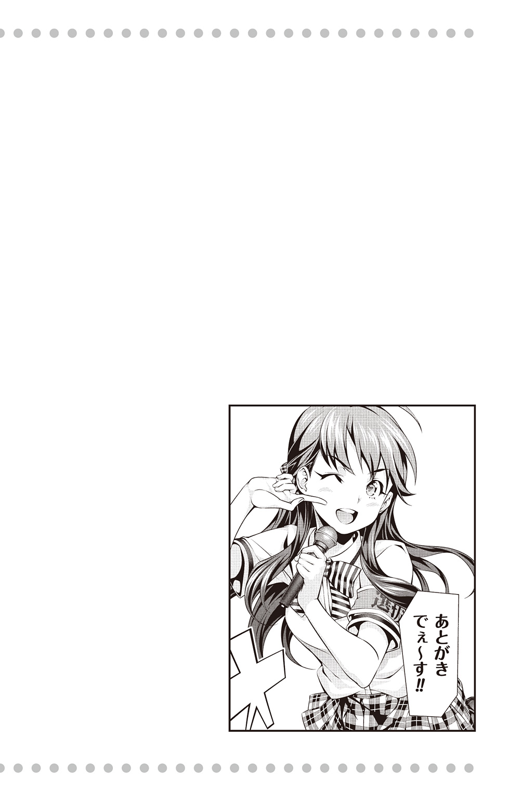
みなさんこんにちは。
小説版「食戟のソーマ」第二弾です。
今回は「スイーツ」をテーマにしつつ、各キャラクターの過去話を交えながら小説を書かせていただきました。
時系列としては、アルディーニ兄弟は十三歳の頃のイタリアを、伊武崎は選抜で敗退したすぐ後を、緋沙子は宿泊研修の前にあたる四月頃を、郁魅は選抜前の夏休みをそれぞれ舞台にしています。
この話を書きながら「自分にとって思い出のスイーツはなんだろう？」とぼんやり考えてました。
が！ そんなことを考えている間にじわじわと締め切りが迫ってきて、結局は思い出せないままに書き終わってしまいました（笑）。
それぞれのエピソードを読んでいただきつつ、「思い出のスイーツ」に思いを馳せていただければ幸いです。
今回もお忙しい中、監修いただいた附田先生、素敵な挿絵を描いて下さった佐伯先生、料理協力の森崎先生、週刊少年ジャンプ担当の中路様、ありがとうございました。
また「あめ細工」の取材に快く応じてくださった、帝国ホテルの望月完次郎様、並びに従業員のみなさま、そして、紹介して下さったＹさんには、心よりお礼を申し上げます。
そしてそして、時には励まし、時には叱咤し、迷ったときに相談に乗ってくださった小説担当の佐藤さん JUMP j BOOKS 編集部のみなさま、校正の長澤様、印刷所のみなさま、大変お世話になり、ありがとうございました。
最後に、この本を手に取り、ここまで読んで下さった読者のみなさま。本当にありがとうございます。
原作と合わせて、小説も楽しんでいただければ幸いです。
それではまた、お目にかかれる日まで。
伊藤美智子
■初出
食戟のソーマ 〜à la carte〜 Ⅱ 甘い記憶 書き下ろし
著者紹介
附田祐斗
今回も「食戟」の住人たちの人生が、より深く掘り下げられています。
僕も彼らの生活を、一読者として（いつもより少し遠くから）眺めるような気分で読みました。
小説版、第二弾!! めしあがれ！
佐伯 俊
やっと緋紗子をカバーにしっかり登場させることができました！
コミックス２巻カバーに手だけ登場していたのですが...これでもう悔いはありません！
伊藤美智子
フランス語検定を受けるために勉強中です。
一科目だけでも単語を覚えたりするのが大変なのに、学生さんの試験は大変だな、と思います。
改めて尊敬します！
（通ってきた道ではあるけれど）
ジャンプジェイブックスDIGITAL
食戟のソーマ 〜à la carte〜 Ⅱ甘い記憶
著者 附田祐斗／佐伯俊／伊藤美智子
協力 森崎友紀
© 2015 Y.TSUKUDA／S.SAEKI／M.ITO
２０１５年４月30日発行
この電子書籍は、ジャンプジェイブックス「食戟のソーマ 〜à la carte〜 Ⅱ 甘い記憶」
２０１４年11月９日発行の第１刷を底本としています。
装丁 勝亦一己
編集協力 佐藤裕介［STICK-OUT］
発行者 鈴木晴彦
発行所 株式会社 集英社
〒１０１－８０５０
東京都千代田区一ツ橋２丁目５番10号
０３－３２３０－６０８０（読者係）
制作所 株式会社デジタルディレクターズ
本作品の全部また一部を無断で複製、転載、改竄、インターネット上に掲載すること、および有償無償に関わらず、本データを第三者に譲渡することを禁じます。なお個人利用の目的であっても、コピーガードを解除しての複製は、法律で禁じられています。